About this manual
Purpose
BrokerVerse OOTB is the insurance broking system of iorta TechNXT for non-life brokers in the Philippines. One system covers the whole broking cycle: prospects, requests for quotation to insurers, quotations, placement, policy issue, billing and collection, remittance to insurers, commission, endorsements, claims, renewals, the general ledger, bank and insurer reconciliation, the month-end and year-end close and the BIR returns.
This manual tells each user how to do his or her work in BrokerVerse. It is organised by persona: each persona chapter lists the menus of the role, the daily and periodic tasks, and the step-by-step procedure for every screen the role uses, with the fields, the rules the system applies, the buttons, the status that results and what the system does next (the bill, the receipt, the journal, the notification) and where to find the record afterwards.
How the manual is organised
| Chapter | Content |
|---|---|
| Getting started | Signing in, passwords, two-step verification, the screen layout, notifications, My Profile and account security, lists, forms, statuses and approvals, the audit trail. |
| The business process end to end | The broking cycle from prospect to reports, with who does each step and on which screen. |
| One chapter per persona | System Administrator; Sales & Marketing (Account Executive); Processing Team; Operations (client servicing); Claims; Accounting; Accounting Manager. |
| Go-Live Data Load | The configuration and migration workbooks loaded before go-live through the go-live data load API. |
| Distribution, programmes and products | Lead assignment, distribution channels, dealer programmes, fleet schedules, marine open covers, comparison reports, campaigns and the Report Builder: screens shared by Sales, Processing and Operations. |
| Module reference | Every menu screen in menu order: purpose, main fields and rules. |
| Reports, dashboards, schedules and notifications | A short guide; the Reports Book and the Schedules and Batch Jobs document hold the detail. |
| Troubleshooting, FAQ and glossary | Common messages and what to do, and the Philippine insurance and accounting terms used on the screens. |
Read Getting started and The business process end to end first, then the chapter of your persona. A task that two personas share is described in full once, in the chapter of the persona that owns it, and the other chapter points to it.
Conventions
| Convention | Meaning |
|---|---|
| Operations > Sales & Marketing > Prospects | A menu path: open each item in the sidebar in turn. |
| Create Prospect | A button, tab, field or status, written exactly as it appears on the screen. |
limits.quote_validity_days | A setting on Master > Configuration. The System Administrator maintains settings. |
| PS-2026-00023 | A record number from the test system shown in the screenshots. |
| PHP 1,250,000.00 | Amounts in Philippine pesos. The screens show the peso sign, for example ₱1,250,000.00. |
| 03/10/2026 | The screens show dates as DD/MM/YYYY (general.date_format) in Manila time (general.timezone). |
| Maker and checker | The maker enters a transaction; a different user, the checker, approves it. |
Getting started
Signing in
Every person has his or her own user ID. Never share a user ID or a password: every action is recorded against the user in the audit trail.
- Open the BrokerVerse address given by your System Administrator in Chrome, Edge or Firefox. The sign-in page shows an illustration on the left and the sign-in panel on the right, with the logo and name of the brand pack of your environment.
- In User ID, type your user name, for example maria.rivera.
- In Password, type your password. Select the eye icon to show the password while you type; select it again to hide it.
- Select Sign in.
A language box appears at the top of the panel only when more than one screen language is offered. The delivered system offers English, so there is no language box.
BrokerVerse opens your landing page: the first dashboard your role may open, or the first screen of your menu. One more step can follow the password, in the same panel:
| Screen after the password | When it appears |
|---|---|
| Change password | You signed in with a temporary password, an administrator has reset your password, or your password is older than 90 days (security.password_max_age_days). |
| Two-step verification | Two-step verification is on for your user. |
| Set up two-step verification | Your role must use two-step verification (security.require_2fa_roles) and you have not set it up yet. |
If your session ended while you were away (your password was changed, your account was updated or you signed in elsewhere), the sign-in page says so above User ID: sign in again.
Password rules
The rules come from the security settings. With the delivered settings a password must:
- have at least 8 characters (
security.password_min_length); - contain an upper-case letter (A-Z), a lower-case letter (a-z), a digit (0-9) and a symbol, for example ! @ # $;
- differ from your last 5 passwords (
security.password_history_count).
Every screen where you choose a password lists these rules under New password and ticks each rule as soon as the new password meets it. The last rule is checked by the server when you save.
Change your password at sign-in
When BrokerVerse asks for a new password after the password step, the panel shows Change password with the reason under the title: You must choose a new password before you continue. or, for an expired password, Your password has expired. Choose a new one to continue.
- In Current password, type the password you signed in with.
- In New password, type the new password and check that every rule is ticked.
- In Confirm new password, type it again.
- Select Change password and continue. Back to sign in returns to the sign-in panel without a change.
To change your password at any other time, see My Profile and account security below.
Forgotten password
- On the sign-in page, select Forgot password? on the line of the Password label.
- On Reset your password, type your User ID or e-mail address and select Send code. If the account exists and has an e-mail address, BrokerVerse e-mails a 6-digit code to it. The message on screen is the same whether or not the account exists.
- On Enter the verification code, type the code in Verification code (from the e-mail), then the New password and Confirm new password, and select Reset password. Send a new code sends another code if the first one did not arrive.
- BrokerVerse returns to the sign-in panel with the message Password reset. Sign in with your new password. Sign in with the new password.
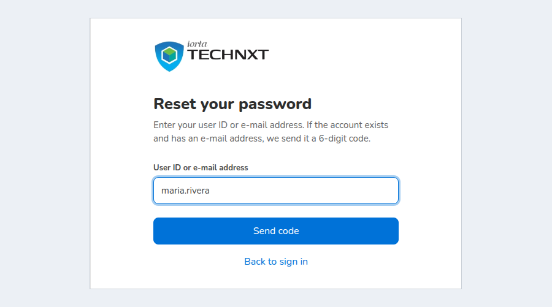
Back to sign in leaves the reset at any step. The code is valid for 15 minutes (security.reset_code_minutes) and is withdrawn after 5 wrong entries (security.reset_code_max_attempts). If your user has no e-mail address, or e-mail sending is not switched on, ask the System Administrator to reset your password.
Failed sign-ins and locked accounts
A wrong user ID or password shows a message in red above the Sign in button. After 5 failed attempts in a row the user is locked (limits.max_login_attempts). The system also allows only 10 sign-in attempts in 5 minutes per computer and per user name (security.login_rate_limit). A locked user asks the System Administrator to unlock the account (System Administrator chapter, Users).
Two-step verification at sign-in
Two-step verification adds a 6-digit code from an authenticator app on your phone, such as Google Authenticator or Microsoft Authenticator. When it is on for your user, the panel shows Two-step verification after the password.
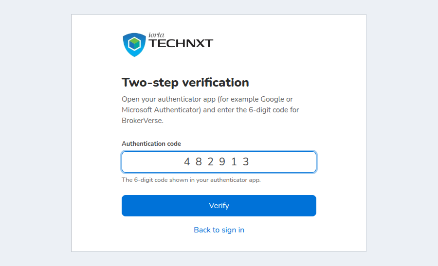
- Open the authenticator app and find the BrokerVerse entry.
- Type the current 6-digit code in Authentication code.
- Select Verify. A wrong or expired code shows The code is not valid. Try the current code.; type the code the app shows now.
The page waits 5 minutes for the code (security.two_factor_challenge_minutes); after that, select Back to sign in and sign in again. If your role requires two-step verification and you have not set it up, the panel shows Set up two-step verification with the subtitle Your role requires two-step verification. Set it up to continue. and the same set-up steps as in Set up two-step verification below; after Turn on you are signed in. Cancel returns to the sign-in panel.
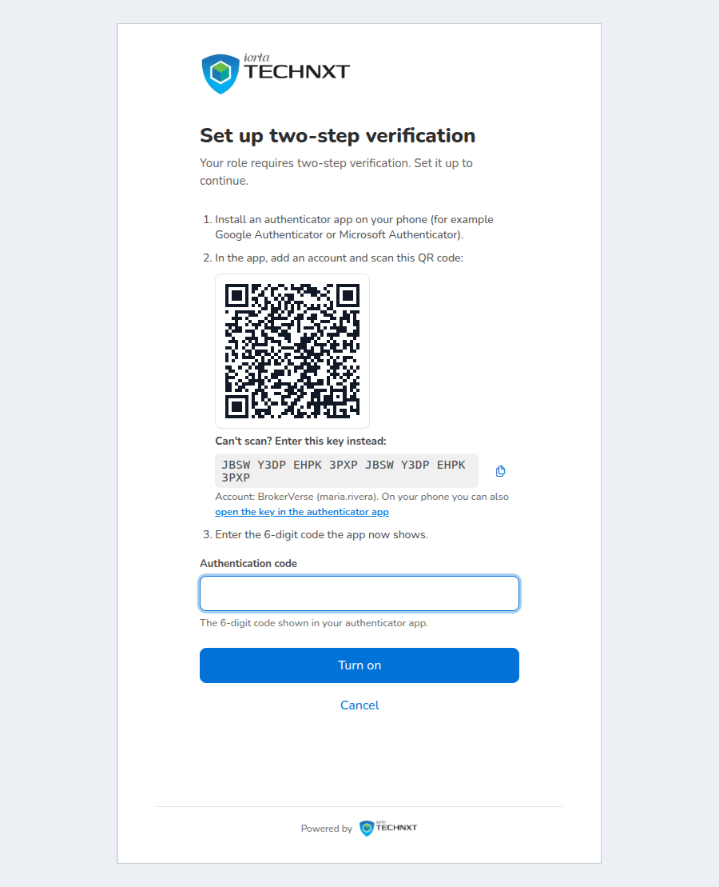
Automatic sign-out
After 30 minutes without activity BrokerVerse signs you out (limits.session_idle_minutes). Anything not saved on the screen is lost, so save before you leave your desk. Your session also ends when your password is changed or reset, when your user is deactivated and when your role changes. To sign out yourself, select your initials at the top right, then Sign out.
The screen layout
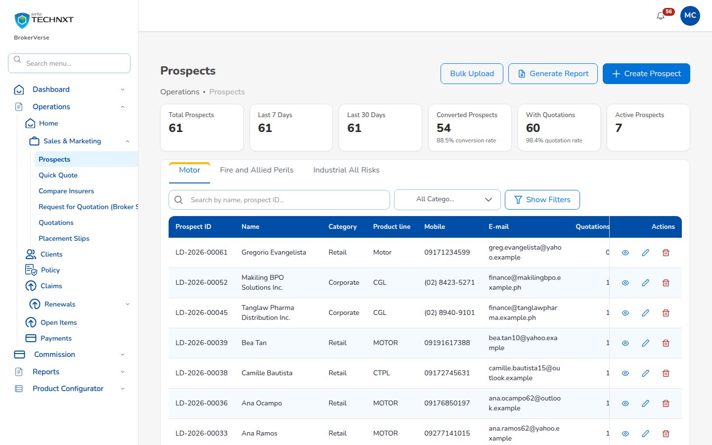
| Area | What it does |
|---|---|
| Logo and name | The logo and application name of the brand pack of your environment. |
| Search menu... | Type part of a screen name, for example quot. The list shows each matching screen of your menu with its path; select one to open it. |
| Sidebar menu | The menus of your role, in business order: Home, Dashboard, Operations, Accounts, Commission, Reports, Master, Product Configurator. Select a menu to open its items; the menu you used last stays open. Master lists its screens under headings (Organization, Insurance, Location, Employees, Users and Access, Finance, System). A shortened name shows in full when you point at it. Press / to jump to Search menu.... |
| Notification bell | The red badge shows the number of unread notifications, up to 99; above that it shows 99+. Select the bell to see the latest. |
| Your initials | The initials of your display name in a circle. Select them for the account menu. |
| Work area | The screen you opened, with its title and the breadcrumb (for example Operations • Prospects). |
The top bar shows a language box only when more than one screen language is offered.
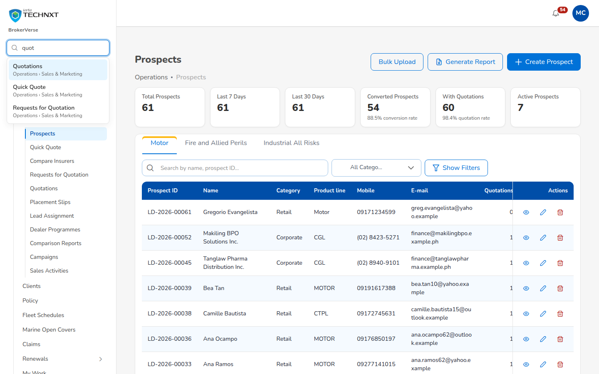
The account menu
Select your initials at the top right. The menu shows your initials, your display name and your role, then:
| Item | What it does |
|---|---|
| Profile | Opens My Profile (see My Profile and account security). |
| Change password | Opens the Change password dialog. |
| Two-step verification | Opens the Two-step verification dialog: see whether it is on, turn it on or off. |
| Help | Opens the Help panel on the right: Help for this screen (the section of this manual for the screen you are on), Download user manual (PDF), the support desk's e-mail, telephone and hours, Raise a support ticket, the keyboard shortcuts and About BrokerVerse (version, environment, build date). F1, or ? outside a text box, opens it from any screen. |
| Sign out | Ends your session and returns to the sign-in page. |
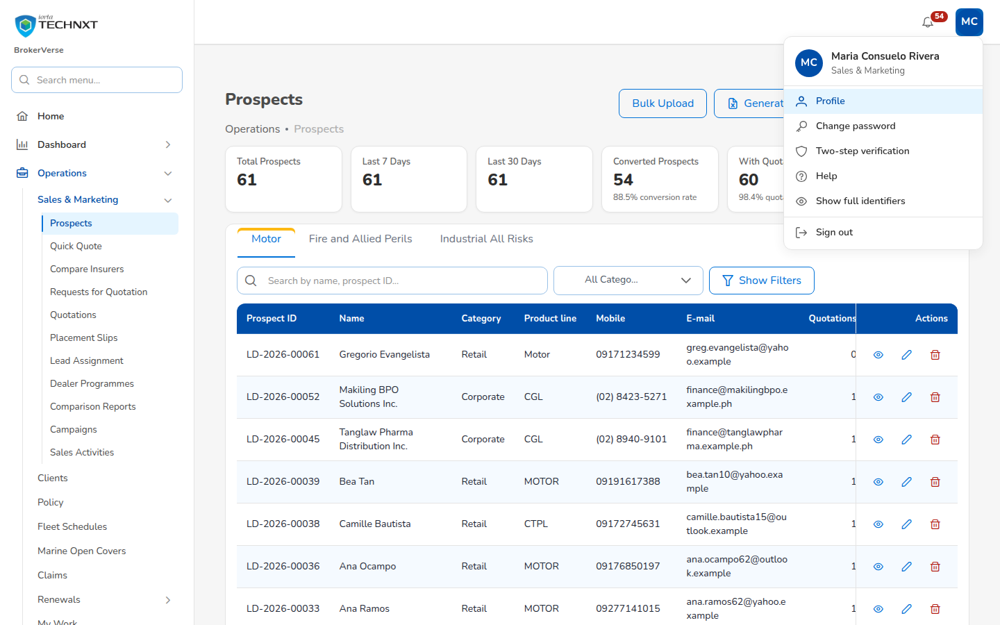
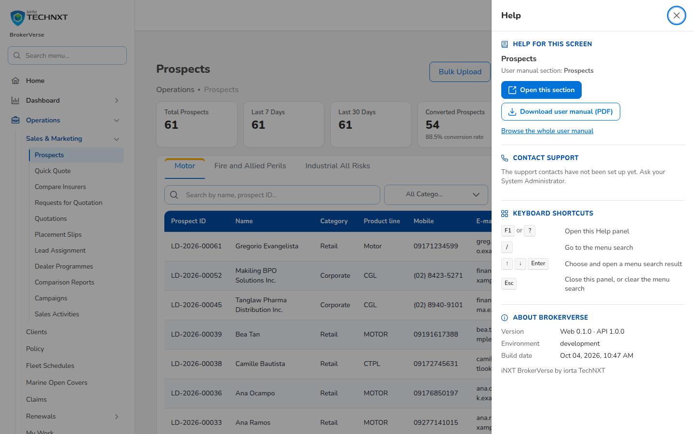
Notifications
BrokerVerse notifies you when something needs your action or concerns your work: a quotation sent for approval, a premium payment to verify, a new claim, a settlement waiting for approval, a renewal notice sent, a close run to approve. Approval requests go only to users who may approve them.
Select the bell. The Notifications panel shows the number unread and your six latest notifications, newest first, each with its title, message, date and time. A blue dot marks an unread notification.
- Select a notification to mark it as read.
- Select the X on a notification to remove it.
- Select Mark all as read to clear the badge.
- Select View all notifications for the full Notification page, which lists every notification with its title, message, type (Info, Task, Approval, Reminder and others), priority and time.
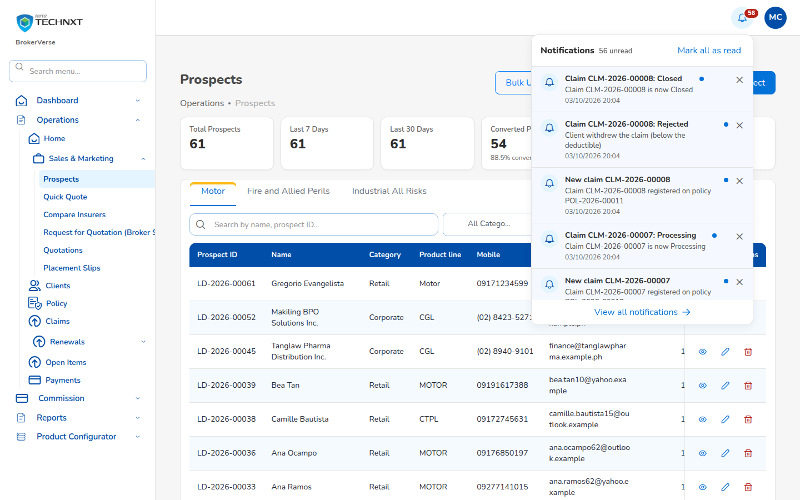
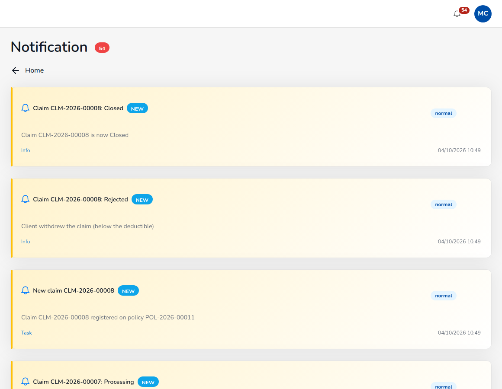
My Profile and account security
My Profile
Select your initials, then Profile. My Profile (breadcrumb Home • My Account • My Profile) has two parts.
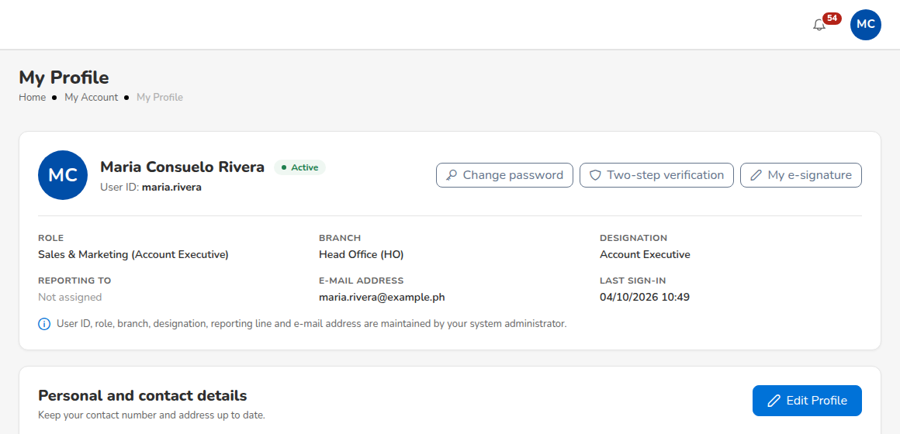
The account summary at the top shows your initials, display name, status (Active), User ID, and Role, Branch, Designation, Reporting to, E-mail address and Last sign-in. The System Administrator maintains these on Master > Users and Access > User; you cannot change them here. The buttons Change password and Two-step verification open the same dialogs as the account menu.
Personal and contact details shows your details in three groups:
| Group | Fields |
|---|---|
| Personal information | First name (required), Last name, Display name (required; shown in the top bar, on approvals and in the audit trail), Employee No. (maintained by the System Administrator), Date of birth, Gender (Male, Female, Other, Prefer not to say) |
| Contact | E-mail address (maintained by the System Administrator), Contact number |
| Address | House No. / Unit No. / Street, Barangay / Subdivision, City / Municipality, Province, ZIP code, Country |
To change them:
- Select Edit Profile. The fields you may change open for editing; fields marked * are required.
- Correct the fields. The address lists work from the top down: choose Country (Philippines by default), then Province, then City / Municipality, then Barangay / Subdivision. Each list offers the names of the address masters and also accepts a name you type. Choosing a barangay fills an empty ZIP code with its postal code.
- Select Save changes. BrokerVerse shows Your profile has been updated. and the new display name appears at once in the top bar. Cancel closes the form without saving.
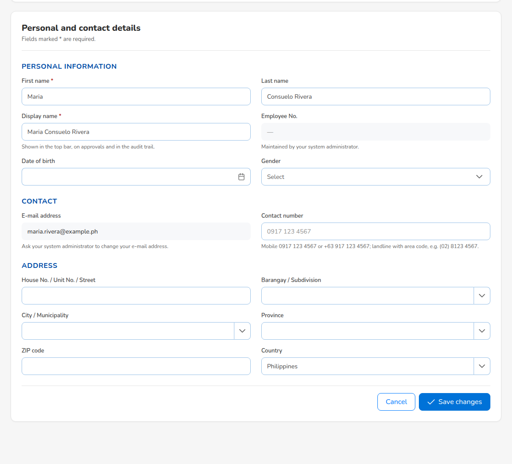
| Message | Meaning |
|---|---|
| Enter your first name. / Enter the name to display. | First name or Display name is empty. |
| Enter a Philippine number, for example 0917 123 4567 or (02) 8123 4567. | The contact number is not a Philippine mobile (0917 123 4567 or +63 917 123 4567) or landline with area code. |
| Enter a valid date of birth in the past. | The date of birth is in the future or not a date. |
| A Philippine ZIP code has 4 digits. | The ZIP code of a Philippine address does not have 4 digits. |
Change password
Select your initials, then Change password (or Change password on My Profile).
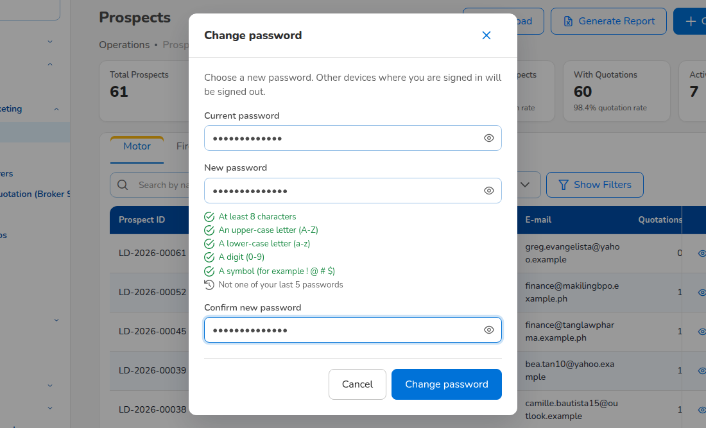
- In Current password, type your present password.
- In New password, type the new password and check that every rule is ticked.
- In Confirm new password, type it again.
- Select Change password. BrokerVerse shows Password changed. Your other sessions have been signed out. Other computers and browsers where you are signed in are signed out; your current session continues. Cancel closes the dialog without a change.
Set up two-step verification
Any user can turn on two-step verification. The System Administrator can make it compulsory for roles with security.require_2fa_roles; no role requires it in the delivered set-up. iorta TechNXT recommends it for the System Administrator, Accounting and Accounting Manager roles.
- Select your initials, then Two-step verification (or Two-step verification on My Profile). The dialog says Two-step verification is off.
- Select Turn on.
- Install an authenticator app on your phone if you do not have one.
- In the app, add an account and scan the QR code. If you cannot scan it, type the setup key shown under Can't scan? Enter this key instead: (the copy icon copies it). On the phone itself you can open the key in the authenticator app with the link under the key.
- Type the 6-digit code the app now shows in Authentication code and select Turn on. BrokerVerse shows Two-step verification is on. Cancel returns to the status without turning it on.
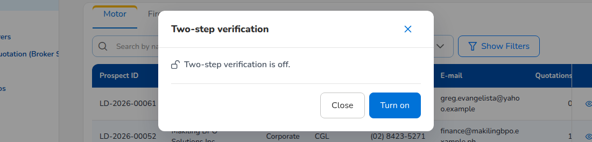
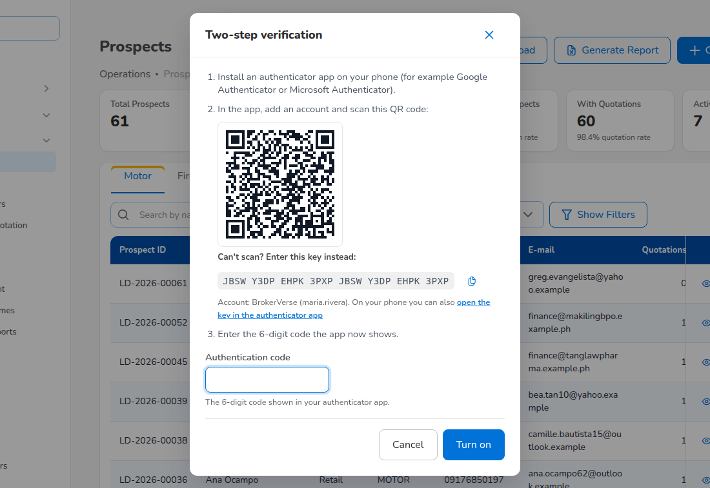
From then on the sign-in page asks for the code after the password. To turn it off, open Two-step verification again, select Turn off, type a current code from the app and confirm with Turn off. A role that requires it cannot turn it off: the dialog says Your role requires two-step verification, so it cannot be turned off. If you lose your phone, the System Administrator turns it off for your user (Master > Users and Access > User, account actions) and you set it up again.
Roles and menus
Your role decides which menus you see and which screens you may open. The server checks the same permissions on every request, so a screen missing from your menu is refused even if its address is typed in.
| Persona (role) | Users in the screenshots | Top-level menus |
|---|---|---|
| System Administrator (Super Admin Access) | BrokerVerse, beatriz.lacson | Every menu |
| Sales & Marketing (Account Executive) | maria.rivera, paolo.dizon | Dashboard, Operations, Commission, Reports, Master (Distribution Channels), Product Configurator |
| Processing Team (Placement & Policy Processing) | jose.bernardo, rica.fernandez | Dashboard, Operations, Reports, Master (Distribution Channels), Product Configurator |
| Operations (Client Servicing) | ana.buenaventura | Dashboard, Operations, Reports, Master (Distribution Channels), Product Configurator |
| Claims | carlo.estrada, joy.macaraeg | Dashboard, Operations, Reports, Master (Claim Document Checklist, Repair Shops) |
| Accounting | liza.quiambao, nestor.pangilinan | Dashboard, Operations, Accounts, Commission, Reports, Master |
| Accounting Manager | teresa.villaroman, ramon.almario | The menus of Accounting |
Each persona chapter lists the exact items of each menu. The Accounting Manager holds the Accounting role as well, so the menus are the same; the difference is in the approvals.
TISPH roles
The TISPH roles follow the RBAC v4 sheet of the Pre-BSM workbook: thirteen TIS personas and SUPERID for user acceptance testing. Each starts from the menus of the broker role closest to it; the permissions decide what the role may change. Sales and Operations both raise quotations, placement slips, policies, endorsements and renewals; the approval is always another user's who holds the approval permission (approve:quotations approves a quotation, approve:policies decides the check of a placement against the slip, approve:renewals approves renewal terms, approve:claims takes the claim decisions: review, reject, settle, approve a settlement, close).
| Role | Code | May change | Approves (never own work) | Menus |
|---|---|---|---|---|
| TIS Sales Associate | tis-sales-associate | Prospects, clients, quotations, placement slips, policies, endorsements, renewals, sales activities | Nothing | Those of Sales & Marketing, plus Accounts (Receipts, Collections) to read |
| TIS Sales Officer | tis-sales-officer | As the Sales Associate, plus lead assignment and campaigns | Quotations, placement checks, renewal terms | As the Sales Associate |
| TIS Sales Unit Head | tis-sales-unit-head | As the Sales Officer, plus telesales incentives | As the Sales Officer, plus supplier invoices | As the Sales Associate, plus Disbursement, Payables and Incentive |
| TIS Operations Associate | tis-ops-associate | Quotations, placement slips, policies, endorsements, renewals, claims (register, follow up, documents), fleet schedules, open covers | Nothing | Operations, claim screens and masters, Accounts (Receipts, Collections) to read |
| TIS Operations Officer | tis-ops-officer | As the Operations Associate | Nothing | As the Operations Associate, plus Journal Voucher and Fixed Assets to read |
| TIS Operations Unit Head | tis-ops-unit-head | As the Operations Associate | Quotations, placement checks, renewal terms, claim decisions, supplier invoices | As the Operations Officer, plus Disbursement and Payables |
| CCD-PDU (Post-Dated Cheques) | tis-ccd-pdu | Post-dated cheques and receipts | Nothing | Post-Dated Cheques, Receipts, cash reports |
| CCD-PDC / CCD-ADA | tis-ccd-pdc | Post-dated cheques and receipts | Nothing | As CCD-PDU, plus Collections, Bank Reconciliation and Insurer Reconciliation to read |
| CCD-BP / QRPh (Receipting) | tis-ccd-bp | Receipts and collections | Nothing | As CCD-PDC |
| CCD-Recon (Reconciliation and Reversals) | tis-ccd-recon | Receipts (reversals), collections (adjustments), bank and insurer statement reconciliation | Insurer statement reconciliations | As CCD-BP, plus Open Entry Matching and Unmatching, Disbursement |
| TIS Finance & General Accounting | tis-finance | Commission, remittance, disbursements, journal vouchers, payables, fixed assets, period end, bank reconciliation | Supplier invoices, period close, bank reconciliations, posting rule changes, credit control | Those of Accounting, plus Audit Trail and Schedules |
| TIS IT AppSupport / Admin | tis-it-admin | Users, roles, access control, settings, reference masters, product configurator, schedules and interfaces; no business transaction | Authority limits | Master, Product Configurator; business screens to read |
| TIS General Manager | tis-general-manager | Prospects to claims, as the Sales Unit Head and the Operations Unit Head together | Quotations, placement checks, renewal terms, claim decisions, supplier invoices | Every front-office and accounting screen; User Management and Audit Trail to read |
| SUPERID (UAT only) | tis-superid | Everything: the role includes the System Administrator | Everything | Every menu |
The persona the RBAC v4 screen matrix calls CCD-PDC is called CCD-ADA in its department table; the one role carries both names until TISPH confirms one. The Corporate Sales Officers of the user list take the Sales Officer role. SUPERID is for user acceptance testing: set the role Inactive on Master > Users and Access > Role before go-live, and its users lose every access at once. Only a System Administrator may give SUPERID to a user or change the role, as for the System Administrator role itself.
If you open the address of a screen your role may not use, BrokerVerse shows that you are not authorised. Choose a screen from your menu instead.
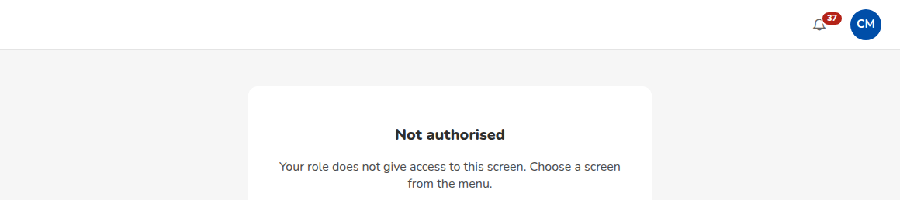
Working with lists
Most screens open on a list. The lists work the same way everywhere:
- Search: type in the search box above the list. Some lists have a field selector next to the box (for example Policy Number) that sets which column is searched.
- Filters: select Show Filters where offered, choose the values (status, product, insurer, dates, amounts) and select Apply Filters. Clear Filters removes them; Hide Filters closes the panel.
- Tabs and cards: many lists have status cards or tabs at the top (for example Motor, Personal Accident and Product not yet tagged on Prospects). Select a card or tab to narrow the list.
- Sorting: select a column heading to sort by it; select it again to reverse the order.
- Paging: lists are paged by the server, 20, 50 or 100 rows per page (Rows per page). Use the arrows at the bottom right (first, previous, next, last page). The text next to the arrows shows the rows on screen and the total, for example 1 - 20 of 82. Search and filters apply to the whole list, not only to the page on screen.
- Row actions: at the end of the row. The arrow or eye opens the record, the pencil edits it, the three dots (More actions) open the other actions. An action that does not apply to the row is greyed out.
- Export: lists that can be exported have Export, Export CSV, Excel or Generate Report. The file downloads to your computer.
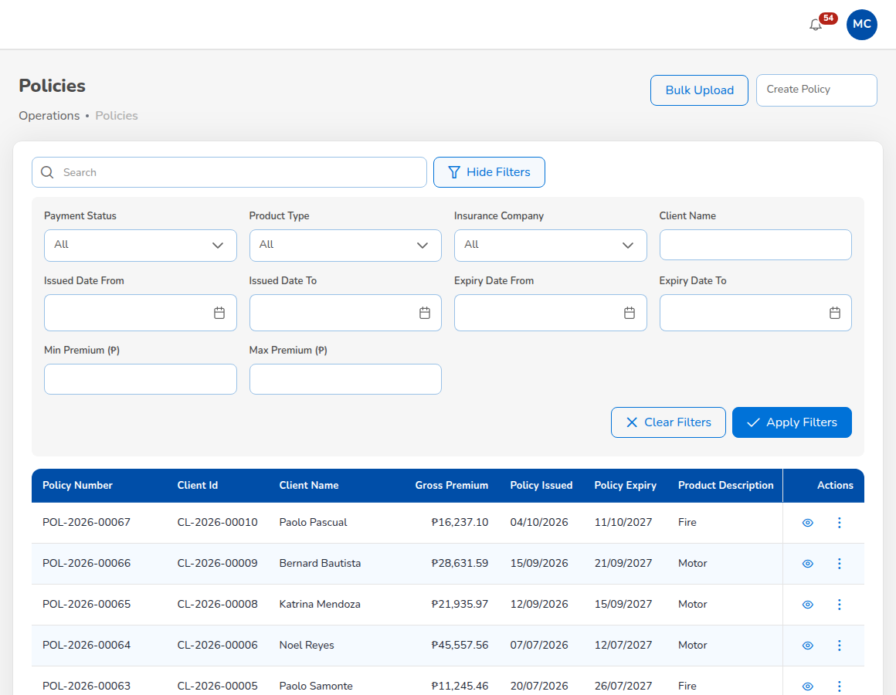
Status tags are coloured: green for completed, active or paid; amber for pending or waiting; red for rejected, overdue or declined.
Working with forms
- Required fields are marked with a red asterisk (*). A form cannot be saved until every required field is filled in.
- Lists in a form (insurer, product, province, city) offer only active master records. Where one list depends on another, choose the first one first: country, then province, then city; vehicle brand, then model, then variant.
- When a value breaks a rule, the message appears in red under the field or in a message box at the top, for example a mobile number that is not a Philippine number, a date of loss outside the policy period, or co-insurance shares that do not total 100%. Correct the field and save again.
- Add and edit forms of the masters and of several accounting screens open as a panel on the right-hand side of the screen. Longer forms (a request for quotation, a placement slip, a receipt) open as a page of their own.
- Save (or the action named on the button, for example Save and submit to market, Record payment, Create Placement Slip) stores the record. Cancel, Back or the X closes the form without saving. Nothing is stored until you save.
- After a save the system shows a confirmation at the top right and, for most records, the number it issued (for example PS-2026-00023). Many lists highlight the new row.
- Uploads accept the formats named under the field, for example PNG, JPEG or PDF up to 2 MB for claim documents, .xlsx or .csv up to 10 MB for bulk uploads. Bulk uploads offer Download Template: use it, because the template has the exact columns.
Statuses, approvals and maker-checker
Every record carries a status that tells where it is in its life: a quotation goes from Draft to Pending Customer to Customer Accepted to Converted to Policy; a placement slip from Placement raised to Sent to insurer, Acknowledged, e-Policy received, Checked against slip and Insurer issued (Booked). The persona chapters give the statuses of each record and the module reference lists them all.
Maker-checker means that the user who enters a transaction cannot approve it. BrokerVerse refuses the approval with a message when the maker tries, and notifies the users who may approve. The maker-checker points are:
| Transaction | Maker | Checker | Setting |
|---|---|---|---|
| Quotation approval | The creator of the quotation | Another user holding approve:quotations; the roles of quotations.approval_notify_roles are notified | workflow.quote_maker_checker |
| Check of a placement against the slip | The user who recorded the e-policy | Another user holding approve:policies | placement.check_maker_checker |
| Renewal terms | Operations or Sales & Marketing | Another user holding approve:renewals; the roles of renewals.approver_roles are notified | renewals.maker_checker |
| Claim settlement | The user who submits it | Another user holding approve:claims (Claims; TIS Operations Unit Head) | claims.settlement_maker_checker |
| Journal voucher, correction and reversal | Accounting | Another Accounting user or the Accounting Manager | journal.require_approval, finance.maker_checker_enabled |
| Payment voucher, cheque, commission payout, petty cash | Accounting | Another Accounting user | finance.maker_checker_enabled |
| Remittance, settlement and adjustment | Accounting | Another user within the Remittance approval or Remittance settlement limit (Accounting up to PHP 1,000,000.00, Accounting Manager without limit) | Authority Matrix |
| Commission debit note (direct bill) | Accounting | Another Accounting user | built in |
| Incentive calculation batch | Accounting | Another Accounting user | built in |
| Month-end and year-end close | Accounting | Accounting Manager | accounting.period_close_requires_approval |
| Bank reconciliation, insurer statement reconciliation, credit control decisions | Accounting | Accounting Manager | built in |
| Posting rule and account determination changes | Accounting Manager or System Administrator | Another of them, on Configuration Approvals | built in |
On top of maker-checker, the Authority Matrix (Master > Users and Access) can set the largest amount each role may approve per transaction type, and Segregation of Duties rules stop conflicting roles being given to the same person. access.authority_enforced and access.sod_enforced are on in the delivered set-up.
Where the audit trail is
BrokerVerse records every create, change, approval, report run and sign-in with the user, the time and the values before and after.
| Where | What you see | Who |
|---|---|---|
| Master > Audit Trail | Every audited action, searchable by record type, record ID, user and dates. | System Administrator |
| Audit Trail tab of a quotation, History of a policy, claim, client or master record | Every event of the record with date and time, user and role, source (screen, API, system job) and each field changed (old value and new value); filter by text, user and kind of event; Export to Excel or CSV. | Users who open the record |
| History of a period, reconciliation, close run or posting rule | Each status change with user, time and remarks. | Accounting, Accounting Manager |
| Prepared by, Submitted by, Approved by on approval screens | The maker and the checker of the record. | Users of the screen |
| Master > Users and Access > User, Sign-in history | Every sign-in attempt of a user with result, method, IP address and browser. | System Administrator |
The business process end to end
The broking cycle
Every piece of business passes through the same cycle. Each step is done on its own screen, usually by a different team, and each step leaves a numbered record behind. The diagram shows the cycle; the numbered list and the table below give the detail.
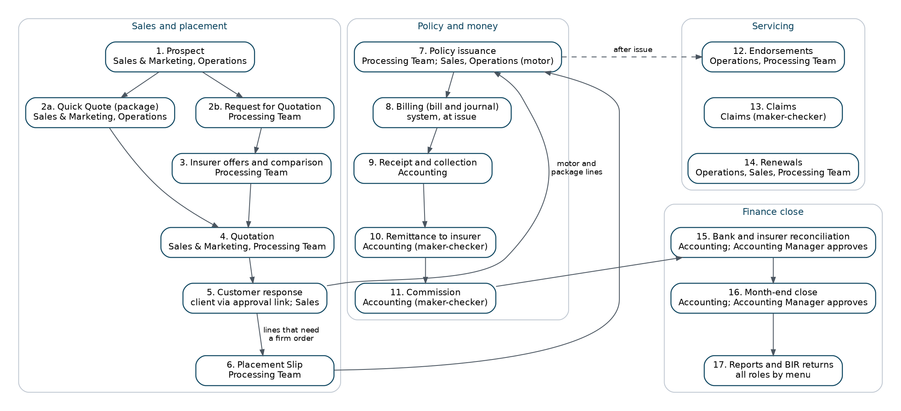
- Prospect. The person or company that may buy insurance is recorded with contact details and address. Number LD-YYYY-NNNNN.
- Quick quote or request for quotation. A package product with a tariff (motor, CTPL) is priced on the spot with Quick Quote. A non-package risk (fire, IAR, marine, engineering, casualty, employee benefits) is presented to several insurers with a Request for Quotation (broker slip). Number BS-YYYY-NNNNN.
- Insurer offers and comparison. Each insurer's offer or decline is recorded against the request (OFR-YYYY-NNNNN). The offers are ranked by gross premium and compared, and the security is chosen: one insurer at 100%, or a lead insurer and co-insurers with shares that total 100%.
- Quotation. The chosen terms are priced for the client in a Quotation Slip: net premium, VAT, documentary stamp tax, local government tax, fire service tax where it applies, CTPL for motor, gross premium and commission. Number QT-YYYY-NNNNN.
- Customer response. The quotation is sent to the client for approval. The client accepts through the approval link, or the account executive records the answer received by e-mail, phone, Viber or WhatsApp, meeting or signed form: Accepted, Declined or Revise.
- Placement slip. When the client accepts a quotation the placement slip is raised automatically and its PDF is kept with it. It is e-mailed to the lead insurer and the co-insurers with the slip attached, the insurer acknowledges it and later returns the e-policy, which is checked against the slip by a second user. Number PS-YYYY-NNNNN.
- Policy issuance. The broker never issues cover: the policy comes into force only when a checked placement slip is booked as Insurer issued. The bill, journal and commission are booked then, the cover notes end and the policy schedule is e-mailed to the client. The client record is created from the prospect. Numbers POL-YYYY-NNNNN and CL-YYYY-NNNNN.
- Billing. At issue the system raises the premium bill to the client (broker billed) or books the commission due from the insurer (direct bill), and posts the journal with each insurer's payable and commission on its own line. Numbers INV-YYYY-NNNNN and JV-YYYY-NNNNN.
- Receipt and collection. Operations or the account executive records how the client paid; Accounting verifies the payment and posts the official receipt against the bill. Collections follows unpaid premium by ageing bucket and sends reminders. Numbers OR-YYYY-NNNNN and RT-YYYY-NNNNN.
- Remittance to the insurer. Collected premium, net of the broker's commission and its taxes, is remitted to each insurer by its share, through a remittance, an insurer settlement and a payment voucher, each approved by a second user. Numbers REM-, SET- and PV-.
- Commission. The commission share of the agent or referrer (comsub) becomes eligible when the premium is fully collected, is approved by a second Accounting user and is paid by payment voucher less withholding tax. For direct-bill policies the broker bills its commission to the insurer with a debit note (DN-).
- Endorsements. A change to an issued policy (client details, vehicle, cover, period, cancellation) is requested, sent to the insurer and completed with the insurer's endorsement. Additional premium is billed and return premium credited. Number END-.
- Claims. A loss is registered against the policy, the Preliminary Loss Advice goes to the insurer, the adjuster report and the assessment are recorded, and the settlement is approved by a second Claims user. Number CLM-.
- Renewals. Policies enter the renewal pipeline 90 days before expiry, renewal notices go out 60, 30 and 15 days before, renewal terms are negotiated and approved, and the renewed term becomes a new policy.
- Bank and insurer reconciliation. Each bank statement is imported and matched with the books; each insurer's statement of account is imported and matched with the remittances and debit notes. Accounting prepares; the Accounting Manager approves. Numbers BST-, BRC- and ISR-.
- Month-end close. Accounting runs the close steps and the checklist for the period and submits the close; the Accounting Manager approves and the period closes. Number MEC-. The year-end close (YEC-) follows the twelfth month.
- Reports. Production, claims, renewal, remittance and commission registers, the statement of account, the trial balance and financial statements, and the BIR forms and alphalists (VAT summary, SAWT, QAP, SLSP, BIR Form 2307).
Who does each step and where
| # | Step | Persona | Screen |
|---|---|---|---|
| 1 | Prospect | Sales & Marketing, Operations | Operations > Sales & Marketing > Prospects |
| 2 | Quick quote | Sales & Marketing, Operations | Operations > Sales & Marketing > Quick Quote |
| 2 | Request for quotation | Processing Team (Sales and Operations can start one) | Operations > Sales & Marketing > Request for Quotation (Broker Slip) |
| 3 | Insurer offers and comparison | Processing Team | Request for Quotation: tabs Market responses, Compare offers |
| 4 | Quotation | Sales & Marketing, Operations; Processing Team for quotation slips from a request | Operations > Sales & Marketing > Quotations |
| 5 | Customer response | Client (approval link); Sales & Marketing records other answers | Quotation: Send for Customer Approval, Record customer response |
| 6 | Placement slip | Processing Team | Operations > Sales & Marketing > Placement Slips |
| 7 | Policy issuance | Processing Team | Placement Slip: Book (Insurer issued) |
| 8 | Billing | System, at issue; Accounting for direct-bill debit notes | Policy: Premium Accounting Entries; Accounts > Remittance > Direct Bill Processing |
| 9 | Receipt and collection | Operations or Sales record the payment; Accounting posts the receipt | Policy: Proceed to Payment; Accounts > Receipts; Accounts > Collections |
| 10 | Remittance to insurer | Accounting, maker and checker | Accounts > Remittance; Accounts > Disbursement |
| 11 | Commission | Accounting, maker and checker | Commission > Agents/Referrer Accounts; Accounts > Disbursement |
| 12 | Endorsements | Operations raise; Processing Team complete | Operations > Policy: More actions > Endorsement |
| 13 | Claims | Claims, maker and checker | Operations > Policy: More actions > Claim; Operations > Claims |
| 14 | Renewals | Operations, Sales & Marketing; Processing Team approve terms | Operations > Renewals |
| 15 | Bank and insurer reconciliation | Accounting; Accounting Manager approves | Accounts > Bank Reconciliation; Accounts > Insurer Reconciliation |
| 16 | Month-end close | Accounting; Accounting Manager approves | Accounts > Period End > Month-End Close |
| 17 | Reports | Every role, per its menu | Reports; Accounts > Tax; Dashboard |
The placement journey by line
Not every line uses every step. The steps a line must, may or does not use are set in placement.journey and placement.journey_by_business_type (Master > Configuration, area Sales, Quotations & Placement). In the delivered configuration every line, renewals included, is placed through a placement slip: no quotation converts to a policy directly and no policy is entered after the fact. Motor comprehensive needs a quotation; CTPL may be placed directly with its LTO document or official receipt. A step set to Not used is refused with a message that names the line.
Each quotation, request for quotation and placement slip shows its journey as a progress bar: Request for Quotation, Quotation Slip, Placement raised, Sent to insurer, Acknowledged, e-Policy received, Checked against slip, Insurer issued (Booked). Each step shows the number of its record or its date, or Optional, Required or Not used.
What the system posts
Every journal is built from the posting rule of its business event (Master > Finance > Posting Rules). Accounting Flow (Master > Finance) is the accounting reference of these entries: for every event, grouped by module, when it posts, the approval before posting and its debit and credit lines with the accounts in force today. It is built from the rules and accounts in force, so it is always current; export it as the Accounting Entries Handbook (PDF) for Finance sign-off, or to Excel for audit.
Each payable and commission line carries the insurer, so the remittance, the Co-insurance Register and the Due to Insurers by Co-insurer report show each insurer's part. A rounding difference of a share split goes to the lead insurer.
System Administrator
Role summary
The System Administrator (role System Administrator (Super Admin Access)) sets up and looks after BrokerVerse: users and roles, access controls, the company and its letterhead, the masters (insurers, products, covers, locations, banks, chart of accounts, tax codes), document numbering, the configuration settings, the schedules, the e-mail outbox and the audit trail. The role sees every menu and can open every screen of the other personas. Keep it for administration and give each person a business role for daily work; give the System Administrator role to as few people as possible.
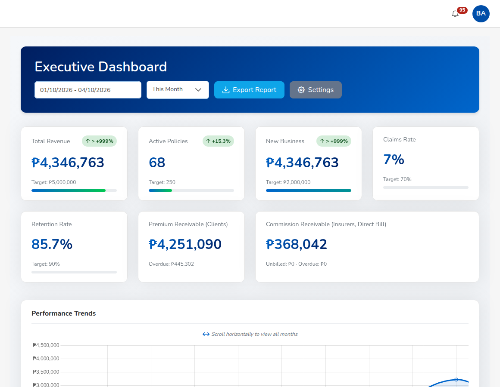
Menus available
Every menu: Dashboard, Operations, Accounts, Commission, Reports, Master and Product Configurator. The menus used for administration are:
| Menu | Items |
|---|---|
| Master > System | E-mail Layout, Documents and Reports Layout, Document Signatures, Configuration, Document Numbering, Schedules, Audit Trail, E-mail Outbox, Integrations, Message Templates, Insurer Integration |
| Master | Organization (Company, Branch, Sales Activity Types, Sales Activity Outcomes); Insurance (Insurance Company, Line of Business, Product, Cover, Signatories, Vehicle, Short-Period Rates, Cancellation Reasons, Claim Document Checklist, Repair Shops, Distribution Channels); Location (Country, Province, City / Municipality); Employees (Hierarchy, Designation); Users and Access (User, Role, User Access Matrix, Role Permissions, Authority Matrix, Delegations, Segregation of Duties, Access Reviews) |
| Master > Finance | Account Determination, Posting Rules, Configuration Approvals, Accounting Flow, Package Bundles, Insurer Rate Tables, Premium Taxes & LGU Rates, Payment Gateways, Commission Rate Matrix, Transaction Code, Currency, Exchange Rate, Bank, Account Category, Main Account, Sub Account, Taxation, Close Checklist, Asset Classes, Bank Statement Formats, Bank Transaction Types, Insurer Statement Formats, Bank File Layouts, Remittance Master, Incentive Programs |
Daily and periodic tasks
| When | Task | Screen |
|---|---|---|
| Daily | Unlock users and reset passwords on request | Master > Users and Access > User |
| Daily | Check the e-mail outbox for failed messages | Master > E-mail Outbox |
| Daily | Check that the schedules ran (Last status) | Master > Schedules |
| On request | Add a user, change a role, deactivate a leaver | Users and Access > User |
| On request | Add or change insurers, products, covers, banks and other masters | Master > Insurance, Master > Finance |
| On request | Change a business setting agreed with the process owner | Master > Configuration |
| On request | Change the e-mail layout, the layout of the documents and reports, the signature mapping | Master > System > E-mail Layout, Documents and Reports Layout, Document Signatures |
| On request | Set up or switch on a connector (SMS, CTPL authentication, insurer API, bank files) with the server administrator | Master > Integrations |
| Monthly | Review users without two-step verification, dormant users and segregation-of-duties conflicts | Users and Access > User Access Matrix |
| Quarterly | Run an access review | Users and Access > Access Reviews |
| Before go-live | Company and letterhead, official receipt numbering to match the Authority to Print, security settings, e-mail settings | Company, Document Numbering, Configuration |
| Before go-live | Check the reconciliation of the configuration and migration workbooks loaded by the implementation team, set the go-live lock | Master > Configuration (chapter Go-Live Data Load) |
Users
Add a user
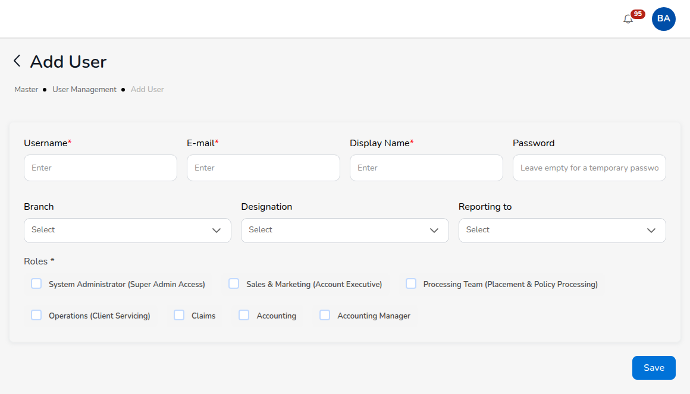
- Choose Master > Users and Access > User and select Add.
- Enter Username (the user ID used to sign in), E-mail and Display Name. All three are required. The e-mail is where Forgot password? sends its code.
- Leave Password empty: the system then generates a temporary password ("Leave empty for a temporary password").
- Choose the Branch, the Designation and Reporting to (the user's manager), if your organisation uses them.
- Under Roles, tick the role or roles. The roles are grouped by department (Sales, Operations, Cash Control, Finance and Accounting, IT, Management), each with a one-line description; a role in no department is under Other roles. A person normally holds one role. The roles of the base platform (System Administrator, Sales & Marketing, Processing Team, Operations, Claims, Accounting, Accounting Manager) are not offered for a new assignment; a user who still holds one sees it under Other roles, where it can be unticked. The departments, the descriptions and the platform roles are the settings
access.role_groupsandaccess.platform_roles(Master > Configuration). Whenaccess.sod_enforcedis on, a combination listed on Segregation of Duties with the action Block is refused. - Select Save. The temporary password is shown once. Hand it to the user privately.
A duplicate username is refused. At the first sign-in the user must choose a new password (Getting started).
Account actions
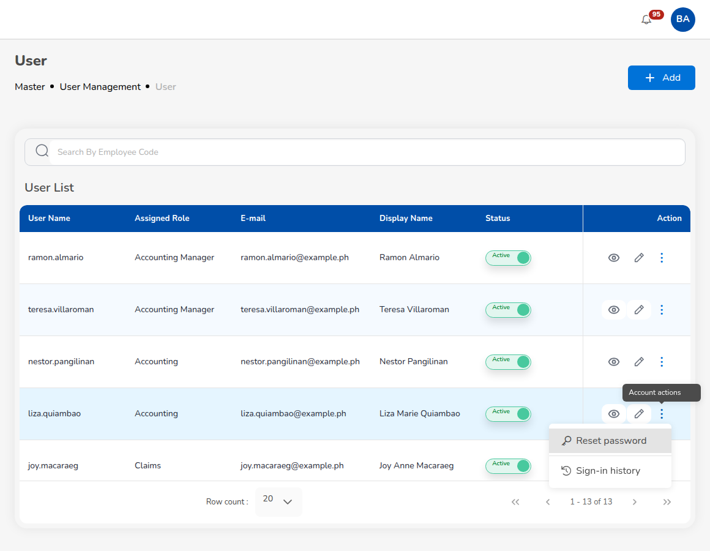
The user list shows User Name, Assigned Role, E-mail, Display Name, Status and Action. The three dots at the end of a row (Account actions) offer the actions that apply to the user:
| Action | Use it when |
|---|---|
| Unlock | The user is locked after 5 failed sign-ins. |
| Reset password | The user forgot the password and cannot use Forgot password?. A temporary password is shown once and every session of the user ends. |
| Turn off two-step verification | The user lost the phone with the authenticator app. |
| Sign-in history | Every sign-in attempt of the user with date, result, method, IP address and browser. |
The eye opens the user, the pencil edits the display name, e-mail and roles (a role change ends the user's open sessions), and the Status switch deactivates a leaver. Records of a deactivated user are kept. The daily Dormant accounts job deactivates users who have not signed in for 90 days (access.dormant_days).
Roles and role permissions
Role lists the TISPH roles by department, with who changed each role last and when (System set-up for a role that has not been changed since it was set up); tick Include the base platform roles to list the seven broker roles of the base platform as well (see TISPH roles under Roles and menus). Role Permissions shows what each role may do, in business words and in the order of the menu, on three tabs:
- By role: on the left the TISPH roles by department (Sales, Operations, Cash Control, Finance and Accounting, IT, Management) with their active users; Include base platform roles adds the generic roles of the platform. On the right the selected role, area by area (Sales & Marketing, Operations, Accounts, Commission, Reports, Product Configurator, Master data and configuration, Users and access, Basic and special access): each module with its screens and the levels View, Create and edit and Approve (Special for full personal data), each with a tooltip of what it allows. A level that comes from an included role shows a link and "Through Accounting" (the Accounting Manager includes Accounting); the System Administrator and SUPERID have Full access. Find a module or screen searches the modules, their screens and what the levels allow; Only modules with access hides the others; the area names at the top jump to an area. 6 users opens the User Access Matrix on the users of the role.
- Edit access (users who may change roles) turns the levels into switches. Switching on Create and edit or Approve also switches on View; switching off View switches off the other levels of the module (you are asked first). A level that comes from an included role and Basic access cannot be changed here. The bar at the bottom counts the changes and the segregation-of-duties warnings; a rule set to Block refuses the change. Review and submit lists the change by area, who is affected and the warnings, and asks for the reason (Reason Codes, Change of access). The change then waits for the approval of another administrator: the role shows Waiting for approval with the requester, the date, what is added and removed and the reason; an approver who did not request it and does not hold the role approves or rejects it (with a reason) there or on the Waiting for approval tab; only the requester may withdraw it. Once approved, the users of the role (and of the roles that include it) sign in again with the new access. Nobody changes a role he or she holds, and only a System Administrator changes a full-access role.
- Compare roles: two to four roles side by side, module by module; the modules where they differ are marked, and Show differences only keeps those.
Export to Excel downloads, for an audit, every TISPH role from By role (the base platform roles too while they are shown), the compared roles from Compare roles and the roles with a change waiting from Waiting for approval: the access by role, module and level, the matrix of modules and roles, the changes waiting for approval and the list of permission codes. The first sheet names the roles exported. Administrators may switch on Show technical names (the ⋮ menu) to see the role and permission codes.
Access controls (the ⋮ menu) shows the switches that decide how access is enforced: Changes of access wait for a second administrator, Segregation of duties is checked when roles are given, Approvals are checked against the approval limits and what happens to An approver without a limit for the transaction (May approve or Is refused). A change takes a reason and always waits for another administrator, even switching the approval off; Master > Configuration shows these settings read-only.
The menus are set per role by the TISPH screen matrix and do not follow these levels: giving View on a module lets the role use that module where its menu reaches it. While Changes of access wait for a second administrator is on, a permission list saved on the Role form also waits for approval.
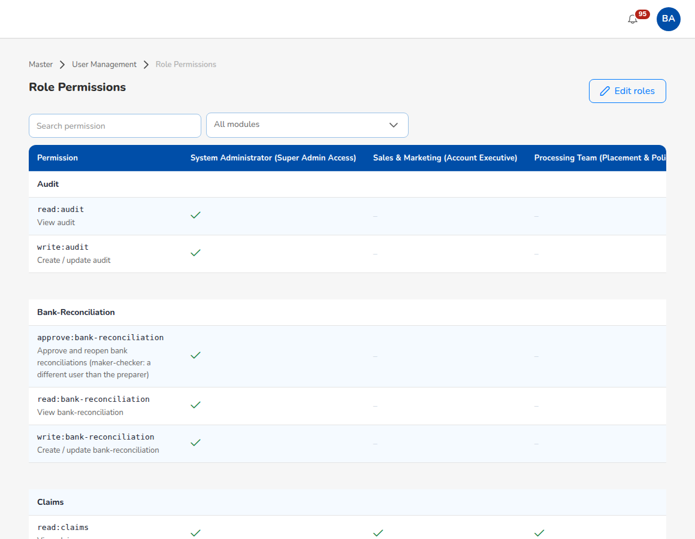
User Access Matrix
The matrix lists who has access to what, for an audit: each user with roles by name (a role held through another role, such as the System Administrator through SUPERID, shows as an outlined chip), department, branch, status, last sign-in, two-step verification, password age and segregation-of-duties conflicts. Active users show by default; the Status filter shows the others. The cards at the top count Active users, Dormant (no sign-in for the dormant period), Open SoD conflicts (active users with a conflict and no exception in force), Without two-step and Waiting for approval (users concerned by a change of access waiting for approval); select a card to filter the list. Filter further by name, Department and Role; Include base platform roles adds the generic roles of the base platform to the role list.
Select a user to open the access panel: roles with their department and the roles they include, what the person can do by area and module, approval authority today (with its source: a role, a personal limit or a delegation), delegations given and received, conflicts with their exceptions, the last access review and the changes waiting for approval. The ⋮ menu of a row opens the user record, the conflicts on Segregation of Duties and, for users who may manage users, Sign out everywhere (an administrator account only by a System Administrator).
Export to Excel downloads the users, the roles of each user (direct or through another role), the conflicts with their exceptions and the delegations in effect, with the company, the date and time and who exported it.
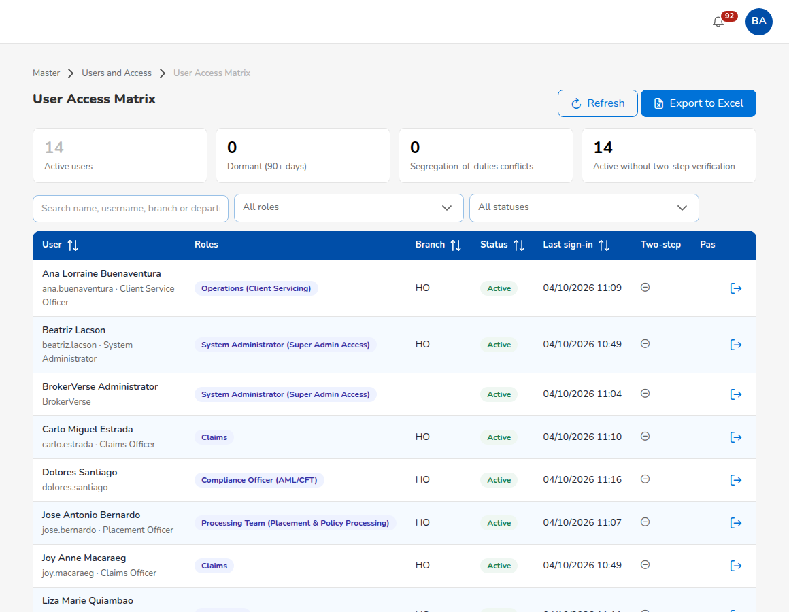
Authority Matrix
The Authority Matrix holds the largest amount (in PHP) or percent of premium each role may approve per transaction. It has four tabs:
- Limits: the transactions down (each with the approval step that checks it under the info icon) and the roles across, grouped by department (Sales, Operations, Cash Control, Finance and Accounting, IT, Management). By default it shows the TISPH roles that can approve the transactions an approval step checks; Include base platform roles, Include transactions not checked yet, the department filter and All roles show the others. A cell shows the limit (for example PHP 1,000,000.00 or 10%), No limit, Not set, or a dash when the role cannot reach that approval step, with a Pending or From date chip when a change waits for approval or is scheduled. The chip on the right says what Not set means today (by default the approval is not restricted); the count beside it shows only the approver cells still without a limit.
- Pending approval: the changes waiting for approval with their lines. Another administrator who may approve access changes, and who holds none of the roles changed, approves or rejects them (with the reason); only the proposer may withdraw them.
- Personal limits: limits of one person for a transaction. A personal limit replaces the limits of the person's roles. Add personal limit opens the same panel with the person and the transaction.
- History: every limit with its dates, authority reference, proposer and approver.
Select a cell to open the Approval limit panel: the limit in effect, then the new limit (percent from 0 to 100, a higher percent is refused with a message, or an amount in PHP) with No limit beside it, Effective from (today or later; the current limit stays in effect until the day before), the Authority reference and Reference date (for example the board resolution number and date) and optional remarks. Submit for approval sends the change to another administrator; Remove limit sends its removal. Nothing changes until it is approved.
Upload takes many limits at once: download the template (the matrix as it is, with drop-down lists and the rules on the Instructions sheet), change the Limit, No limit, Effective from, Authority reference and Reference date columns, choose the file (.xlsx or .csv) and select Check the file. The whole file is checked first; with any error nothing is saved and each error names the row, the transaction and role, and the column. Rows equal to the matrix are left unchanged, and a limit is not removed by emptying its row. Review the changes and select Submit for approval: they go to another administrator as one change. Download gives the matrix and its change history in Excel for audit.
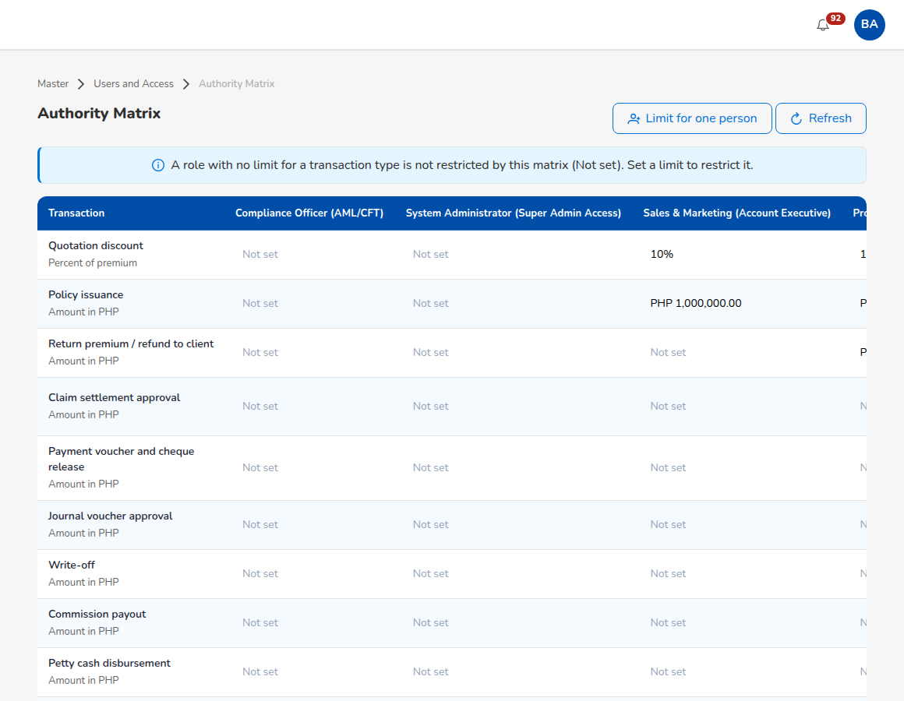
Delegations
A delegation lets another user approve with the limit of an approver who is away, for chosen transactions and dates. It applies once another administrator who may approve access changes approves it; neither the requester nor the person covering approves it.
- Choose Users and Access > Delegations and select New delegation.
- Choose the Approver away: only people who can approve a transaction checked by the Authority Matrix are offered, by department. The transactions he or she can approve are listed with the authority today; untick those not covered.
- Choose who it is Covered by. A person who cannot reach the approval step of a chosen transaction is shown but cannot be chosen, with the reason.
- Enter From (today or later) and To (at most 90 days, setting Longest delegation) and choose the Reason (Vacation or annual leave, Sick leave, Business travel, Training or seminar, Position vacant, or Other with a note). Effect shows what the person covering will be able to approve.
- Select Submit for approval.
The list shows Current and upcoming, Waiting for approval, Ended and All, with the status of each delegation (Waiting for approval, Scheduled, In effect, Ended, Ended early, Rejected, Withdrawn). Select a delegation to see it, its approval and the authority of the person covering on a date. End early stops a delegation at once, with a reason; both people are told. A delegation never lowers the authority of the person covering: while no limit is set for him or her and Not set allows the approval, a delegation changes nothing. Export to Excel downloads the list for audit.
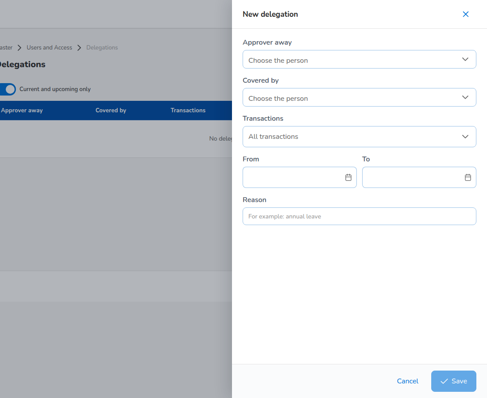
Segregation of Duties
A rule names either two roles that one person should not hold together (Roles held together) or two sets of access a role or a person should not combine (Access combined, for example issuing receipts and issuing policies), and what happens when roles are given (Block refuses the combination, Warn allows it and lists the person under Conflicts). The screen has three tabs:
- Conflicts: every active user who breaks a rule, with the roles held and the state (a user with a full-access role, such as the System Administrator, holds every access and so breaks every access rule): Open, Accepted until a date (an exception in force), Exception waiting for approval or Exception expired (open again after its date). Request exception accepts a conflict for one person until a date (at most 365 days, setting Longest exception) with a reason (Small team, Temporary cover, Role change in progress, Compensating review in place with who reviews, Test account, Other); another administrator who is not the person concerned approves it. Nobody requests an exception for himself or herself. End exception opens the conflict again at once. An exception does not lift a Block rule when roles are given.
- Rules: each rule with its two roles or sets of access, Block or Warn, the number of users breaking it and its status. New rule, Edit, Switch off and Switch on take a reason and wait for another administrator's approval; the rule code is given by the system. Rules between two base platform roles show with Include base platform roles. The delivered TISPH rule is Receipting and reversals (CCD-BP with CCD-Recon, Warn); the access rules Receipting and selling, Placing and paying insurers, Claims and payment and Administration and transactions all warn.
- Waiting for approval: rule changes and exceptions to approve or reject (with the reason); the requester may withdraw his or her own.
Export to Excel downloads the rules, the conflicts by user, the exceptions and the changes waiting for approval.
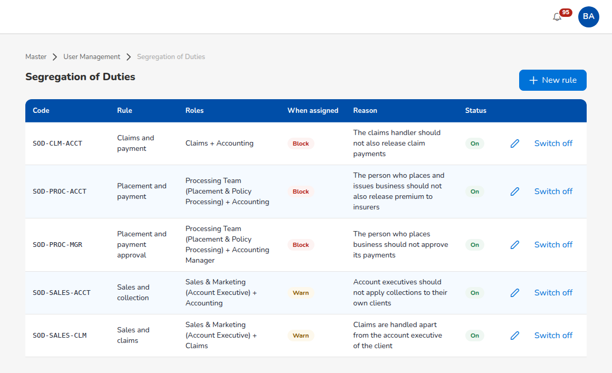
Access Reviews
Confirm at least every quarter that each active user still needs his or her access.
- Select Start a review: the name is proposed from the month, the Due date from the review period (14 days); choose the Scope: all active users, departments or roles. The panel says how many users will be reviewed.
- Open the review. The users are grouped by department with their roles at the start, last sign-in, conflicts and outcome. Select a user and choose Keep access, Remove roles (tick the roles to remove; removing every role deactivates the account) or Deactivate account. A removal needs a reason (Left the company, Moved to another job or department, Access no longer needed, More access than the job needs, Segregation of duties conflict, Account not used, Temporary assignment ended, Other); keeping a dormant user or one with an open conflict needs a note. Save and next moves to the next user to review. Tick several users and select Keep selected to keep them at once.
- Nobody decides his or her own line, and an administrator account is decided only by a System Administrator. The built-in administrator is never deactivated.
- When every user is decided, select Submit for sign-off. Another administrator who decided none of its users (Keep access included) signs it off: the removals then apply (the roles still held are removed, accounts are deactivated, their sessions end) and the review closes. Return sends it back with remarks for changes.
The list shows each review with its scope, due date (Overdue when it has passed), progress, removals and status. Export to Excel downloads the list, or one review with its summary and every decision. My Work lists the open reviews and the reviews waiting for sign-off.
Company, branches and the letterhead
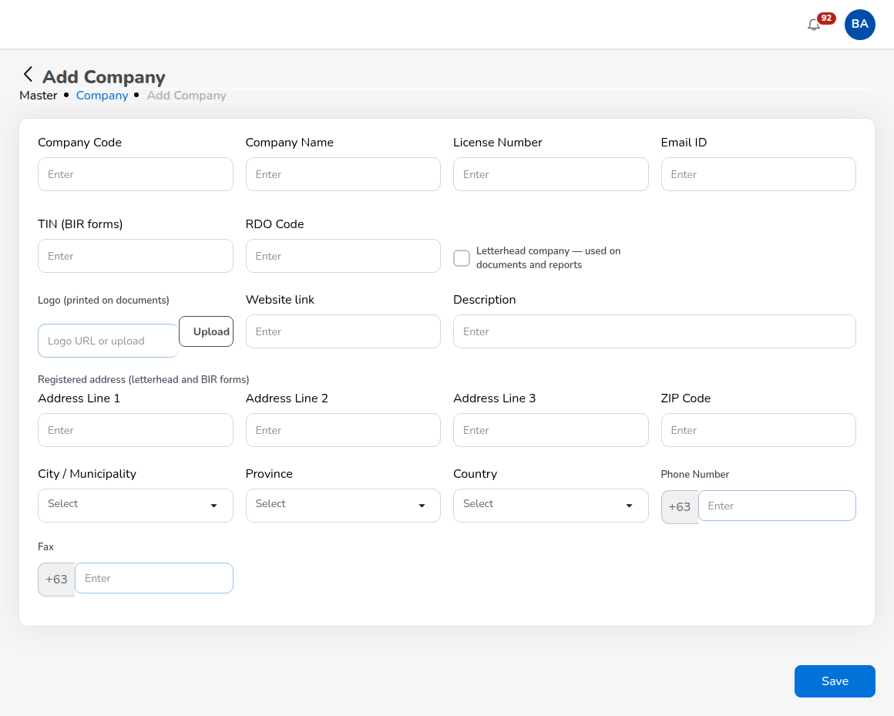
Every printed document and report PDF (quotation, request for quotation, placement slip, policy schedule, billing statement, official receipt, payment voucher, debit note, claim letters, BIR forms) carries the letterhead of the company marked as letterhead company.
- Choose Master > Organization > Company. Select Add, or the pencil on the delivered company to edit it into your own.
- Enter Company Code, Company Name, License Number (Insurance Commission licence), Email ID, TIN (BIR forms), RDO Code, Logo (printed on documents) (a link, or Upload), Website link, Description, the registered address (letterhead and BIR forms: Address Line 1 to 3, ZIP Code, City / Municipality, Province, Country), Phone Number and Fax (+63 numbers).
- Tick Letterhead company - used on documents and reports for the company whose letterhead the documents use. Only one company holds it.
- Select Save, then print any statement or report as PDF to check the letterhead.
The application name and logo of the sign-in page and the sidebar come from the brand pack of the environment, not from the Company master. Branches are kept on Master > Organization > Branch in the same way.
Insurers and the other masters
Insurance companies
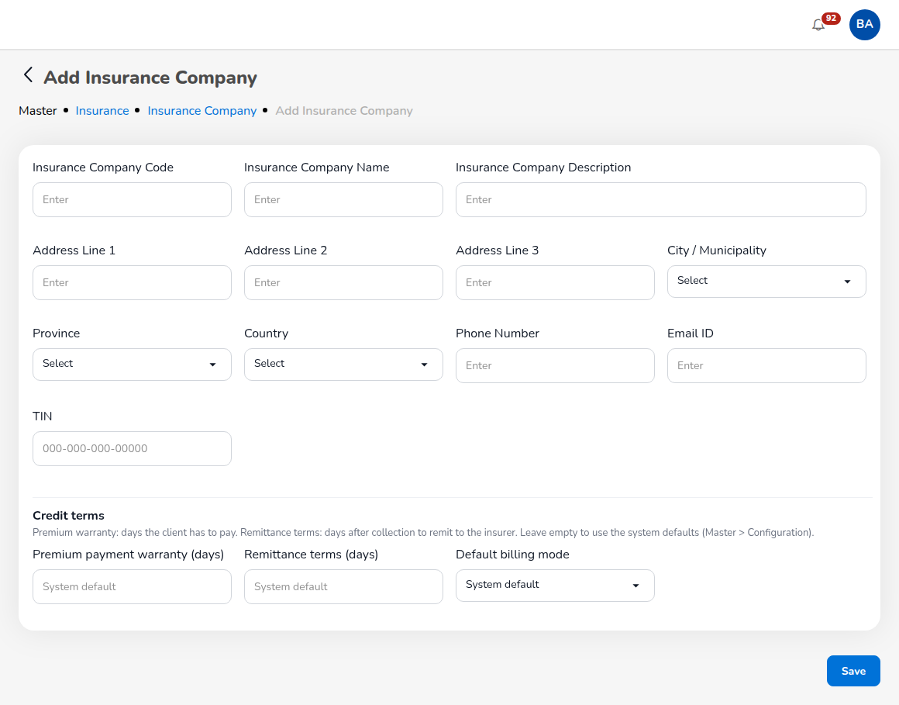
- Choose Master > Insurance > Insurance Company and select Add.
- Enter Insurance Company Code, Insurance Company Name, Insurance Company Description, the address (Address Line 1 to 3, City / Municipality, Province, Country), Phone Number, Email ID and TIN.
- Under Credit terms, enter Premium payment warranty (days) (days the client has to pay: the due date of the premium bill), Remittance terms (days) (days after collection within which the broker remits to the insurer) and Default billing mode (broker billed or direct bill). Leave them empty to use the system defaults (
collections.default_credit_days,remittance.default_due_days,direct_bill.default_billing_mode). - Select Save.
Requests for quotation, placement slips, Preliminary Loss Advices and remittance advices go to the insurer's e-mail. Keep it current.
Masters that work the same way
All masters work alike: a list with search, Add (the form opens on its own page or as a panel on the right), Upload where offered, the eye to view, the pencil to edit and a status switch to deactivate. Records are not deleted; a deactivated record no longer appears in the lists of the other screens.
| Master | Holds |
|---|---|
| Line of Business, Product, Cover | The lines, products and covers offered in the quotation and placement screens. |
| Signatories | Authorised signatories of quotations and documents. |
| Vehicle | Vehicle brands, models, variants and seating; Upload loads them from a template. |
| Country, Province, City / Municipality | The Philippine address lists of the PSGC: 18 regions (shown with their provinces), 82 provinces plus Metro Manila, 1,642 cities and municipalities with class and ZIP code; barangays are picked on the address forms. The City / Municipality list is filtered by province. |
| Hierarchy, Designation | The staff structure. A staff member's branch, designation and reporting line are kept on the user (Master > Users and Access > User). |
| Transaction Code, Currency, Exchange Rate | Accounting transaction codes, currencies and rates. |
| Bank | Banks and the broker's bank accounts, each linked to its GL cash account and statement format. |
| Account Category, Main Account, Sub Account | The chart of accounts. |
| Remittance Master | Automated remittance, statement templates, settlement parameters, bulk processing formats, exceptions, agency bill, adjustment and notification templates. |
Operational masters
| Master | Menu | Maintained by |
|---|---|---|
| Short-Period Rates | Master > Insurance | System Administrator |
| Cancellation Reasons | Master > Insurance | System Administrator |
| Claim Document Checklist | Master > Insurance | Claims, System Administrator |
| Repair Shops | Master > Insurance | Claims, System Administrator |
| Lead Sources | Master > Insurance | System Administrator, TIS IT AppSupport |
| Reason Codes | Master > Insurance | System Administrator, TIS IT AppSupport |
| Asset Classes | Master > Finance | Accounting, System Administrator |
| Cost Centres | Master > Finance | Accounting, System Administrator |
| Suppliers | Accounts > Payables > Suppliers | Accounting, System Administrator |
Each screen lists the records with a search box, Add, the edit icon and activate / deactivate; the info icon next to the title says in one sentence what the master is for. A field taken from another master is a list: on Cost Centres the company, the department (Master > Organization > Department) and the responsible person (the active users). The nine masters are also in the go-live configuration workbook and have upload templates. Sales Activity Types and Sales Activity Outcomes (Master > Organization) work the same way and are described under Sales activities in the Sales & Marketing chapter; Distribution Channels (Master > Insurance) in the chapter Distribution, programmes and products.
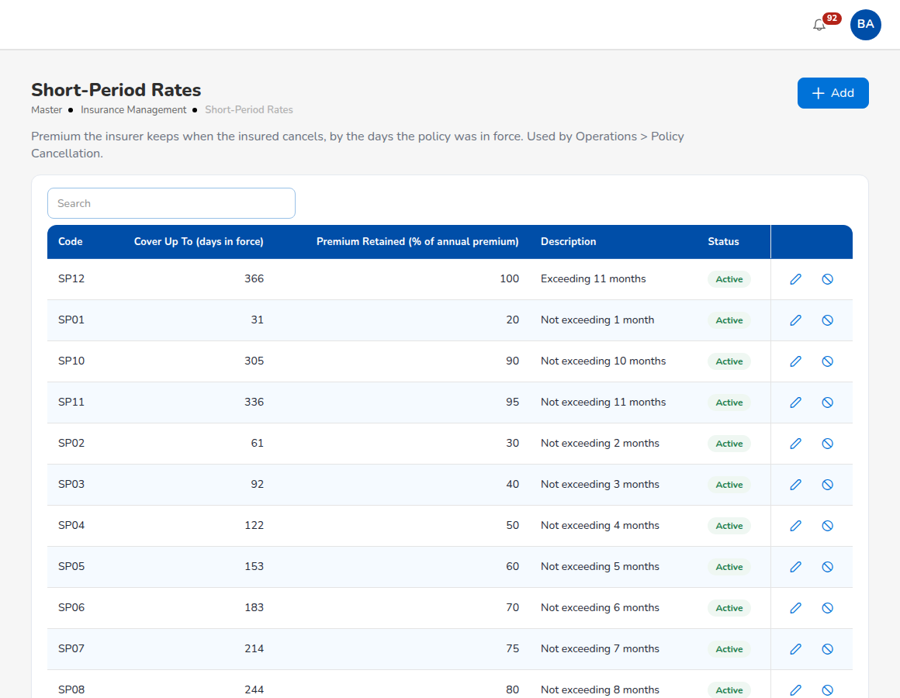
Lead sources and reason codes
Lead Sources lists where prospects come from (for TISPH: Call, Walk-In, Referral, Corporate, Used-Cars SCR and UCFP, Company Car, Redemption, Renewal, Promo, Agent, Credit Life, Social Media / Website, Bundling) with a channel type and the linked office. The Source list of the prospect form offers the active lead sources; the lead upload accepts a lead source by its code or its name and stores its name. A source the list does not know is kept as typed, unless leads.source_list_only is on, in which case the prospect is refused with a message on the Source. An upload row without a source is stored as bulk-upload.
Reason Codes holds the coded reasons of decisions that have no master of their own. Used For says where a code is offered: decline (a quotation rejected or dropped), repudiation (a claim rejected), lapse (a renewal lapsed), refund, adjustment and non-materialise. Requires Note makes the user write the detail as well. Cancellation reasons and write-off reasons keep their own masters.
- Claims: Reject Claim offers the repudiation codes and a note. The claim keeps the code and shows the reason with the note.
- Renewals > Lapse Management: Lapse offers the lapse codes and the detail. The Lapse Reason filter of the list works on the code.
- A quotation set to Rejected or Dropped through the API may carry a decline or non-materialise code, which is kept in the audit trail.
A reason typed without a code is still accepted everywhere.
Uploads
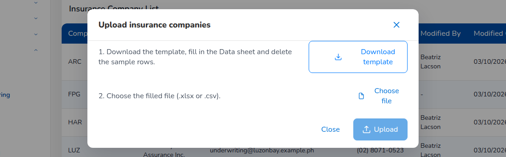
- Select Upload. Where a screen holds more than one record type, choose it in the dialog.
- Select Download template. The workbook has a Data sheet with the header row and sample rows, a Columns sheet with the rules of each column, and an Instructions sheet.
- Delete the sample rows, enter your data, save the file.
- Choose the file and upload it. The result shows how many rows were created or updated and lists each failed row with its problem. Correct those rows and upload them again; an existing code updates the record.
Document Numbering
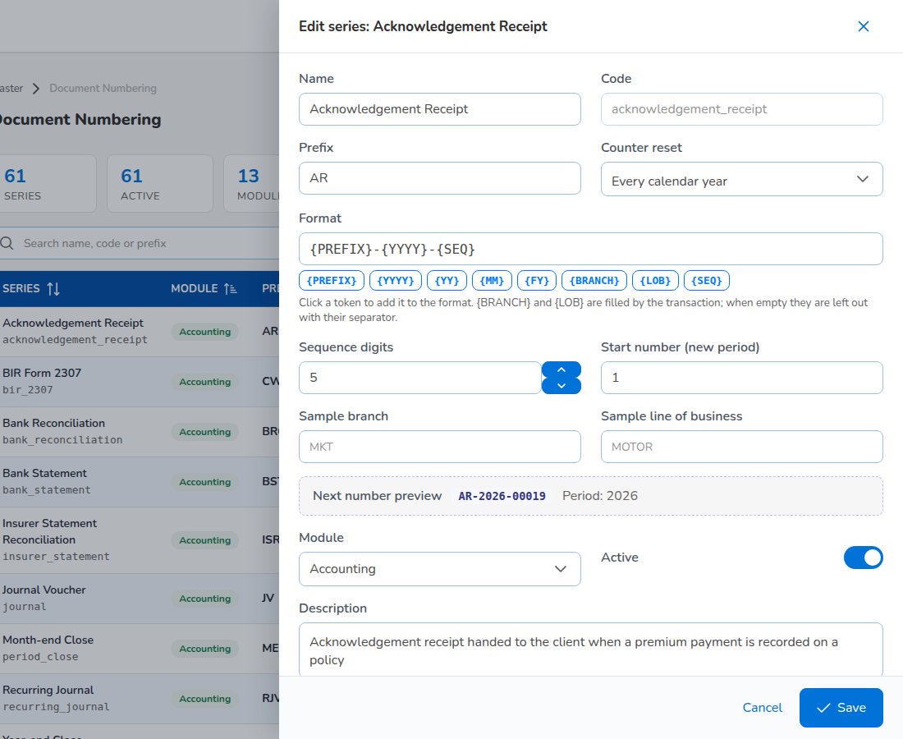
Every number the system issues comes from a series on Master > Document Numbering: prospect, request for quotation, quotation, placement slip, policy, client, bill, official receipt, payment voucher, journal voucher, claim, endorsement, debit note, close run, reconciliation, BIR Form 2307 and the others. The list shows each series with module, prefix, format, counter reset, last number and next number.
- Select Edit on the series.
- Change Name, Prefix or Format. Click a token to add it: {PREFIX}, {YYYY}, {YY}, {MM}, {FY}, {BRANCH}, {LOB}, {SEQ}. {BRANCH} and {LOB} are filled by the transaction; when empty they are left out with their separator.
- Set Sequence digits (5 gives 00001), Counter reset (for example Every calendar year) and Start number (new period).
- Check Next number preview and select Save.
Set next number continues the numbering of the old system; the counter only moves forward. The official receipt series must match the BIR Authority to Print. A prefix used by another active series is refused. Every change is in the audit trail.
Configuration
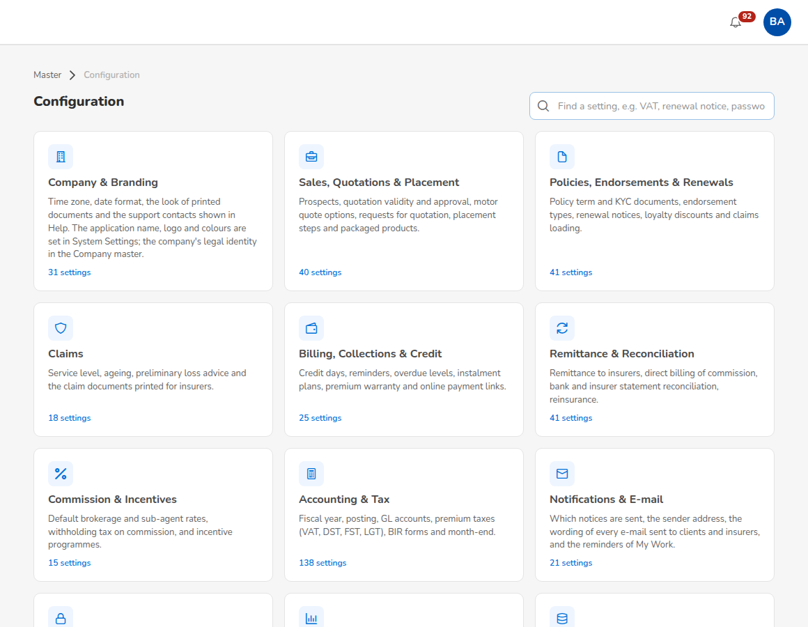
Master > Configuration holds every business parameter, grouped in areas: Company & Branding; Sales, Quotations & Placement; Policies, Endorsements & Renewals; Claims; Billing, Collections & Credit; Remittance & Reconciliation; Commission & Incentives; Accounting & Tax; Notifications & E-mail; Security & Access; Reports & Dashboards; Data Retention, Privacy & Uploads; and Other settings for settings not yet placed in an area. The search box finds a setting by its words, for example VAT or renewal notice.
- Select the area. The list on the left switches between areas; Related screens link to the screens the settings affect.
- Change the value. Numbers and text are typed, switches switched, lists edited as values or small tables, e-mail templates in a text box where you keep the {{placeholders}}. Show advanced settings shows the rarely changed ones.
- Save. The change applies at once and is recorded in the audit trail with the old and new value.
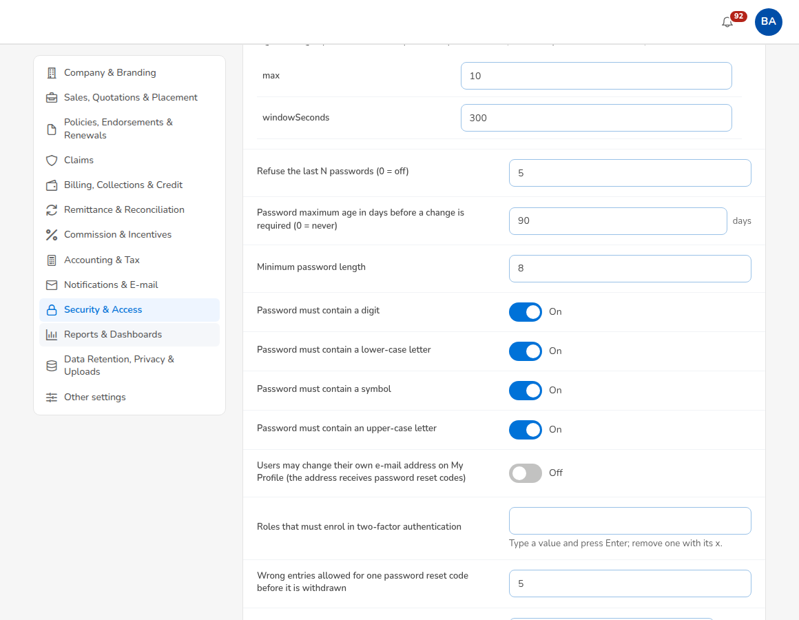
The group Go-live (area Company & Branding) holds the cutover date golive.cutover_date, the first day of live transactions, and the go-live lock golive.locked. Set them as described in the chapter Go-Live Data Load; switch the lock on only when the migration is loaded and reconciled.
The localisation is in the area Company & Branding: Display currency (currency.default: amounts are labelled in it; the accounts stay in the base currency of the Currency master, and only an active currency of that master is accepted) and Default language (general.default_language). Saving applies them to every user. The application name, the logo, the favicon and the colours of the screens and the sign-in page come from the brand pack of the environment (the Toyota Insurance Services pack in the TISPH environments), set when the environment is deployed and applied again whenever the system starts and finds them changed; they are not changed on a screen. Printed documents use the logo of the letterhead company in Master > Organization > Company.
E-mail Layout
Master > System > E-mail Layout sets the layout every e-mail of the system is sent in (quotation links, notices, receipts, reminders, debit notes). The three screens below need the settings permission (System Administrator, TIS IT AppSupport / Admin).
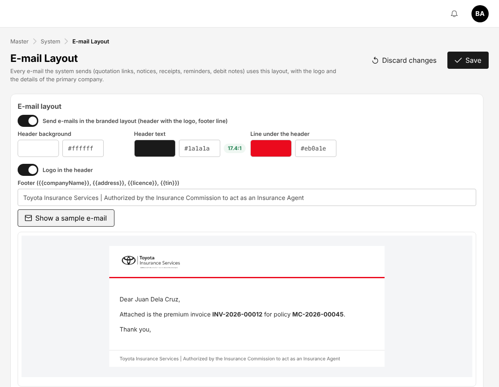
- Switch Send e-mails in the branded layout (header with the logo, footer line) on or off.
- Set the Header background, the Header text and the Line under the header with the colour picker or by typing the hex value (#rrggbb). The badge next to the header text shows its contrast against the background: green from 4.5:1, red below.
- Choose whether the Logo in the header is shown and write the Footer with the placeholders {{companyName}}, {{address}}, {{licence}} and {{tin}}.
- Show a sample e-mail renders a sample message in the layout being edited, saved or not.
- Select Save. Every e-mail sent from then on uses the layout, queued ones included. Discard changes returns to the saved layout.
Documents and Reports Layout
Master > System > Documents and Reports Layout sets how every printed document (quotation, policy schedule, slips, endorsement, receipts, billing statements, vouchers, debit notes, claim letters) and every report PDF or Excel file is printed, together with the logo, legal name, TIN, licence and address of the primary company (Master > Organization > Company).
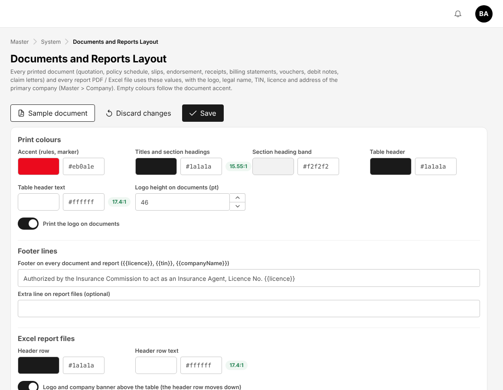
- Under Print colours, set the Accent (rules, marker), the Titles and section headings, the Section heading band, the Table header and the Table header text (an empty colour follows the accent), the Logo height on documents (pt) (24 to 80) and whether to Print the logo on documents.
- Under Footer lines, write the Footer on every document and report, with the placeholders {{licence}}, {{tin}} and {{companyName}} (delivered: Authorized by the Insurance Commission to act as an Insurance Broker, Licence No. {{licence}}), and an optional Extra line on report files.
- Under Excel report files, set the colour and text of the Header row and whether the Logo and company banner above the table are printed (the header row then moves down).
- Select Sample document to check the result as a PDF, then Save.
The server checks the colours with the rules it applies on Save: text in the document table headers must reach WCAG AA, 4.5:1. Below that Save is disabled and the red message Cannot save names the check; the section heading colours below 4.5:1 only warn after Save. Every save is in the audit trail.
Document Signatures
Signatures are captured in Master > Insurance > Signatories (the company's signatories: the E-signature icon on the row opens the capture: Draw the signature or Upload image, PNG with a transparent background or JPEG up to 512 KB, set Effective from, tick the consent statement and select Save signature; every version is kept under Versions and Revoke ends one with a reason) and on My Profile (My e-signature: a user's own signature, printed where a document is signed by the user who issued or approved it).
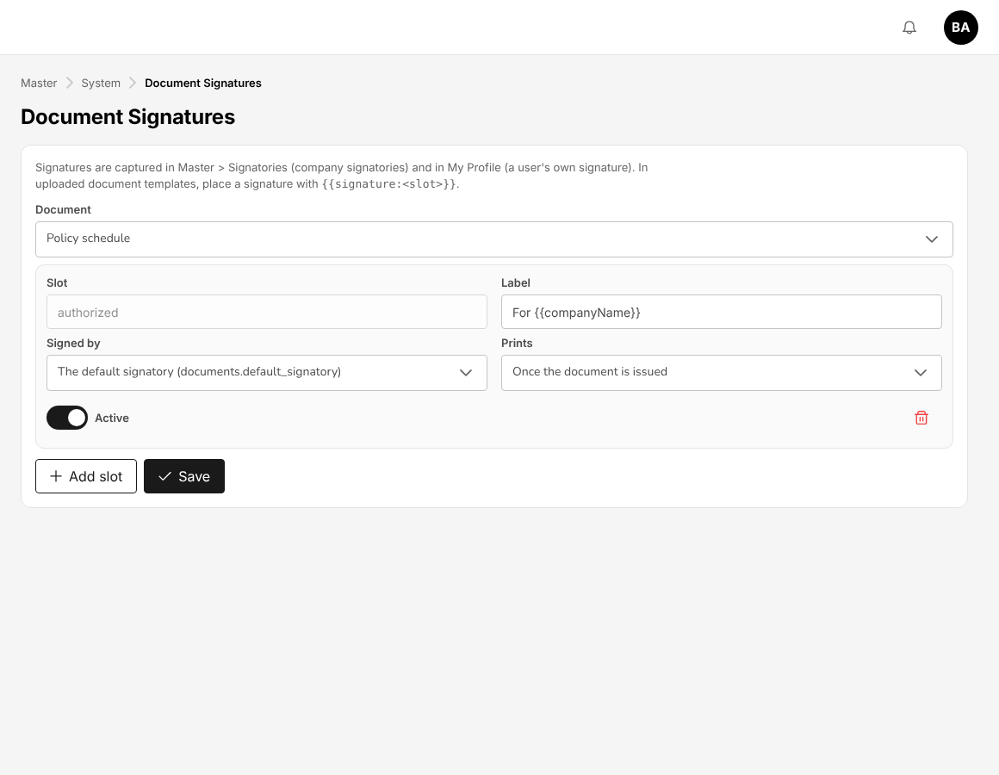
Master > System > Document Signatures says which signature prints on which document:
- Choose the Document: Quotation slip, Policy schedule, Endorsement, Official receipt, Acknowledgement receipt, Payment voucher, Commission debit note, Billing statement / invoice, Statement of account, Journal voucher or Claim settlement letter.
- For each slot set the Slot code (lower-case letters, digits and hyphens; fixed once saved), the Label printed under the signature (for example Prepared by, Approved by), Signed by (Signatory chosen on the document (else the default signatory); A named signatory, with the signatory chosen next to it; The default signatory (documents.default_signatory); The user who approved the document; The user who issued / prepared the document) and Prints (Once the document is issued; Once the document is approved; Always (also on drafts)). Active switches a slot off without deleting it; the bin removes it.
- Add slot adds one more; Save stores the mapping of the document chosen.
A draft prints its slots unsigned with an UNSIGNED DRAFT watermark; a cancelled document prints a CANCELLED watermark and no signature. In an uploaded document template (Product Configurator > Document Manager) a signature is placed with {{signature:slot}}, slot being the slot code.
Schedules
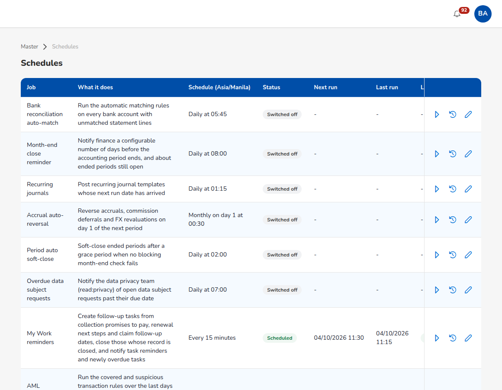
Master > Schedules lists the jobs the system runs by itself, with Job, What it does, Schedule (Asia/Manila), Status (Scheduled or Switched off), Next run, Last run and Last status. Each row has three actions:
- Run now runs the job at once and shows the result.
- Run history lists the last runs with Started, Finished, Status, Triggered by and Result.
- Edit schedule changes the timetable (cron format, for example 0 6 * * * for 06:00 daily) and switches the job on or off. Check that Next run shows a date after every edit.
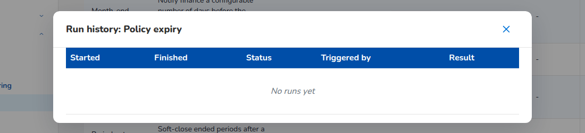
The jobs, their times and what they do are listed in the BrokerVerse Schedules and Batch Jobs document.
E-mail Outbox
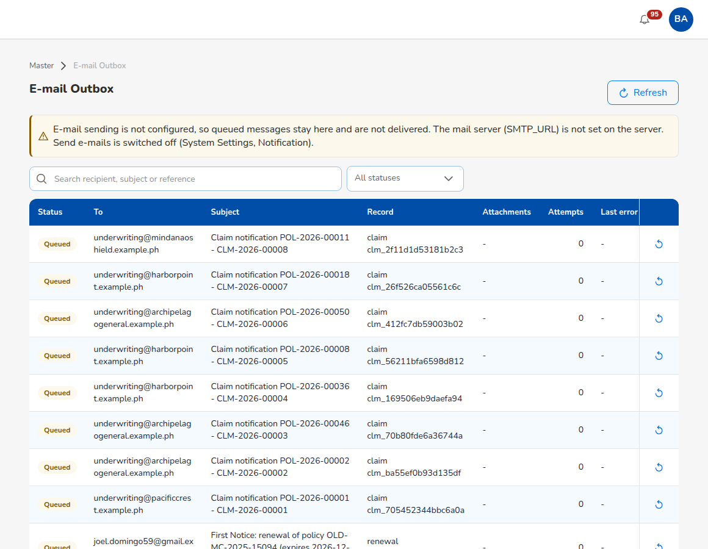
Every e-mail the system queues (quotation approval links, requests for quotation, placement slips, loss advices, renewal notices, reminders, official receipts, premium invoices, debit notes) is listed with Status, To, Subject, Record, Attachments, Attempts, Last error, Created and Sent. Attachments names the PDF files sent with the message (official receipt, premium invoice, policy schedule, commission debit note); the PDF is produced when the message is sent. A message whose attachments exceed email.max_attachment_mb (10 MB) fails with the reason in Last error. The E-mail outbox job sends queued messages every 5 minutes; Retry sends a failed message again. Nothing leaves the system until Send e-mails (notification.email_enabled) is on and the mail server is set on the server; until then the screen says so and messages stay queued. Review the outbox before switching sending on.
Integrations
Master > System > Integrations is where every connection to a third party is set up and watched: the SMS gateways and the optional Viber business messages, the CTPL authentication provider accredited by the Insurance Commission and the LTO feed, the insurers' systems and the bank payment files. The screen needs read:integrations (changes: write:integrations); both are held by the System Administrator only.
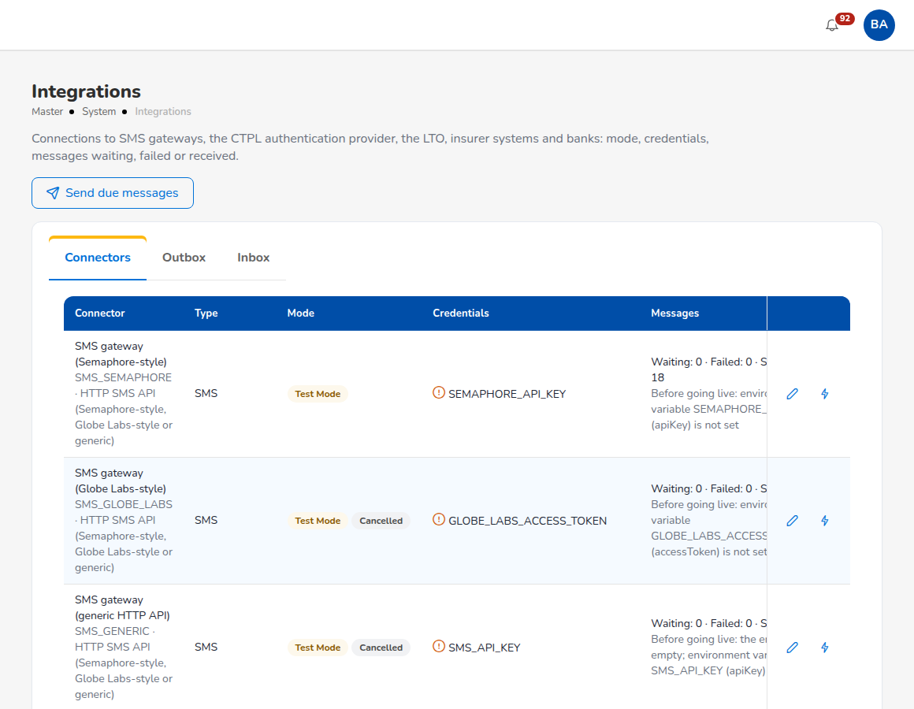
Connectors
The Connectors tab lists each connector with its Type, Mode (Test mode or Live, and Cancelled when it is switched off), the Credentials it needs (a green tick when the environment variable is set on the server), the messages Waiting, Failed and Sent today, what is missing Before going live, and the last success and failure.
The system is delivered with these connectors, all in test mode except the bank files:
| Connector | Used for | Delivered |
|---|---|---|
| SMS_SEMAPHORE | SMS (Semaphore-style API: form post with an API key) | Enabled, test mode; the default SMS connector (messaging.sms_connector) |
| SMS_GLOBE_LABS | SMS (Globe Labs-style API: access token and short code) | Switched off |
| SMS_GENERIC | SMS through any HTTP API (path, body, headers and the answer's message id are options) | Switched off |
| VIBER_BUSINESS | Viber business messages through an aggregator (optional) | Switched off |
| CTPL_AUTH | Authentication of CTPL certificates of cover | Enabled, test mode |
| LTO_FEED | Authenticated COCs sent to the LTO, when the provider does not do it | Switched off |
| INSURER_API | Insurer systems (one mapping per insurer on Insurer Integration) | Enabled, test mode |
| BANK_FILES | Bank payment files (download and upload on the bank portal) | Enabled |
In test mode a connector answers from a built-in test provider: SMS are recorded as sent, a COC gets a test authentication code, an insurer returns a test policy number. Nothing leaves the system, so the whole process can be tried before the contract with the provider is signed.
To change a connector, select the pencil (Edit):
- Endpoint: the address of the provider's service, from the provider.
- Credentials: one line per credential with the NAME of the environment variable that holds it, for example
SEMAPHORE_API_KEY. The value itself is never entered on the screen or stored in the database: the server administrator sets it in the secret store of the environment. The tag shows whether the variable is set. - Adapter options: the provider's details in JSON (sender name, short code, number format, paths, field names). The defaults match the provider style named in the connector.
- Attempts, First retry after and Longest wait: a message that fails is tried again after the first wait, then twice as long each time, up to the longest wait, until the number of attempts is reached. A request the provider refuses (for example an invalid number) is not retried.
- Mode Live and Enabled. Live is refused while the endpoint or a credential variable is missing; the message says what is missing.
Test connection checks the connector without sending a business message: in test mode it confirms the test provider, in live mode it calls the provider's health-check path when one is set in the options. Every change and test is in the audit trail.
Outbox and inbox
The Outbox tab lists every message sent or waiting: SMS and Viber messages, CTPL authentication requests, LTO feeds, insurer requests and bank files, with Status (Queued, Retry scheduled, Sending, Sent, Failed, Cancelled, Not sent), Attempts, Last error and Next attempt. Filter by status or connector, or search a mobile number, COC, policy or error text.
- The eye (View) shows what was sent, the provider's answer and every attempt with its duration and error.
- Resend queues a failed, cancelled or not sent message again with a fresh attempt count and sends it at once; a message waiting for its next attempt is sent now.
- Cancel message stops a message that has not been sent.
- Send due messages (top right) sends what is due now. The job
integration-outbox(Master > Schedules) does the same every 2 minutes.
A message Not sent was deliberately not sent: the client has no valid mobile number, or the consent check refused it (see SMS and message templates). A switched-off connector keeps its messages queued until it is enabled again.
The Inbox tab lists what third parties sent to the system: claim statuses pushed by an insurer, CTPL authentication results pushed by the provider, and the files imported by users (bank status files, claim status files). A message pushed by a third party must be signed with the connector's webhook secret; an unsigned or wrongly signed message is kept as Ignored and never applied. Process again retries a failed message once its cause is fixed.
Go live with a provider
- Sign the contract with the provider and obtain the endpoint, the credentials and the sender name or short code.
- Ask the server administrator to set the credentials as environment variables (secret store) and restart the service.
- On the connector, enter the endpoint and the variable names; Test connection in live mode.
- Switch the mode to Live. Send a test SMS from Message Templates, or authenticate one COC, and check the outbox.
What is certified with each partner (the provider's acceptance of the requests, the LTO interface, an insurer's API and each bank's file) is done during onboarding with the partner; the system cannot certify it alone.
SMS and message templates
Master > System > Message Templates holds the texts sent to clients by SMS (or Viber).
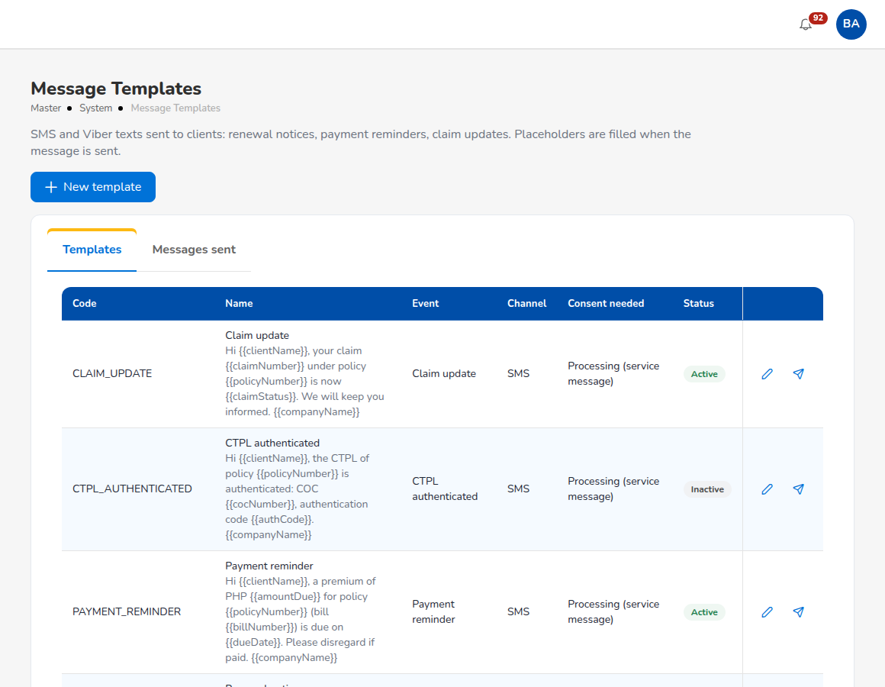
| Template | Event | Sent |
|---|---|---|
| RENEWAL_NOTICE | Renewal notice | By the job sms-renewal-notices on the days messaging.renewal_notice_days (30 and 7) before expiry |
| PAYMENT_REMINDER | Payment reminder | By the job sms-payment-reminders on the days messaging.payment_reminder_days (3 and 0) before an open bill is due |
| CLAIM_UPDATE | Claim update | When a claim moves to a status of messaging.claim_update_statuses (in review, approved, settled, rejected, closed) |
| CTPL_AUTHENTICATED | CTPL authenticated | When the authentication code of a COC is received (delivered inactive) |
| RENEWAL_NOTICE_VIBER | Renewal notice by Viber | Delivered inactive; activate it and deactivate the SMS one to send renewal notices by Viber |
To change a template, select the pencil:
- Change the Text. The placeholders in double braces are filled when the message is sent, for example
{{clientName}},{{policyNumber}},{{expiryDate}},{{amountDue}},{{dueDate}},{{claimNumber}},{{claimStatus}},{{cocNumber}},{{authCode}}and{{companyName}}. The Preview shows the text with example values, its length and the number of SMS parts (160 characters each). - Choose the Consent needed: Processing (service message) for renewal notices, reminders and claim updates; Marketing for promotions; None only for messages that need no consent.
- Leave Connector empty to use the default connector of the channel, or choose another one.
- Save. Send a test sends the template with example values to a mobile number you enter.
Consent check. Before a message is queued the system reads the client's consents in the consent register (the refusals recorded by a campaign opt-out among them). A marketing message needs a granted marketing consent. A service message is sent unless the client refused or withdrew consent for processing; with messaging.service_consent set to opt-in it needs a granted consent. A message that fails the check, or a client without a valid mobile number, is recorded in the outbox as Not sent with the reason.
The jobs sms-renewal-notices and sms-payment-reminders are delivered switched off: switch them on in Master > Schedules when the SMS connector is live. Each notice is sent once per policy and day; running a job again sends nothing twice. The Messages sent tab lists every SMS and Viber message.
Insurer integration
Master > System > Insurer Integration connects BrokerVerse to the insurers' systems.
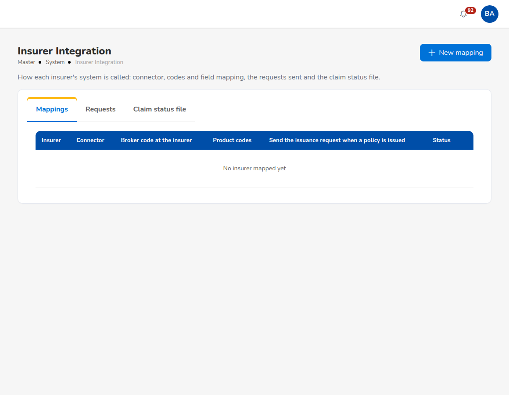
Mappings. Select New mapping (or the pencil of an insurer):
- Choose the Insurer and the Connector (INSURER_API, or a copy of it for an insurer or aggregator with its own endpoint and keys).
- Enter the Broker code at the insurer and the Product codes (for example
{"MOTOR": "PC", "FIRE": "FI"}). - Issuance request map: the fields the insurer expects and where each comes from in the policy (for example
"insuredName": "insuredName","plate": "vehicle.plateNumber","agent": "{{brokerCode}}"). Empty: the default map shown under the fields. - Answer map: where the insurer's answer holds the policy number, status and premium (for example
"policyNumber": "data.policyNo"). - Claim statuses: how the insurer's statuses read in BrokerVerse (for example
"UNDER EVALUATION": "In review"). - Send the issuance request when a policy is issued sends the request automatically at issue.
- Enter a policy number and select Preview to see the request exactly as the insurer will receive it. Save.
Requests. New request sends a Policy issuance (the insurer's policy number is stored on the policy and printed on the schedule), Policy and premium data (the insurer's premium and status are stored on the policy; a difference above insurer_integration.premium_tolerance is flagged) or a Claim status (stored on the claim with a line in its history). The list shows each request with the insurer's answer.
Claim status file. When an insurer has no API, import its claim status list as CSV with the columns Claim Number, Status, Remarks and Status Date: each row updates the claim through the inbox, and the result per row is shown. Premium and policy data by file go through the insurer statement import (Accounts > Insurer Reconciliation).
Audit Trail
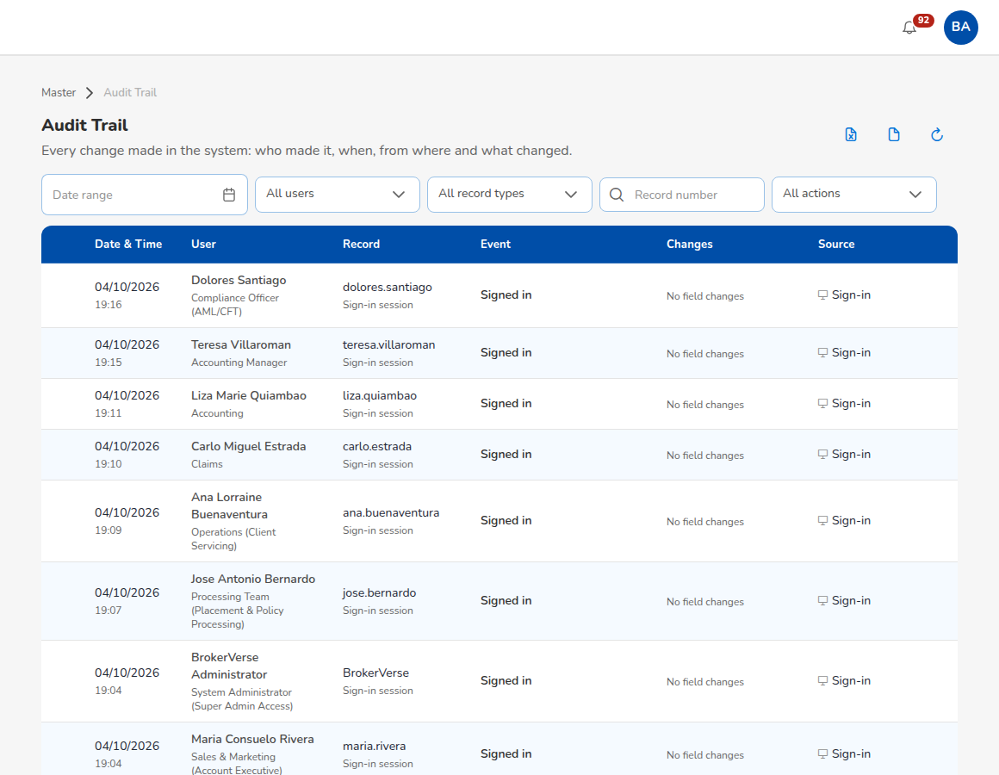
- Choose Master > System Configuration > Audit Trail. Filter by Date range, User, Record type (for example session for sign-ins, policy, receipt, placement), Record number and Action; the list refreshes as you filter (Clear filters resets them).
- Each row shows the date and time, the user and role, the record, the event, the fields changed and the source. Expand a row to see each field changed with its old and new value.
- Export downloads every event matching the filters to Excel or CSV, one row per changed field.
The history of a single record (claim history, policy and client History tab, quotation Audit Trail tab, master records) uses the same layout as a timeline grouped by day, newest first, with a search box, a user filter, a filter by kind of event (created, status changes and approvals, other changes, cancelled or removed) and Export.
Use it for investigations, access reviews and to show that maker and checker were different people.
Personal identifiers
Masking of personal identifiers. A user whose role does not hold View full personal identifiers (view:pii) sees TIN, government ID numbers, mobile numbers, e-mail addresses, bank account numbers and birth dates partially masked on every list and view, for example --9-000, j*@example.ph or 1984--, and in every Excel, CSV and PDF listing. Delivered to the System Administrator, Sales, Operations, Accounting and the Accounting Manager; Processing and Claims see masked values unless the role is given the permission (Master > Users and Access > Roles). A form opened with masked values keeps the stored values when it is saved. Which fields are personal comes from the personal data catalogue of the masking tool. Settings: privacy.masking_enabled, privacy.masking_exempt_paths and privacy.pii_reveal_mode. With on-request, holders of the permission also see masked values until they choose Show full identifiers in the user menu (top right; Hide full identifiers turns it off); each screen opened with full identifiers is recorded in the audit trail (record type personal_data, action unmask).
Encryption at rest. TIN, government ID numbers and bank account numbers of clients, prospects and referrers, the ID numbers captured when a policy is issued and the payee TIN of BIR Form 2307 are stored encrypted with the key of the environment (PII_ENCRYPTION_KEY). Search by an exact TIN still works (global search and the client list, in any format, with or without dashes). The key rotation is described in deploy/REFERENCE.md.
Finance set-up shared with the Accounting Manager
The System Administrator can open every Master > Finance screen. The Accounting chapters describe them: Commission Rate Matrix, Posting Rules, Account Determination, Configuration Approvals and Accounting Flow (Accounting Manager chapter), Taxation, Close Checklist, Bank Statement Formats, Bank Transaction Types and Insurer Statement Formats (Accounting chapter), and Package Bundles, Insurer Rate Tables, Premium Taxes & LGU Rates and Payment Gateways (Module reference). Changes to posting rules and account determination wait for a second user on Configuration Approvals.
Incentive programmes
- Master > Finance > Incentive Programs: Add Program with the code, name, type (Target Based, Commission Based, Hybrid, Contest), target metric, base target, frequency and dates. Accounting calculates and pays the programmes but cannot change them.
- Incentive structure (in the same pop-up): one row per tier with its name, the achievement band (from and to, as a % of the target, or a number of policies for the Policy Count metric; leave To empty on the top tier for "and above"), the payout type (fixed amount, % of achieved premium, or amount per policy) with its rate or amount, and an optional maximum payout. The bands must follow each other without gaps or overlaps, and an Active programme needs at least one tier. Enter a sample achievement to see the tier it reaches and the payout.
Approvals
The System Administrator approves posting rule and account determination changes of another user (Configuration Approvals), Authority Matrix changes of another administrator. Business approvals belong to the business roles.
Go-Live Data Load
This chapter is for the System Administrator and the migration lead. The broker's go-live data is loaded with two Excel workbooks instead of one upload per master. The implementation team loads them through the go-live data load API and its scripts (there is no screen for it): each workbook is validated as a trial run, the rows in error come back in an errors workbook with the sheet, row, column and message, the corrected workbook is loaded again without creating duplicates, and every load is in the audit trail. Only the System Administrator holds the permissions (read:data-load, write:data-load).
The two workbooks
| Workbook | What it holds |
|---|---|
| Configuration | Everything needed to run new business: company, settings, countries, states, cities, branches, departments, hierarchy, designations, users, currencies, exchange rates, chart of accounts, banks, bank accounts, signatories, transaction codes, write-off reasons, insurers, lines of business, products, policy types, covers, vehicle brands, models, variants and vehicles, commission rates, premium taxes, LGU rates, authority limits and document numbering. |
| Migration | The open business of the old system at cutover: clients, in-force policies (with their old numbers), open premium receivables, open claims and the GL opening balances. |
The blank workbooks are delivered with the upload templates as GoLive_Configuration_Workbook.xlsx and GoLive_Migration_Workbook.xlsx; the workbook with the current data of an environment is how configuration moves from one environment to the next (test, UAT, production).
Each workbook has an Instructions sheet (load order, rules, every column), a Lists sheet with the allowed values, and one sheet per object in load order. Row 1 holds the headers; a required column ends with *. Row 2 is a sample row: a row whose first cell starts with SAMPLE is never loaded. Enter data from row 3. Dates are written YYYY-MM-DD.
Some set-up is not in the workbooks and is entered on its own screen: roles and permissions, segregation of duties, delegations, access reviews, the approval of authority limits, tax codes, account determination and posting rules, statement formats, the close checklist, product templates and the motor tariff, package bundles, payment gateways, schedules, fiscal years and periods, remittance masters, incentive programmes, referrer accounts and petty cash funds. The Instructions sheet lists them.
Migration rules and reconciliation
The migration workbook is refused until the cutover date is set, with the message Set the cutover date (golive.cutover_date) first. The cutover date is the first day of live transactions and is set on Master > Configuration, area Company & Branding, group Go-live, or on the Settings sheet of the configuration workbook.
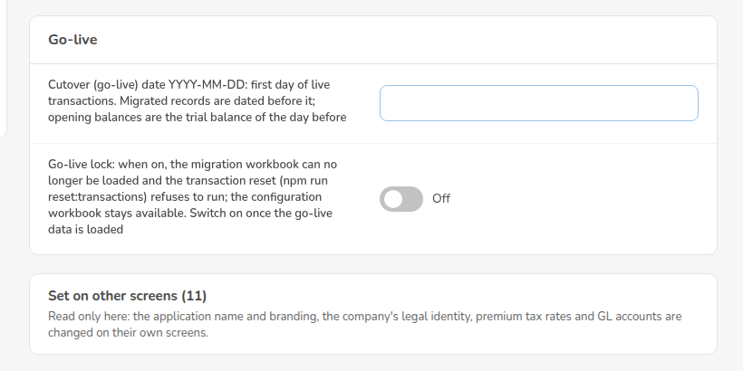
- A line of business on the Commission Rates sheet of the configuration workbook, or on the Commission Rate Matrix screen, must be a code of the Line of Business master; a rate on an unknown line is refused.
- Rows dated on or after the cutover date are refused: policy issue date, claim loss and reported dates, client birth date. Policies must still be in force at cutover. Open claims are registered or in review.
- Opening balances are the trial balance of the old system at the close of the day before the cutover date. Debits must equal credits, and the fiscal year of the cutover date must have no journal posted before it. A row with no debit and no credit (an account whose movements net to zero) is accepted and ignored, with a note above the counts. The sheet loads all or nothing: when it fails, the rows in error show their own error, the other rows are counted as Held, and one message with the row Sheet says why nothing was loaded.
- Migrated records keep the numbers of the old system. New business takes the next number of its Document Numbering series, set on the Numbering sheet. Both workbooks refuse a number that the other side would also issue: raise the next number of the series above the old range first. A reset of test transactions restarts each series at the next number the Numbering sheet set, so the sheet need not be loaded again after a reset.
- An open item keeps the bill number of the old system as its bill number. Only when another bill already has that number (one debit note over several policies) does it get the next BrokerVerse invoice number; the old number is then shown with it, for example INV-2026-00011 (old system DN-OLD-77), on Add Receipt and the billing statements, and the open receivables can be searched by it.
- A migrated policy is renewed like any other policy; its renewal is new business in BrokerVerse.
- Migrated records post nothing: no bill, booking journal or commission accrual for a policy, no booking journal for an open item (the GL carries it in the opening balance), no e-mail, notification or journal for an open claim. Migrated policies count as policies in force but not as premium written or new business on the Executive Dashboard.
Every validation and load of the migration workbook shows a Reconciliation: per sheet the Workbook rows and Workbook totals (premium, sum insured, open balance, claim estimate, debits and credits) against the records and totals In BrokerVerse, and the checks that the trial balance balances and that the premiums receivable control account equals the open items of the cutover date, each with Agrees or Difference. Compare these totals with the old system before go-live; the implementation team hands them over as a workbook.
Go-live lock
When the data is loaded and reconciled, switch on the go-live lock on Master > Configuration, group Go-live (golive.locked). From then on the migration workbook can no longer be validated or loaded, and the reset of test transactions refuses to run. The configuration workbook stays available for new masters. Agree the moment with the project lead: the lock is the formal end of the migration.
Sales & Marketing (Account Executive)
Role summary
The account executive (role Sales & Marketing (Account Executive)) finds and records prospects, quotes package products on the spot, asks the Processing Team to market non-package risks, sends quotations to clients and records their answers, records the client's payment for Accounting to verify, follows renewals and watches his or her own production and commission. Commission and incentives are earned on the policies the account executive produces (commission.eligible_roles, incentive.eligible_roles).
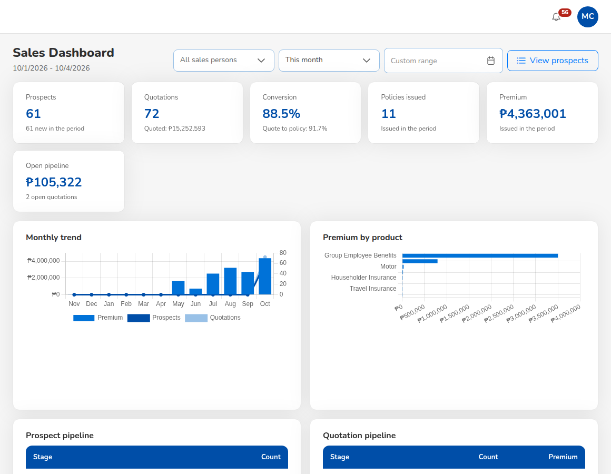
Menus available
| Menu | Items |
|---|---|
| Dashboard | Executive Dashboard, Sales Dashboard |
| Operations | Home; Sales & Marketing (Prospects, Quick Quote, Request for Quotation (Broker Slip), Quotations, Placement Slips, Lead Assignment, Dealer Programmes, Comparison Reports, Campaigns, Sales Activities); Clients; Policy; Fleet Schedules; Marine Open Covers; Claims; Renewals (Renewal Policy, Renewal Batch, Renewal Queue, Retention Analytics, At-Risk Policies, Negotiations, Lapse Management, Performance); My Work; Payments; CTPL Authentication; Cover Notes; Policy Cancellation |
| Commission | Commission Dashboard |
| Reports | All Reports; Operational Reports (Production, Claims, Renewal, Remittance, Broker Commission, Dealer Production); Report Builder |
| Master | Insurance > Distribution Channels |
| Product Configurator | Dashboard, Product Templates |
Lead Assignment, Dealer Programmes, Comparison Reports, Campaigns, Fleet Schedules and Marine Open Covers are described in the chapter Distribution, programmes and products; Cover Notes, Policy Cancellation and CTPL Authentication in the Operations chapter.
Daily and periodic tasks
| When | Task | Screen |
|---|---|---|
| Daily | Record new prospects and follow them up; log every call, meeting, e-mail and visit | Prospects, Sales Activities |
| Daily | Quote motor and other package products | Quick Quote, Quotations |
| Daily | Send quotations for customer approval; record the answers received | Quotations |
| Daily | Record the client's payment | Policy > Proceed to Payment |
| Daily | Work the quotations still with the customer and the pending payments | My Work |
| Weekly | Follow up the renewals of your clients | Renewals > Renewal Queue, At-Risk Policies, Negotiations |
| Weekly | Give the client the comparison of the insurers' offers; follow up the campaigns | Comparison Reports, Campaigns |
| Monthly | Check your production, commission and incentives | Sales Dashboard, Commission Dashboard, Reports > Operational Reports > Production |
Sales Dashboard
Choose Dashboard > Sales Dashboard. The dashboard shows the prospects, quotations and new business of the sales team for the period chosen at the top (All sales persons or one person, This month or another period, or a Custom range): Prospects, Quotations, Conversion (quote to policy), Policies issued, Premium and Open pipeline, with the monthly trend, premium by product, the prospect pipeline and the quotation pipeline. View prospects opens the prospect list.
The Executive Dashboard is described in the chapter Reports, dashboards, schedules and notifications.
Prospects
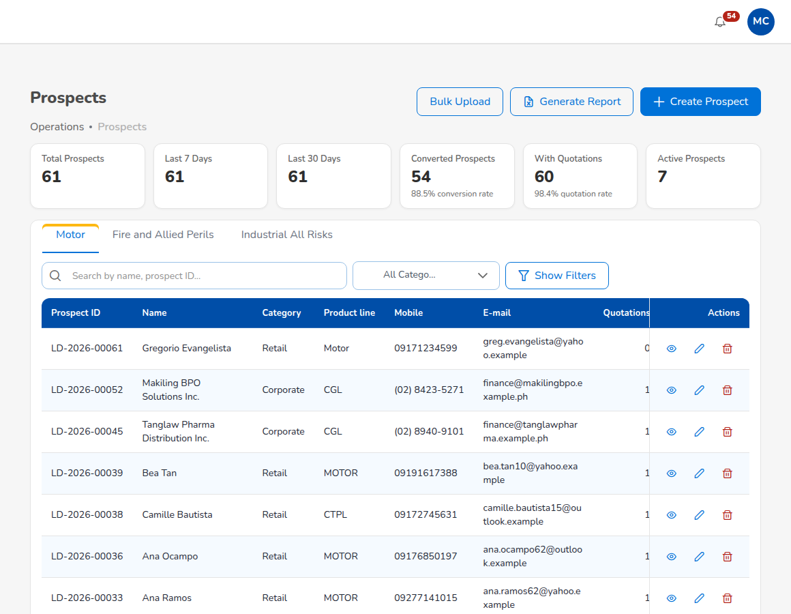
Choose Operations > Sales & Marketing > Prospects. The cards count Total Prospects, Last 7 Days, Last 30 Days, Converted Prospects (with the conversion rate), With Quotations and Active Prospects. One tab per line of business of the active products (Motor first, then for example Credit Life, Marine and Personal Accident) lists the prospects of that line, and the last tab, Product not yet tagged, the prospects created without a product. The table has the columns Prospect ID, Name, Category, Product line (the product, or Product not yet tagged), Mobile, E-mail, Quotations, Created on, Status and Actions (View, Tag product or Change product, Edit and Delete). Use the search box (name or prospect ID), the Category filter and Show Filters (country, province, city) to narrow the list. The search, filters, tab and page are kept when you open a prospect and come back.
Create a prospect
- Select Create Prospect. The Create prospect panel asks whether the customer is new or already a client.
- Choose New customer (enter the customer's details on the prospect form) or Existing client, then select Continue. For an existing client, type at least three characters of the client's name, mobile number or e-mail. The clients found are listed with their Client code, Name (with the city), Mobile and E-mail; a long value is cut short and shown in full when you point at it. Select a client with a click (or the arrow keys from the search box): its row is highlighted and its radio button set. Select Use this client (or press Enter, or double-click the row). When no client matches, select Create a new customer instead. The prospect form then starts from the client's details and the prospect is linked to that client: no second client is created when its quotation becomes a policy.
- Choose the product the prospect is for: first the Line of Business (only the lines that have active products are listed), then the Product (the active products of that line; a line with a single product selects it). Select Continue. A motor product opens the prospect form; Fire and Allied Perils, Industrial All Risks and Employee Benefits open their own forms while those products are active; any other product opens a Request for Quotation for the new prospect.
- If the customer has not chosen a product yet, select Skip - tag product later instead: the prospect form opens without a product.
Every way of starting a new prospect goes through this panel: Create Prospect on Prospects, Create Lead on Clients, New Quote on the Executive Dashboard, the Underwriting Dashboard buttons and a prospect form opened from a link or the side bar. Editing a prospect or adding a quotation to an existing prospect opens its form at once.
- Fill in the prospect form and select Save & Continue. The form has the sections Customer, Contact, Address and Source and product, each field with its label above it, a red asterisk when it is required and the message of a wrong value under it.
- Before a new prospect is saved, the system looks for possible duplicates: clients and open prospects with the same e-mail, the same mobile number, or the same name with the same date of birth. When it finds some, the Possible duplicate window lists them with what matched. Select Use this client to link the prospect to an existing client (the form takes the client's details), Open prospect to work on the existing prospect instead, or Save anyway to create the new prospect. For an existing client, the window lists the client's open prospects. The check can be switched off with
leads.duplicate_check(System Settings, group leads).
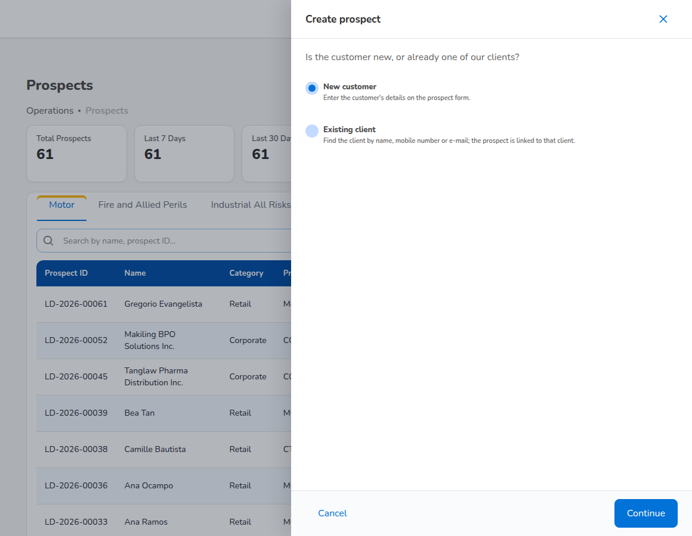
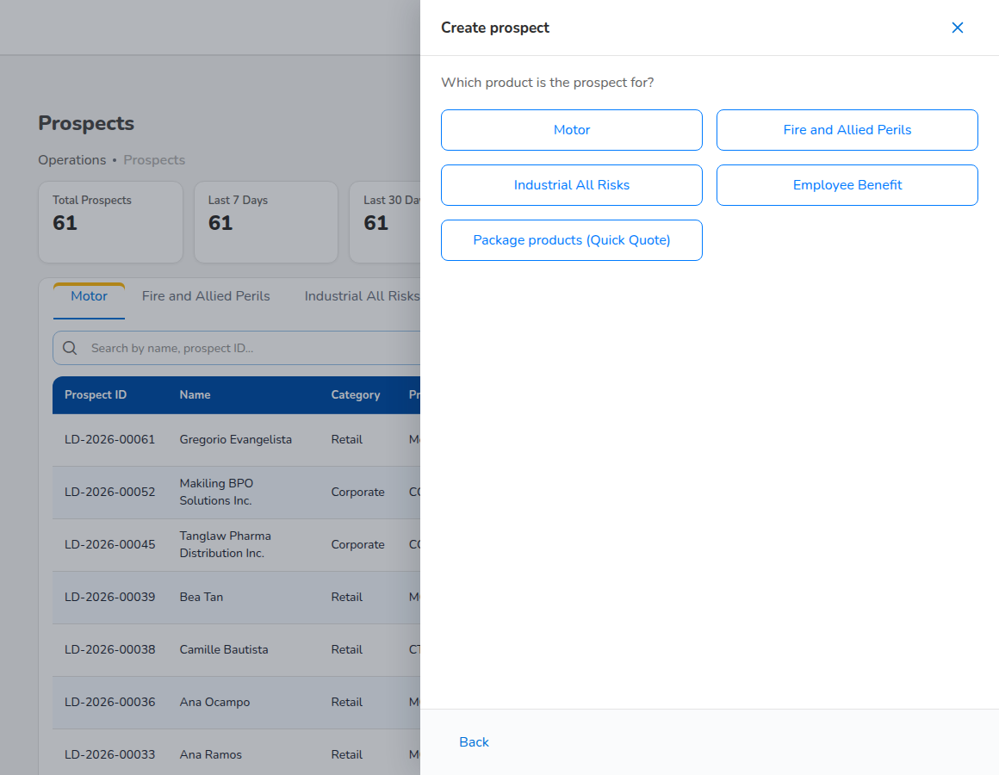
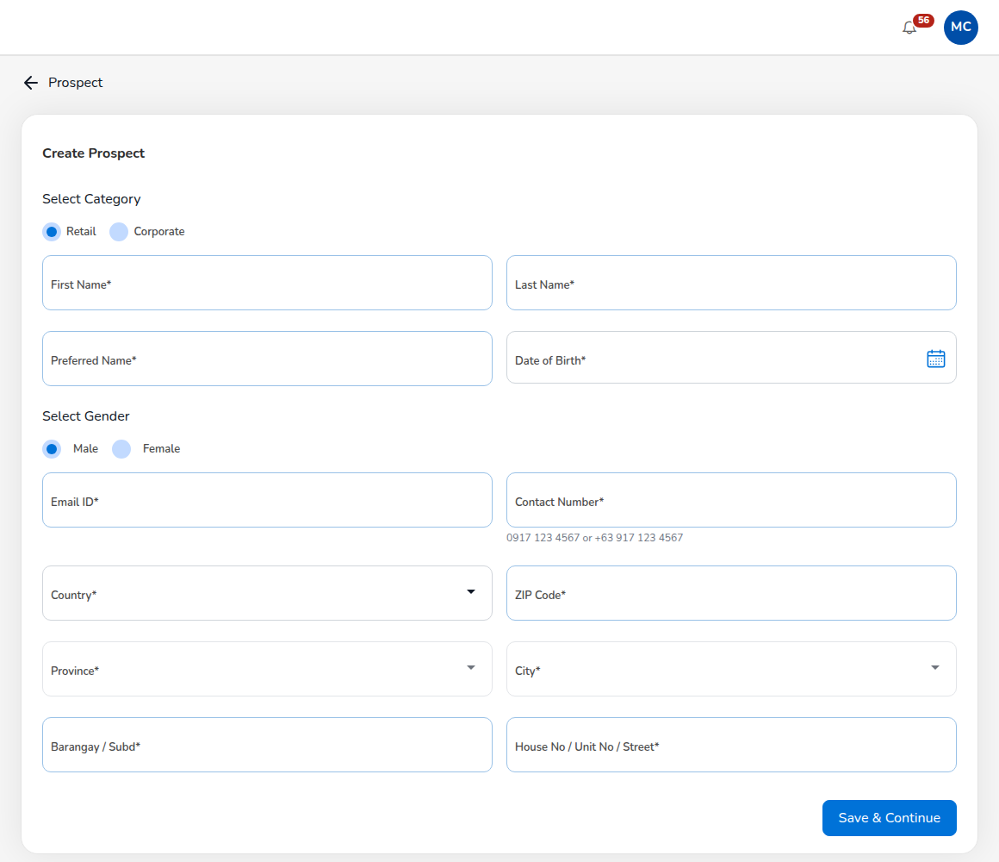
| Field | Required | Rules |
|---|---|---|
| Category (Customer) | Yes | Retail (a person) or Corporate (a company). |
| Company name, TIN (Customer, Corporate) | Yes | The TIN as 9 digits, or 12 to 14 digits with the branch code (000-000-000-000). |
| First name, Last name | Yes | The prospect, or for a corporate prospect its Contact person. |
| Preferred name | Yes | The name used in letters and e-mails. |
| Date of birth | Retail only | Not in the future; age 18 to 100 (leads.min_age_years, leads.max_age_years). Optional for the contact person of a corporate prospect. |
| Gender | Retail only | Male or Female. |
| E-mail (Contact) | Yes | A valid e-mail address. Quotations and approval links are sent there. |
| Mobile number (Contact) | Yes | A Philippine mobile number: 0917 123 4567 or +63 917 123 4567. |
| Country, Region, Province, City / Municipality, Barangay (Address) | Yes (Region optional) | From the PSGC address masters; choose the country first (Philippines by default), then the region or the province (the province fills its region), then the city or municipality (listed once the province is chosen), then the barangay. |
| ZIP Code | Yes | 4 digits; suggested from the city. A ZIP code typed first fills the city, province and region. |
| House / Unit No., Street / Subdivision | House / Unit No. yes | The street address. |
| Source (Source and product) | No | From Master > Insurance Management > Lead Sources. Product shows the product chosen, or Product not yet tagged. |
The system gives the prospect its number (LD-YYYY-NNNNN) with status New and, for a motor prospect, opens Create Quote for it. Fire and Allied Perils and Industrial All Risks prospects also ask for the risk location and the sums insured. A prospect created with Skip - tag product later opens on its Prospect Details, with the note that its product is not yet tagged, and is listed on the tab Product not yet tagged.
Tag the product later
Select Tag product (the tag icon) on a prospect row, or Tag product on Prospect Details. Choose the Line of Business, then the Product, and select Tag product. The prospect moves to the tab of its line. The same action, shown as Change product once a product is tagged, changes the line and product; each change is kept in the audit trail (action tag-product, with the line and product before and after).
When you select Create Quote (or Add quote on the prospect's quotations) for a prospect whose product is not yet tagged, the system first asks for the line of business and the product of the quotation, tags the prospect with them and then opens the screen of that product.
Lead assignment: a rule with a line of business does not match a prospect without a product, so such a prospect follows the rules without a line, else leads.assignment_fallback. A prospect that waits in the reassignment queue because no rule matched it is offered to the rules again when its product is tagged.
View, edit or delete a prospect
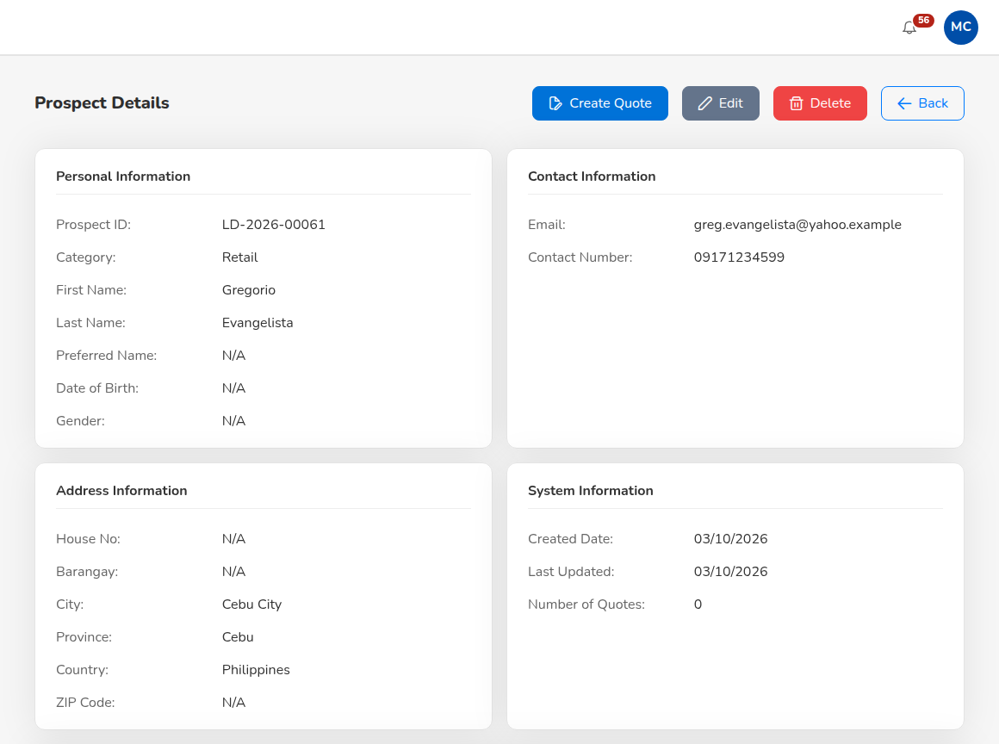
Select the eye (View) on a prospect row. Prospect Details shows Personal Information (with the Line of business and product, or Product not yet tagged), Contact Information, Address Information and System Information (created, last updated, number of quotes). Select Create Quote to start a quotation, Tag product or Change product to set the line of business and product, Edit to correct the prospect (the form shows the same fields; select Update to save), Delete to remove a prospect entered by mistake, or Back. Keep prospects that have quotations.
| Prospect status | Set when |
|---|---|
| New | The prospect is created. |
| Contacted, Qualified | The prospect is followed up. |
| QuoteGenerated | A quotation is saved for the prospect. |
| Converted | A policy is issued from one of its quotations; the prospect becomes a client. |
| Lost | The prospect does not buy. |
Upload many prospects
- Select Bulk Upload.
- Select Download template. The workbook has a Data sheet (the header row and sample rows), a Columns sheet with the rules of each column and an Instructions sheet. Delete the sample rows and fill in one prospect per row. LOB (line of business) and Product (code or name of an active product of that line) are optional: a row without them creates a prospect whose product is tagged later; a product that is not a product of the row's LOB is refused with the reason.
- Select Choose file, choose the file (.xlsx or .csv, at most 10 MB) and select Upload.
The dialog shows "Processed n rows: c created, f failed" and lists each row it could not load with its row number and the reason, named by the column of the template. Fix those rows and upload only them again. Quotations, Policy, Receipts and Disbursement Bulk Upload work the same way; on Policy, Upload into chooses new business or existing policies (go-live), which need the policy number, insurer, inception and expiry dates. Generate Report downloads the prospect list as a spreadsheet.
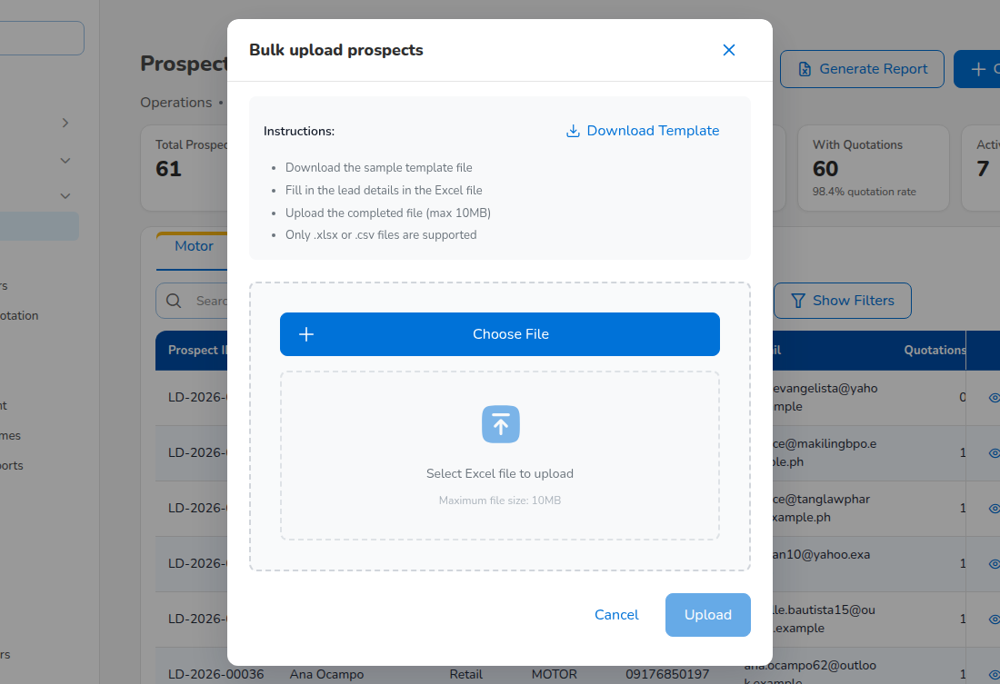
Quick Quote
Quick Quote offers the package products: standard tariff and wording, quoted on the spot. Choose the Line of Business, then the Product (a line with a single product selects it). The card of the product shows whether it is for retail or corporate clients, and one of two buttons:
- Start quote: the product has a quote wizard (Motor Vehicle Insurance, Compulsory Third Party Liability). Enter the customer and the vehicle; the premium is priced from the tariff. The wizard starts with the prospect form when the customer is not yet a prospect.
- Request quotation: the product has no quote wizard yet. The button opens a Request for Quotation so the Processing Team gets the terms from the insurers.
Request for Quotation (non-package) at the top opens a new request for a risk that is not a package product.
Create a motor quotation
A motor quotation has five steps. Nothing is saved until Completed Quote on the last step, so you can move with Back and Next.
- Open the prospect (Prospects > View) and select Create Quote, or select Start quote on Quick Quote.
- Policy Details and Insurance Vehicle Details: fill in the fields below and select Next.
- Plan recommendations: keep the recommended plan or choose another, then Next.
- Coverage details: fill in the covers, select Calculate, check the premium, then Next.
- Accessories and policy limits, then Next.
- Order summary: set the discount, the referrer and the signatory, then select Completed Quote.
| Field (step 1) | Required | Meaning and rules |
|---|---|---|
| Co-Insurance | No | Tick when more than one insurer shares the risk; a table appears for the co-insurers and their shares (total 100%, one lead). |
| Insurance Company Name | Yes | The insurer that will issue the policy. |
| Insurance Policy Type | Yes | Comprehensive, Own Damage / Theft or Third Party Liability. |
| Referrer (agent / account code) | No | The agent or referrer credited with the business; active referrers only. |
| Payment Type | Yes | Cash or Credit. |
| Vehicle Type | Yes | The Insurance Commission vehicle class; it sets the CTPL tariff, the default seats and the own damage rate. |
| Vehicle Brand, Vehicle Model, Model Variant | Yes | From the vehicle master; each list follows the one before. |
| Model Year, Vehicle Color | Yes | Model year within the last 20 years up to next year. |
| Seating Capacity | Yes | Seats including the driver, 1 to 99; used for Auto Passenger PA. |
On the coverage step, own damage is priced from the sum insured (the market value) and the rate of the motor tariff; CTPL is the Insurance Commission tariff of the vehicle class, inclusive of taxes and fees; the optional covers are those of the product template (Acts of Nature, excess Bodily Injury and Property Damage, Roadside Assistance, Personal Accident and Auto Passenger PA, limit per person x seats covered, with the delivered template; see Covers and risk details of the product below). Select Calculate after every change. The order summary shows:
| Line | How it is calculated |
|---|---|
| NET Premium | Sum of the cover premiums, without CTPL. |
| VAT | 12% of the net premium (VAT rule of Master > Finance > Premium Taxes & LGU Rates), for products under the VAT regime. |
| DST | PHP 0.50 on each PHP 4.00 of net premium, a fraction counting as a whole PHP 4.00 (DST rule). |
| LGT | 0.75% of the net premium (LGT rule), or the rate of the client's city or municipality in Premium Taxes & LGU Rates. |
| CTPL | The tariff amount, not taxed again and never discounted. |
| Discount | The discount given to the client, limited by the Authority Matrix of your role. |
| Gross premium | Net premium + taxes + CTPL + other premium - discount. |
Under commission and referral choose the referrer or keep the broker's own lead; the comsub rate fills in from the commission rule (level L1 8%, L2 5%, commission.comsub_rate_by_level). The brokerage rate comes from the Commission Rate Matrix, then the insurer's default rate, then commission.default_rate (15%).
When you select Completed Quote, the system prices the quotation again on the server from the configured rates and taxes, saves it as Draft with its number QT-YYYY-NNNNN, sets the prospect to QuoteGenerated and opens the quotation. A premium changed in the browser is refused. The quotation is valid for 30 days (limits.quote_validity_days).
Covers and risk details of the product
The quotation follows the product template that governs it (the motor pricing template, motor.pricing_template_code; Product Configurator > Product Templates).
Risk details for the product rules (step 1, below the vehicle): the wizard asks for the details the template's acceptance rules and rating factors test, so that every rule is checked when the quotation is priced. With the delivered motor template these are the Driver's date of birth (the driver age is computed from it), Claims in the last 3 years, Fair market value of the vehicle, The vehicle has modifications, and the Claim-free years (NCB) and Vehicles in the fleet the rating factors use. A field marked * is tested by an acceptance rule and must be filled in before Next; a group or personal accident risk asks for the Number of members. The vehicle use, model year and sum insured are taken from the vehicle and cover fields. When a rule or factor is added on the Product Configurator, its field is asked for on the next quotation.
| Detail | Rule that uses it (delivered template) |
|---|---|
| Driver's date of birth | Driver under 21: 15% loading; driver age rating factor |
| Claims in the last 3 years | Two or more claims: 20% loading |
| Fair market value | Sum insured above the fair market value by more than 10%: referred |
| The vehicle has modifications | Modified vehicle: referred |
| Vehicle use (step 1) | Public utility vehicle: declined |
Covers of the product (coverage step, at the top): the covers of the template's Coverage Builder. A Mandatory cover is always included and cannot be unticked; an Optional cover is ticked to quote it and unticked to leave it out (its fields are then hidden and its premium is zero). Each cover is priced on the quotation premium of its Priced on quotation as setting (own damage and theft, acts of nature, roadside assistance, personal accident, excess bodily injury, property damage, auto passenger PA, CTPL). A cover that the template does not list is not offered. A cover without a quotation premium is quoted for its terms only. Select Calculate after a change.
When the quotation is saved the server prices it on the same covers (a mandatory cover is added if missing; a cover that is not on the template is refused) and evaluates the acceptance rules on the risk details: none is left "not evaluated". With underwriting.require_rule_fields on, the server also refuses a quotation that lacks a detail an acceptance rule tests (for example a quotation created by upload).
Quotations
Choose Operations > Sales & Marketing > Quotations. The cards count Total Quotations, Active Quotations, Pending Review, Approved Quotations (with the approval rate) and Converted to Policy, with the Average Premium. The list shows Quote ID, Prospect Name, Policy Type, Gross premium, Date and Status; View Details opens a quotation. Create Quote asks for the Line of Business, then the Product, and opens the screen the product is quoted on (motor and fire quotations start from a prospect; any product without a quote screen opens a Request for Quotation); Bulk Upload loads quotations from a template.
| Status | Meaning | Next step |
|---|---|---|
| Draft | Saved, not sent; can still be edited. | Send for Customer Approval |
| Pending Customer | Sent to the client; waiting for the answer. | The client accepts, or Record customer response |
| Customer Accepted | The client accepted; the placement slip is raised automatically. | Open Placement Slip |
| Approved | Approved by a user other than the creator. | Placement slip |
| Rejected, Dropped | Not taken up; can be reopened as Draft. | |
| Expired | Not converted within its validity (Quotation expiry job, daily 00:30). | Reopen as Draft |
| Converted to Policy | The policy is issued; the quotation can no longer be edited. |
Send the quotation and record the customer's response
- Open the quotation with View Details. The page shows the Placement journey, Policy Details, Assured Details, Insurance Vehicle Details, Coverage details and Payment Details (net premium, DST, VAT, LGT, others, discount, gross premium). The Audit Trail tab lists every change.
- Check the details and select Send for Customer Approval. The client must have an e-mail address. The system e-mails a signed approval link valid for 7 days (
quotations.approval_link_ttl_hours), sets the status to Pending Customer and notifies the Processing Team. - The client opens the link, checks the quotation and approves it; no sign-in is needed. The status becomes Customer Accepted and you are notified. Copy approval link copies the link so you can send it by another channel.
- When the client answers in another way, select Record customer response. Choose the Customer's answer (Accepted, Declined or Revise), Received by (E-mail, Phone, Viber/WhatsApp, Meeting or Signed form), the Response date, a Reference (for example the Viber message time or the signed form number), Remarks and, if you have it, an attachment (screenshot, signed form or e-mail). Select Record response.
| Answer | Resulting status (quotations.customer_response_status) |
|---|---|
| Accepted | Customer Accepted: the placement slip is raised. |
| Declined | Rejected. |
| Revise | Draft: change the quotation and send it again. |
Share offers Download, Email, WhatsApp, Send to Insurer and Copy link.
From the accepted quotation to the policy
When the client accepts, the placement slip is raised automatically (setting placement.auto_raise) and the quotation shows it in its journey; the Processing Team continues as described in its chapter. If it could not be raised (for example no insurer is named on the quotation), the owner is notified with the reason and selects Create Placement Slip once it is fixed. The quotation itself never becomes a policy: the policy is booked from the placement slip once the insurer has issued it.
For motor lines, select Proceed to Policy on the accepted quotation to capture what the policy needs, so that it is not keyed again later:
- Customer information: the government ID (ID Type, ID card number and a scan of the ID card), Motor Number, Chassis Number and Plate Number or MV File Number, and the optional mortgagee, CTPL certificate number and authentication code. The plate or MV file number may still be TBA on the quotation; it is required when the e-policy is recorded. The accepted ID types are PhilSys ID, UMID, Passport, Driver's License, PRC ID, SSS ID, GSIS ID, TIN ID, Postal ID, Voter's ID and Senior Citizen ID (
policy.kyc_id_types); the policy is not booked without the fields inpolicy.kyc_required_fields. - Vehicle photos: left side, right side, front, rear and interior.
- Review: the policy, assured, vehicle, coverage, premium and the participating insurers with their shares, and the billing mode (broker billed or direct bill). Send to Insurance Company opens the placement slip of the quotation.
Sales activities
Account executives log every call, meeting, e-mail and visit with a prospect, a client or on a quotation. Each prospect, client and quotation shows its activities as a timeline, newest first: a prospect and a client also show the activities logged on their quotations (with the quotation number), and a client those of the prospect it came from. The open next step is shown above the timeline.
To log an activity:
- Open the prospect (Prospects > View), the client (Clients > View) or the quotation (Quotations > View Details > Activities tab).
- In Activities, select Log activity.
- Choose the Activity type (phone call, meeting, client or site visit, e-mail, video call, SMS or chat message, proposal presentation) and the Date and time it took place. The subject takes the type's name unless you enter one.
- Enter the Duration, Contact person, Location and Notes as needed, and the Outcome (interested, documents requested, quotation presented, accepted, call back, no answer, not interested, placed elsewhere).
- Enter the Next step and its Next step date (the date proposed is the type's default days to the next step). Select Save.
| Rule | Detail |
|---|---|
| Date | An activity is logged once it has taken place, up to sales_activities.backdate_days (30) days back. |
| Next step | A next step with a date becomes a follow-up task in the account executive's My Work (source Sales activity next step), due on that date, with the usual reminder. A next step date needs the next step text; sales_activities.next_step_required makes both compulsory. |
| Later activity | An activity logged on the same record completes the open follow-up of the earlier activity (sales_activities.close_previous_follow_up). |
| Change or cancel | The pencil changes an activity (a new next step date moves its task); the cross cancels an activity logged in error with a reason, and cancels its open task. Only the account executive, who logged it or their manager can do this. |
| Prospect status | A New prospect becomes Contacted with its first activity. |
| Access | Sales & Marketing and Operations log activities (write:sales-activities); the Processing Team reads them; a scoped role sees only its own book. |
The follow-up task priority is sales_activities.follow_up_priority (normal). The activity types (channel and default days to the next step) and outcomes (positive, neutral or negative, used by the report) are kept by the System Administrator on Master > Organization > Sales Activity Types and Sales Activity Outcomes.
Operations > Sales & Marketing > Sales Activities lists the activities of a period (From, To) with filters for the account executive, type and outcome and a search; select a row to open the prospect, client or quotation. The Activity Report tab sums, per account executive, the activities by channel (calls, meetings, e-mails, visits), the prospects, clients and quotations worked, the positive outcomes, the next steps set and their follow-ups done, open and overdue, with the totals by activity type and by outcome. Export to Excel downloads the list or the report.
Request a quotation from the market
For a non-package risk, select Request quotation on Quick Quote, or Request for Quotation (non-package), or New Request for Quotation on Operations > Sales & Marketing > Request for Quotation (Broker Slip). Describe the customer, the risk, the covers and the insurers to approach, as described in the Processing Team chapter, and agree with the Processing Team who sends it to the market. The Processing Team records the offers, compares them and prepares the Quotation Slip that you send to the client.
Record the client's payment
Only Accounting posts official receipts. The account executive records how the client paid; Accounting verifies the payment and posts the receipt.
- Open the policy (Operations > Policy, arrow on the row) and select Proceed to Payment.
- The page shows the Payment Details of the policy and the Outstanding amount.
- Under How does the client pay?, choose Pay later (the bill stays open; record the payment when the client pays), Bank transfer, Cheque, Online payment (paid online by the client; enter the transaction reference) or Cash.
- Fill in the reference, the amount paid, the payment date, remarks and, if you have it, the proof of payment.
- Select Record payment.
The payment waits for verification, the policy payment status becomes Reviewing and Accounting receives the notification to verify it. Accounting confirms it (the official receipt is posted) or rejects it with a reason.
Policies
Choose Operations > Policy. The list shows Policy Number, Client Id, Client Name, Gross Premium, Policy Issued, Policy Expiry, Product Description and Payment status. The search box finds a policy by number or client. Show Filters offers Payment Status, Product Type, Insurance Company, Client Name, issue and expiry date ranges and minimum and maximum premium.
The eye on a row (View policy) opens the policy; the three dots (More actions) open Claim and Endorsement. Both are greyed out while the premium payment is Pending or Reviewing, and Endorsement is not offered for expired, lapsed, cancelled or renewed policies.
Policy Details shows the header (policy number, client, expiry, payment status) with Claim, View Policy and Endorsement; the Gross Premium, Expiry Date and Client ID cards; Policy Details, Insured Details, vehicle details and photos for motor, coverage and premium; Documents & Billing (Generate Policy Invoice, Premium Accounting Entries, the policy document with Preview and Open); and Related Records (quotation reference, insurance company, account code).
| Policy status | Meaning |
|---|---|
| Active | In force. |
| Expired | Past its expiry date (Policy expiry job, daily 00:15). |
| Renewed | Replaced by a new term. |
| Lapsed | Not renewed within the 30-day grace period (renewals.grace_period_days). |
| Cancelled | Cancelled by endorsement. |
| Payment status | Meaning |
|---|---|
| Pending | Premium due, nothing received. |
| Reviewing | A payment was recorded and waits for Accounting. |
| Partial | Part of the premium was receipted. |
| Completed | Fully paid. |
| Refunded | Premium returned to the client. |
Renewals, open items, payments and clients
The account executive uses the same renewal screens as Operations (Operations chapter) for his or her own clients: the Renewal Queue filtered by Sales person, At-Risk Policies, and Negotiations to record contacts and request approval of renewal terms. My Work shows your daily worklist (quotations, renewals, premiums due, collection follow-ups, claims, approvals and your tasks); Payments shows the premium of your policies by Paid, Pending and Reviewing; Clients opens the client record with its policies, claims, renewals and endorsements.
Commission and reports
Commission > Commission Dashboard shows live figures from the commission ledger: brokerage income, comsub (gross), net margin and margin %, outstanding payable and the withholding tax withheld, with comsub by referrer, lines by status (Accrued, Eligible, Approved, Paid) and the monthly trend. Accounting and Management switch the view.
Reports > Operational Reports > Production opens the Production Register; Reports > Report Builder answers ad hoc questions over the policies, clients, bills, claims and commissions of your own book (chapter Distribution, programmes and products); All Reports lists every report the role may run (Production Register, Claims Position, Renewal Retention, Remittance Summary, Broker Commission Statement, Premium by Product / Month / Insurer, New Business vs Renewals, Claims Ageing, Lead Conversion Funnel, Placement Pipeline, Market Response, Co-insurance Register, SOA / Premium Receivable, Receivables Ageing, Incentive Results). The chapter Reports, dashboards, schedules and notifications explains how to run them.
Approvals
| Approval | Who gives it |
|---|---|
| Quotation approval | A user other than the creator (workflow.quote_maker_checker); the Processing Team is notified. |
| Discount above the role's limit | Refused by the Authority Matrix; ask a role with a higher limit. |
| Renewal terms | The Processing Team (renewals.maker_checker). |
| Payment recorded | Verified by Accounting, which posts the official receipt. |
The account executive gives no approvals.
Processing Team
Role summary
The Processing Team (role Processing Team (Placement & Policy Processing)) works the market side of the business. It sends requests for quotation to insurers, records their offers and declines, compares them and chooses the security, prepares Quotation Slips, sends placement slips (firm orders) and records the insurers' confirmations, issues and checks policies, records policies the insurer issued, completes endorsements with the insurer's document, approves renewal terms, and maintains the product templates and the motor tariff.
Menus available
| Menu | Items |
|---|---|
| Dashboard | Processing Dashboard, Executive Dashboard |
| Operations | Home; Sales & Marketing (Prospects, Request for Quotation (Broker Slip), Quotations, Placement Slips, Dealer Programmes, Comparison Reports, Sales Activities); Clients; Policy; Fleet Schedules; Marine Open Covers; Claims; Renewals (all items); My Work; Payments; CTPL Authentication; Cover Notes; Policy Cancellation |
| Reports | All Reports; Operational Reports; Report Builder |
| Master | Insurance > Distribution Channels |
| Product Configurator | Dashboard, Product Templates, Coverage Builder, Rating Engine, Acceptance Rules, Document Manager, Market Mapping, Risk Mapping, Product Analytics |
The Processing Team reads prospects and their sales activities but does not create them, and has no Quick Quote: Quick Quote creates prospects and quotations, which is Sales and Operations work. Dealer Programmes, Comparison Reports, Fleet Schedules, Marine Open Covers are described in the chapter Distribution, programmes and products.
Daily and periodic tasks
| When | Task | Screen |
|---|---|---|
| Daily | Work the submissions and open tasks | Processing Dashboard |
| Daily | Send requests for quotation; record offers and declines | Requests for Quotation (Broker Slips) |
| Daily | Compare offers and prepare Quotation Slips or Placement Slips | Request for Quotation > Compare offers |
| Daily | Send placement slips, record acknowledgements and e-policies, check them against the slip, book the policies the insurers issued | Placement Slips |
| Daily | Complete endorsements with the insurer's document | Policy > endorsement |
| Daily | Approve renewal terms | Notification; Renewals > Negotiations |
| On receipt | Record the e-policy an insurer sent | Placement Slips > Record e-Policy |
| On request | Issue a cover note while the insurer issues the policy; issue a fleet schedule or a marine open cover | Operations > Cover Notes, Fleet Schedules, Marine Open Covers |
| When rates change | Maintain the motor tariff and product templates | Product Configurator |
Processing Dashboard
Choose Dashboard > Processing Dashboard. The PROCESSING WORKBENCH shows, for the period chosen at the top (for example This Week): NEWLY RECEIVED SUBMISSIONS and OLDER SUBMISSIONS (quotations waiting for action), AVG. CYCLE TIME, OPEN ALERTS (Duplicate Submission Detected, Missing TIV and Proposed Dates, Missing LOB, Type or Broker), WORKLOAD METRICS, the SUBMISSIONS LIST (case ID, proposed insured, account executive, face amount, product type, risk score, next requirement due, priority and status) and Open Tasks. New Submission starts a quotation.
Requests for quotation (broker slips)
Choose Operations > Sales & Marketing > Request for Quotation (Broker Slip). The cards count the requests by status (Submitted, Responses in, Draft, Closed); select a card to filter. Each row shows Slip No., Insured, Product, Sum insured, Offers / approached (with the number declined), Best offer (gross), Response due, Age, Status and the Quotation Slip made from it. Select a row to open it.
| Status | Meaning |
|---|---|
| Draft | Saved, not yet sent to the market. |
| Submitted | Sent to the insurers; waiting for their answers. |
| Responses in | At least one insurer has answered. |
| Closed | Turned into a Quotation Slip or Placement Slip, or closed as not taken up. |
| Cancelled | Withdrawn with a reason. |
Create a request for quotation
- Select New Request for Quotation.
- Under Customer and risk, choose Customer: Client (an existing client), Prospect or New prospect, and search for the record. Choose the Line of Business, then the Product of that line (every active product is offered, package or not). A new prospect saved with the request is tagged with the product. Insured fills in; change it if the slip is for another named insured.
- Enter Inception and Expiry. Leave Response due empty to use the default of the settings, or set the date by which insurers must answer.
- Under Risk details, add each detail of the risk as an item and a value (location, occupancy, construction, protection; for marine the cargo, voyage and conveyance) with the plus sign.
- Under Requested covers, select Add cover for each cover with its Sum insured and Deductible. The covers offered are those of the product.
- Under Market, choose the Insurers to approach (required).
- Add Remarks for the insurers, for example the claims history or the incumbent's renewal terms.
- Select Save draft to keep working, or Save and submit to market. Cancel leaves without saving.
When you submit, the system numbers the slip (BS-YYYY-NNNNN), creates one offer record per insurer with status Pending and queues a request-for-quotation e-mail to each insurer. Slip PDF prints the slip for the whole market; the PDF icon on an insurer's row prints the slip addressed to that insurer.
Record the insurers' answers
The request shows its placement journey, the customer, product, sum insured, period, submission and response dates, the best offer and the creator, and three tabs: Market responses, Compare offers, Risk and covers.
- Open the tab Market responses. Each insurer is listed with Status (Pending, Offered, Declined), Net premium, Rate, Taxes, Gross premium, Line offered and deductibles.
- On the insurer's row, select Record response (or Edit to change an answer already recorded).
- For an offer, enter the Net premium (100%), the Rate if the insurer quoted one (otherwise Derived), the Line offered (the share the insurer will write), Taxes and Gross premium if the insurer stated them (otherwise Computed), Valid until, Deductibles, Special terms and conditions and the Insurer reference. Attach the insurer's letter with Attach the offer.
- For a decline, select Record decline and enter the Reason for declining.
- Select Save. The message reads Response of (insurer) recorded.
The request becomes Responses in with the first answer. Add insurer approaches another insurer on an open request; that insurer receives its own request.
Compare the offers and choose the security
The tab Compare offers ranks the offers by gross premium and marks the cheapest Best. For each offer it shows the difference to the best (vs best), the rate and deductibles. The summary line counts the offers, declines and pending insurers and the Market capacity (lines offered).
- Tick Select on each offer to place. One offer at 100% is a single-insurer placement; several offers make a co-insurance led by the insurer you choose, and the premium follows the lead's terms.
- Choose the Lead with the radio button.
- Enter the Share taken of each selected offer. Selected shares total must be exactly 100%.
- Select Prepare Quotation Slip when the client must see and accept the terms first, or Prepare Placement Slip to send the firm order straight away. The buttons offered follow the placement journey of the line.
The request is then Closed and its progress bar links to the next records. Risk and covers repeats the risk details and covers. To stop a request, select Cancel / close and choose Cancel slip (withdrawn) or Close (not taken up) with the reason.
Quotation Slips
A Quotation Slip prepared from a request is a quotation (QT-YYYY-NNNNN) with the chosen insurer or insurers and their shares. It opens on Quotations like any other quotation, shows its placement journey and follows the statuses and the customer response described in the Sales & Marketing chapter. The account executive sends it to the client; when the client accepts, its placement slip is raised automatically.
Placement Slips
The broker never issues cover. A placement slip goes to the insurer, the insurer acknowledges it and returns the e-policy, the e-policy is checked against the slip and only then is the policy booked. No screen lets a user complete cover without the insurer.
Choose Operations > Sales & Marketing > Placement Slips. The cards count each step: Placement raised, Sent to insurer, Acknowledged, e-Policy received, Checked against slip and Insurer issued (Booked); a card filters the list. The filters choose a status and a source. Each row shows Placement No., Insured, Product, Lead insurer, Gross premium, Period, Source (From quotation slip, From broker slip, Direct placement, or Recorded policy for older records), Status and the Policy booked.
| Status | Meaning |
|---|---|
| Placement raised | Prepared and its slip PDF stored; participants can still be changed. |
| Sent to insurer | The firm order was e-mailed to each participant with its placement slip attached. |
| Acknowledged | The insurer confirmed receipt of the order. |
| e-Policy received | The e-policy the insurer issued was uploaded and its figures keyed; it waits for the check. |
| Checked against slip | A second user confirmed that the e-policy matches the slip, or an approver accepted the differences. |
| Insurer issued (Booked) | The policy is in force: bill, journal and commission booked, schedule e-mailed to the client. |
| Declined | A participant declined its line: edit the participants or cancel the slip. |
| Cancelled | Withdrawn with a reason. |
A placement slip is raised automatically when the client accepts a quotation, from Prepare Placement Slip on a request, or from New direct placement when the client instructs placement with named insurers and no quotation is needed (CTPL).
Create a direct placement
- Select New direct placement.
- Fill in Customer and risk (Customer: Client, Prospect or New insured; Line of Business and Product; Insured; Risk details). For CTPL attach the LTO document / official receipt; it is required (setting
placement.direct_document_products) and goes to the insurer with the slip. - Under Period and premium, enter Inception (required), Expiry, Sum insured, Net premium (required), Commission rate (empty: the insurer's default) and Billing mode (empty: System default), and Remarks.
- Under Security (participating insurers), choose each insurer with Add insurer, enter its Share and tick Lead for one of them. The line under the table says whether the shares total 100% and whether the placement is a co-insurance or a single insurer.
- Select Create Placement Slip.
The rules: at least one insurer; an insurer can take part only once; every share above 0%; exactly one lead; shares total exactly 100%. Motor comprehensive cannot be placed without a quotation.
Send to the insurer and record the acknowledgement
- Open the placement slip. Security (participating insurers) lists each insurer with role (Lead or Co-insurer), Share, Sum insured, Premium, Taxes, Gross, Commission, Policy / certificate no. and Status. Below are the Premium breakdown, the Summary (with the stored Placement file) and the Risk.
- Select Send to insurer(s). Each participant receives an e-mail with its own placement slip PDF attached (and the LTO document of a direct CTPL); the status becomes Sent to insurer. Resend to insurers sends it again, for example after the e-policy was returned.
- When the insurer confirms receipt, select Record acknowledgement, enter its reference and a remark, and save. The status becomes Acknowledged.
- When an insurer declines its line, select Declined on its row and record the reason. Then use Edit participants to replace the insurer or change the shares so that they total 100% again, and send again.
Slip PDF prints the placement slip; the PDF icon on a participant's row prints the slip for that insurer's share.
Upload the e-policy
When the insurer sends the issued policy, select Upload e-policy (or use Record e-Policy, below). Attach the e-policy file and key what it says:
- Insurer policy number (required) and BrokerVerse policy number (blank: numbered by the system at booking);
- Participant name (the insured named on the policy), Sum insured, Net premium, Gross premium and Commission;
- Issue date and Effective date (required), Issuance date, Expiry date and Production date;
- the Deductible, and for motor and CTPL only the Chassis, Engine / motor, Plate and MV file numbers. They are carried from the quotation; the plate number or the MV file number is required here even where the quotation said TBA;
- the References of the co-insurers, for motor and CTPL only an optional Vehicle photo, and Remarks.
Credit Life, Personal Accident, Group Personal Accident, Travel, Parcel and the other lines have no vehicle: the window shows neither the vehicle identifiers nor the vehicle photo, and the check against the slip compares the amounts, the period, the insured and the deductible only. In the same way the policy view shows the vehicle details, vehicle photos and motor coverage only for a motor or CTPL policy, an endorsement of another line offers only Personal Details Change, Policy Extend and Policy Cancel, and a claim of another line has no driver, plate number or repair shop and offers the causes of loss of its line (claims.loss_causes).
The system compares the e-policy with the slip at once; the status becomes e-Policy received and the e-policy card shows Matches the slip or Differs from the slip.
Check against the slip
The check is made by a user other than the one who uploaded the e-policy (maker-checker, setting placement.check_maker_checker).
- Select Check against slip. The slip and the e-policy are shown side by side: net premium, gross premium, sum insured, commission, effective and expiry dates, insured, vehicle identifiers and deductible (setting
placement.check_fields). An amount within the tolerance matches: the larger ofplacement.check_tolerance_amount(1.00) andplacement.check_tolerance_pctof the slip amount. Differences are highlighted; a value the quotation did not have (a plate number given as TBA) shows as Captured. - When everything matches, select Confirm check. The status becomes Checked against slip.
- When there are differences, enter a reason and either select Return to insurer, which e-mails the differences to the lead insurer and sets the slip back to Acknowledged until a corrected e-policy is uploaded, or, for an approver with policy issuance rights, Accept differences, which records the reason and sets the slip to Checked against slip.
Book the policy (Insurer issued)
On a checked placement slip, a user with policy issuance rights selects Book (Insurer issued), checks the ID details proposed for a motor risk and confirms. The system:
- creates the policy with the e-policy's numbers, insured name and dates, copies the participants, shares and insurer references to it, and makes it active;
- creates the client from the prospect if the insured is not yet a client;
- raises the premium bill to the client (broker billed) or books the commission due from the insurers (direct bill), posts the journal and accrues the commission;
- ends the active cover notes of the quotation or placement;
- e-mails the policy schedule, with the insurer's e-policy, to the client's registered e-mail address (setting
placement.schedule_email_on_booking); - sets the slip to Insurer issued (Booked) and links the policy. The message reads Policy (number) booked.
Nothing is booked before this step: there is no policy, bill or commission for a placement that is not yet checked. A quotation of a line that requires a placement slip is refused at Proceed to Policy with the message This line requires a Placement Slip before the policy is issued.
Record e-Policy
Use Record e-Policy to key the e-policies the insurers send back without searching for each placement slip. Choose Placement Slips and select Record e-Policy: the list shows the placement slips sent to the insurer or acknowledged. Select a row, then fill in the e-policy as described in Upload the e-policy. The placement slip opens afterwards for the check against the slip by another user.
Co-insured policies and premium accounting entries
Policy Details of a co-insured policy shows CO-INSURANCE DETAILS: each insurer with Insurer share (%), Premium allocation (LC) and Status, and the total. The placement slip of the policy shows each participant with role, share, sum insured, premium, taxes, gross premium, commission and policy or certificate number. Amounts are split by share; the rounding remainder goes to the lead. The same split is used for the bill journal, the remittance to each insurer, claim recoveries and the reports. Premium Accounting Entries (Documents & Billing on the policy) lists every journal line of the policy with Code, Entry Type, Description, Document Date, Due Date, Main Account, Dr/Cr and Amount; Filter by Entry Type narrows the list.
Complete an endorsement
Operations raises the endorsement request and sends it to the insurer (Operations chapter). When the insurer has issued its endorsement:
- Open the endorsement (from the notification, the policy's endorsements, or the client's Endorsement tab). It shows Waiting for Update.
- Select Proceed, upload the insurer's endorsement document with the endorsement number and dates, and complete it.
- The system applies the change to the policy and the client, bills additional premium or credits return premium, and notifies the policy owner.
Approve renewal terms
Renewal terms submitted from Renewals > Negotiations with Request approval come to the Processing Team (renewals.approver_roles, renewals.maker_checker). Open the notification or the negotiation, check the renewal premium, the change against the expiring premium and the loadings or discounts, and approve or return the terms. The maker cannot approve his or her own terms.
Product Configurator
| Screen | Use it to |
|---|---|
| Dashboard | See active products, total premium, average loss ratio and commission; Create New Product. |
| Product Templates | Create (Create Template), version and edit product templates. Template statuses are Draft, Active, Retired; only active templates are used by the quotation screens. |
| Coverage Builder | Keep the covers: code, name, mandatory or optional, deductible and premium impact (Add Coverage). |
| Rating Engine | Keep the rating factors (vehicle age, driver age, no claim bonus, vehicle use, region and others) with their rules, and test them with the Test Calculator. |
| Acceptance Rules | Keep the insurers' underwriting guidelines as acceptance, validation and loading rules (Add Rule). |
| Document Manager | Keep the document templates per stage, for example the motor policy schedule and the CTPL certificate (Upload Template). |
| Market Mapping | Map products to insurers with the insurer's code, commission, override and target (Map Product). |
| Risk Mapping | Product definitions per line; Industrial All Risks is defined by risk sections. |
| Product Analytics | Policies, premium, loss ratio and margin by product. |
The lists of Coverage Builder, Rating Engine, Acceptance Rules and Document Manager have a Template column: the code of the product template a cover, factor, rule or document belongs to, or All products for one that applies to every product. Select the column heading to sort by template.
To maintain the motor tariff, open the motor template with the pencil on Product Templates and its CTPL and Auto PA tab: for each vehicle class check the name, code, default seats and the CTPL amounts for 1 and 3 years; set the Auto Passenger PA rate and the limits per person offered; save the template. The quotation screens use the new values at once. The tax rates come from Master > Configuration and are shown read-only in the template.
Approvals
| Approval | Given or needed |
|---|---|
| Renewal terms of Operations and Sales | Given by the Processing Team. |
| Quotations sent for approval | The Processing Team is notified and may approve quotations it did not create. |
| Insurer confirmations | Recorded by the Processing Team; the policy is issued only when all participants have confirmed. |
Operations (client servicing)
Role summary
Operations (role Operations (Client Servicing)) looks after the clients once they are on the books: client onboarding and due diligence, client records, endorsement requests, cover notes, cancellations, CTPL authentication, recording the client's payment, the daily worklist, renewals and the documents sent to clients. Operations can also record prospects and quote package products in the same way as Sales & Marketing, and supports the Data Protection Officer.
Menus available
| Menu | Items |
|---|---|
| Dashboard | Executive Dashboard |
| Operations | Home; Sales & Marketing (Prospects, Quick Quote, Request for Quotation (Broker Slip), Quotations, Placement Slips, Lead Assignment, Dealer Programmes, Comparison Reports, Campaigns, Sales Activities); Clients; Policy; Fleet Schedules; Marine Open Covers; Claims; Renewals (Renewal Policy, Renewal Batch, Renewal Queue, Retention Analytics, At-Risk Policies, Negotiations, Lapse Management, Performance); My Work; Payments; CTPL Authentication; Cover Notes; Policy Cancellation |
| Reports | All Reports; Operational Reports; Report Builder |
| Master | Insurance > Distribution Channels |
| Product Configurator | Dashboard, Product Templates |
Lead Assignment, Dealer Programmes, Comparison Reports, Campaigns, Fleet Schedules and Marine Open Covers in the chapter Distribution, programmes and products.
Daily and periodic tasks
| When | Task | Screen |
|---|---|---|
| Daily | Work expiring policies, pending payments, pending quotations and renewal requests | My Work |
| Daily | Answer client requests: policy details, documents, changes | Clients, Policy |
| Daily | Onboard new clients and complete their identification | Clients > Onboard client |
| Daily | Raise endorsement requests; compute cancellations | Policy > More actions > Endorsement; Policy Cancellation |
| Daily | Issue cover notes while the insurer issues the policy | Cover Notes |
| Daily | Check that every CTPL certificate of cover is authenticated | CTPL Authentication |
| Daily | Record client payments | Policy > Proceed to Payment |
| Daily | Work the renewal queue and record contacts | Renewals > Renewal Queue, Negotiations |
| Weekly | Batch renewal notices; at-risk and lapsed policies | Renewal Batch, At-Risk Policies, Lapse Management |
| Monthly | Retention and renewal performance | Retention Analytics, Performance |
Home
Home (the first item of the menu, and the page every role lands on after sign-in) is My Work with a preset for the user's role, so that each user starts the day on what they have to do. The page is the same screen as Operations > My Work (next section): the title My Work, a subtitle with the role, today's date and the user's branch (or the company when no branch is set), the five My Work figures followed by two or three plain figures of the role, and the tabs My Items, My Team (managers), My Tasks and Calendar. The address /agent/home and the former Open Items and Upcoming Events addresses open Home.
The role preset decides which categories are listed first on My Items (the others follow, tasks last), whose items are shown by default (Mine; Everyone for an oversight role; a manager also has My team), which categories the Calendar shows, the one primary button of the page and the role figures. A user with several roles gets the most specific preset (System Administrator, then Accounting Manager, Accounting, Claims, Processing Team, Operations, Sales); a custom role gets the plain My Work.
| Role | Categories first | Default scope | Calendar shows | Primary button | Role figures |
|---|---|---|---|---|---|
| Sales & Marketing | Quotations, Renewals, Premiums due, Missing documents, Endorsements | Mine | Quotations, renewals, premiums due, endorsements, approvals | New quote (Quick Quote) | Quotes this month, Conversion (90 days), Renewals due in 30 days, over the user's own book |
| Processing Team | Requests for quotation, Placement slips, Quotations, Endorsements, Renewals, Approvals, Missing documents | Mine | Requests for quotation, placement slips, renewals, approvals | Cover note | Policies issued this month, Pending issuance (bound placements and approved quotations), RFQs with the insurers |
| Operations | Endorsements, Renewals, Missing documents, Quotations, Premiums due, Approvals | Mine | Renewals, endorsements, approvals | Cover note | Endorsements in progress, Renewals due in 30 days |
| Claims | Claims, Approvals | Mine | Claims, approvals | Register claim | Open claims, Average days open, Registered this month |
| Accounting | Premiums due, Collection follow-ups, Approvals, Bank reconciliations, Period close | Mine | Premiums due, collections, approvals, bank reconciliations, period close | Record receipt | Overdue receivables, Collections this month |
| Accounting Manager | Approvals, Period close, Bank reconciliations, Premiums due, Collection follow-ups | Everyone | Approvals, period close, bank reconciliations, premiums due | Approvals (shows the approvals waiting) | Overdue receivables, Collections this month, Vouchers awaiting approval |
| System Administrator | Users and access, System health, Approvals | Mine | Users and access, system health, approvals | New user | Active users, Failed jobs (24 h), Awaiting first sign-in |
The categories added for these presets are listed below with the other categories of My Items; every category is shown only to a role that may read its records, and the items follow the user's record scope.
My Work
My Work (Operations > My Work, and Home with the role preset) is the one place where each user finds what is waiting for them. It replaces the former Open Items screen; its old addresses open My Work.
The header shows five figures: Overdue, Due today, Next 7 days (the number of days is the setting myWork.due_soon_days), Open items (with the number of high-priority items) and Open tasks. Select a figure to filter the list.
The screen has four tabs:
| Tab | What it shows |
|---|---|
| My Items | Every open item you own or may act on, by category: quotations, Requests for Quotation, placement slips, renewals and expiring policies, premiums due, collection follow-ups, endorsements, claims, approvals waiting for you, missing documents, bank reconciliations in progress, period close (checklist items to sign off and failed checks of the open close runs), users and access (open access reviews, users who have not signed in since their account was created), system health (scheduled jobs whose last run failed, failed integration messages) and your tasks. Only the categories your role may read appear; the role preset of Home puts the categories of the role first. |
| My Team | For managers only: one row per person reporting to you (directly or below), with open, overdue and due-today counts, and the team's items. Reassign moves a claim or a task to yourself or to someone in your team. |
| My Tasks | Your work diary: tasks you created, tasks given to you and, for managers, tasks given to others. |
| Calendar | The tasks and items falling due by day, for one day or the next 7 days, with an Overdue strip above. |
To work your items:
- Choose Home or Operations > My Work. My Items opens with the scope of your role preset (Mine, or Everyone for the Accounting Manager); a manager can switch to My team, and anyone to Everyone within their permissions.
- Pick a category on the left (the red badge is the number overdue), or use Search, Due, Priority and Sort.
- Select a row to open the record (quotation, bill, claim, approval) and act on it there. When the record is done it leaves the list.
To add a task:
- Select New task.
- Enter Title, Due date and optional Time, Priority, Reminder (minutes before) and Notes. A manager can choose Assigned to from the team.
- Optionally link a Related record (search by number or client name).
- Select Save. The reminder arrives as a notification at the time chosen; the notification opens the task.
Mark a task Done when finished (Reopen if needed). Follow-up tasks are also created by the system from collection promises to pay, renewal next steps and claim follow-up dates, and close by themselves when the record closes (setting myWork.auto_tasks). An overdue task sends one alert to its owner (setting myWork.overdue_task_alert).
Clients
A client is a person or company that holds or has held a policy, or that was onboarded before its first policy. BrokerVerse creates the client, with its client code CL-YYYY-NNNNN, on Onboard client (below) or, for a new insured, when the first policy is issued.
- Choose Operations > Clients.
- Use the tabs (All, Individual, Corporate) or the search box to find the client. The list shows Client ID, Assured Name, Category, E-mail, Mobile, Client Since, Policies and the latest policy status.
- Select the eye (View) at the end of the row to open the client; the pencil (Edit) edits it.
The client view shows the client's name as the page title with the client code, the type (Individual or Corporate), the KYC status and the contact details under it; Identification and due diligence opens the onboarding screen. The figures show the Active policies, the Premium in force, the Open claims, the Renewals due (with the next expiry) and the Outstanding balance (with the bills overdue). Each tab shows its number of records, a search box and a table; the eye opens the record and More actions holds the other actions.
| Tab | What you see and do |
|---|---|
| Policies | Policy, product and insurer, period of cover, gross premium, status and payment. More actions: Report a claim, Renew, Endorse (not while the premium payment is Pending or Reviewing). |
| Quotations | The quotations of the client and of the prospect it came from, with product, insurer, premium and status. |
| Claims | Claim and policy, date and cause of loss, reported date, estimate and status; continue the claim or open its history. |
| Renewals | Policy and renewal number, expiry, current and renewal premium and the renewal stage; continue an open renewal. |
| Endorsements | Endorsement and policy, type, effective date, premium change and status. |
| Receipts | Official receipts with date, policy, payment mode, amount and status. |
| Documents | The KYC documents uploaded on the onboarding screen. |
| Activity | Calls, meetings, e-mails and visits logged with the client and the open next step. |
| History | Every change of the client record (see Audit Trail). |
To correct the name, address or contact details of a client with an issued policy, raise a Personal Details Change endorsement, so the change is recorded against the policy and sent to the insurer.
Onboard a client before the first policy
A client can be created, identified and checked before any quotation or policy, as customer due diligence requires. A client created by the first policy (a prospect converted, a direct placement) is completed the same way, from Identification and due diligence on the client view.
- Choose Operations > Clients and select Onboard client (or, on a client view, Identification and due diligence).
- Choose the Client type: Individual, or Juridical for a company, cooperative, partnership or sole proprietorship.
- Individual: enter First name, Middle name, Last name, Date of birth, Place of birth, Civil status, Nationality, Occupation or nature of work, Employer or business name, Source of funds and TIN, then the Government ID presented (ID type from the Government ID Type master, ID number, ID expiry date). Juridical: enter the Registered name, Trade name, Customer type, Registered with (SEC, DTI or CDA), Registration number, Date of registration, Nature of business, Country of incorporation and TIN.
- Enter the Mobile number (09XXXXXXXXX or +639XXXXXXXXX), the e-mail and the Philippine address: ZIP code, region, province, city or municipality and barangay come from the PSGC masters.
- Under Expected business and PEP enter the lines of business expected, the usual payment mode and the expected annual premium, and switch on Politically exposed person with the details when the client, a family member or a close associate holds a prominent public position.
- Juridical client: Add signatory for each authorised signatory with the board resolution or secretary's certificate that authorises him or her (number and date), and Add beneficial owner for each natural person who owns at least the beneficial owner threshold (25% by default,
clients.beneficial_owner_threshold) or controls the client by other means; when no one does, record the senior managing official. - Select Onboard client. The client gets its client code; its KYC status shows at the top: Complete, or Incomplete with the identification still missing listed under it.
- Upload the ID, the registration certificate, the General Information Sheet and the board resolution or secretary's certificate under KYC documents: choose the document type, what it relates to (client, signatory or owner), an expiry date when there is one, the file, and Upload.
The mobile number, TIN and the identification required for the client type are checked when you save. For a juridical client, the beneficial owners are checked as well: owners declared above 100% in total, or an owner below the threshold recorded as owning the client, are shown as warnings.
Raise an endorsement request
An endorsement changes an issued policy: the client's details, the vehicle, the cover, the period, or cancels the policy. BrokerVerse records it with its number END-YYYY-NNNNN, sends it to the insurer and bills additional premium or credits return premium. A change of cover is priced again with the configured rates.
- Choose Operations > Policy (or open the client and the Policy tab) and find the policy.
- On the row, select More actions, then Endorsement. The action is greyed out while the premium is Pending or Reviewing, and is not offered for expired, lapsed, cancelled or renewed policies.
- Tick one or more endorsement types and select Proceed.
- Enter the changes on the Endorsement Request page.
- Select Save & Next, check the summary and send it to the insurance company.
| Line | Endorsement type | What you can change |
|---|---|---|
| Motor | Personal Details Change | First name, last name, preferred name, contact number and address. |
| Motor | Motor Details Change | Vehicle details and identifiers. |
| Motor | Coverage Change | Own damage sum insured and rate, acts of nature, bodily injury, property damage, Auto Passenger PA. The premium is recalculated. |
| Motor | Policy Extend, Policy Cancel | The period; cancellation. |
| Fire and Allied Perils | Regular / premium change; policy cancellation | Risk, cover or premium; full, partial, pro-rata or pro-rata partial cancellation. |
For a personal details change the form opens with the client's current details. The contact number must be a valid Philippine mobile number and the ZIP code must have 4 digits. The client record is updated when the endorsement is completed.
For a coverage change, change the covers; the premium boxes recalculate the net premium, VAT, documentary stamp tax, local government tax, gross premium and Premium change. CTPL stays as issued (CTPL premium (as issued)).
After sending, the endorsement waits for the insurer (Waiting for Update). The Processing Team completes it with the insurer's endorsement document (Processing Team chapter). Then the change is applied to the policy and the client, and:
- additional premium is billed to the client (for a co-insured policy, split by share on the journal); the endorsement shows that additional premium is due, and the payment is recorded with Proceed to Payment;
- return premium is credited to the client; if the premium was already remitted, the refund due from each insurer is booked and netted on its next remittance.
| Endorsement status | Meaning |
|---|---|
| Draft | Saved, not sent. |
| Pending Customer | Sent; waiting for the insurer's endorsement. |
| Completed | Applied to the policy. |
| Initiate Cancel, Cancelled | A cancellation in progress or done. |
| Rejected | Refused by the insurer. |
Cover notes (binders)
A cover note is temporary evidence of cover that the broker gives the client while the insurer issues the policy. It is issued from a quotation the customer accepted or from a placement slip that is with the insurer and not yet booked, and it stays in force for the cover period (30 days by default, setting cover_note.validity_days).
- Choose Operations > Cover Notes and select Issue cover note.
- Search the quotation, placement slip or client and select the row. Only quotations whose status is in
cover_note.quote_statuses(accepted, approved, submitted) and placement slips incover_note.placement_statuses(sent, acknowledged, e-policy received, checked) without a policy or an active cover note are listed. - Check Cover from (the inception of the placement, else today), the Cover period (days) (empty: the default; at most
cover_note.max_validity_days), the Insurer binder reference and any Special conditions. - Select Issue cover note. The number is CVN-YYYY-NNNNN (Master > Document Numbering, series cover_note).
The figures show the active cover notes and those expiring within 7 days; filter by status and search by cover note, insured, quotation or policy. On the list, Print opens the cover note with the company letterhead, the cover, the risk, the wording of cover_note.wording and the signature block; E-mail to the client sends the PDF (e-mail template cover_note); More actions > Cancel cover note asks for a reason.
| Cover note status | Meaning |
|---|---|
| Active | In force until the end of the cover period. |
| Superseded | The policy of the quotation or placement slip was issued; the policy number is shown and the cover note ends. |
| Expired | The cover period ended before the policy was issued. The policy is still linked when it is issued later. |
| Cancelled | Cancelled by a user (reason kept in the audit trail). |
The daily job Cover note expiry (Master > Schedules) reminds the owner of the quotation or placement cover_note.reminder_days_before days (7) before the end date, expires cover notes past their end date and links issued policies.
Cancel a policy: computed return premium
The return premium of a cancellation is computed from the days left, never typed in (setting endorsements.compute_cancellation_return).
| Method | When | Return net premium |
|---|---|---|
| Pro-rata | The insurer cancels (reason initiated by the insurer, for example non-payment) | Net premium x days left / days of the policy period. |
| Short-period | The insured cancels (endorsements.short_period_for_insured) | Net premium less the percentage the insurer keeps for the days in force, from Master > Insurance > Short-Period Rates (a shorter term is scaled to a year). |
| Flat | Cancelled from inception, or a reason whose method is flat (not taken up, duplicate) | The whole net premium. |
- Choose Operations > Policy Cancellation and type the policy number or the insured's name; choose the policy from the list (active policies only).
- Enter the Cancellation date and choose the Reason (Master > Insurance > Cancellation Reasons says who initiates it and the method). Return premium method = From the reason, unless you choose another one.
- For a cancellation of part of the cover choose Part of the cover and enter the percentage or the net premium of the part cancelled; the policy stays in force.
- Select Compute return premium. The result of this policy only is shown as cards: days in force (and left), the band of the scale applied, the percentage the insurer keeps, the premium kept, the return net premium, the premium taxes returned (from Master > Finance > Premium Taxes & LGU Rates; the taxes returned are set in
endorsements.cancellation_returned_taxes, documentary stamp tax is not refundable by default), the refund to the client and what the insurer gives back (the return premium less the commission taken back; the whole return premium on a gross remittance). The short-period scale itself is not shown; Short-period scale opens it in Master > Insurance > Short-Period Rates for the users who may open that master. - Select Create cancellation endorsement. The endorsement summary opens; send it to the customer and complete it as any cancellation (Processing Team chapter). Send to Insurance Company also e-mails the insurer the endorsement request (
email.template.endorsement_insurer). A cancellation or other endorsement that returns premium is completed by a user other than the one who raised it (endorsements.return_approval); the approvers are notified. The server computes the same figures again, so a figure changed on the screen is not used.
When the endorsement is completed the open bills are credited with the return premium (what the client already paid becomes a refund; the policy's payment status follows its bills), and the journal (posting rule policy.cancel, or endorsement.return_premium for a partial cancellation) reverses the premium due to the insurer, the premium taxes and the commission at the computed amounts. A cancellation raised from the endorsement screens is computed the same way.
Record the client's payment
Operations records payments exactly as described in the Sales & Marketing chapter (Policy > Proceed to Payment > How does the client pay? > Record payment). Accounting verifies the payment and posts the official receipt.
Payments
Operations > Payments shows Gross Premium, Collected Premium, Receivables and Earned Commission, and the bills in the tabs Paid, Pending and Reviewing. The Type column says whether the bill is for a Policy, a Renewal Policy or an Endorsement. Receipts are posted by Accounting; this screen shows the result.
CTPL authentication
Every CTPL certificate of cover (COC) must be authenticated with the IC-accredited authentication provider before it is released. Operations > CTPL Authentication does it for every CTPL cover issued.
COC series. On the COC series tab, record each series of COC numbers received from an insurer: New COC series, the Insurer, the Branch (empty for every branch), the Prefix, the first and last number and the number of digits. Numbers may not overlap another series of the insurer. The list shows the numbers Used and Left, in orange below the low-stock threshold; a series whose numbers are all used becomes Used up. Make inactive stops a series (for example numbers returned to the insurer).
At issue. When a motor policy with CTPL is issued (ctpl.register_on_issue):
- The next COC number of the insurer's series is allocated (the branch of the issuing user first) and written on the policy.
- The plate number or MV file number, chassis and engine numbers are copied from the policy.
- The authentication request is sent to the provider (
ctpl.authenticate_on_issue). The answer's authentication code is stored, and the COC number and the code are printed on the policy schedule.
The list. The cards count the covers Pending, Requested, Authenticated and Failed; Not yet authenticated only shows the covers still waiting, flagged when they wait longer than ctpl.unauthenticated_alert_hours (24). On a cover not yet authenticated:
- Authenticate now sends the request (again).
- Vehicle details corrects the plate, MV file, chassis or engine number, or enters the COC number when no series had numbers left. A request is not sent while the plate (or MV file) and chassis numbers are missing (
ctpl.require_vehicle_ids). - Enter code from the provider portal is the fallback when the COC was authenticated on the provider's own portal: enter the authentication code, the provider's reference and the date. The code is stored and printed like one received by the system (method Keyed in).
Register a policy adds a CTPL cover issued before the automatic registration (for example a policy uploaded at go-live). Unauthenticated CTPL report downloads the covers still waiting as Excel. When the provider does not transmit to the LTO itself, switch on ctpl.lto_feed and the LTO_FEED connector: each authenticated COC is sent to the LTO and the LTO column shows the result.
Renewals
BrokerVerse puts every policy into the renewal pipeline 90 days before expiry (renewals.pipeline_days), sends renewal notices 60, 30 and 15 days before (limits.renewal_notice_days), and turns the accepted renewal into the next policy term. A policy not renewed within 30 days after expiry lapses (renewals.grace_period_days); an expired policy can still be renewed as a lapsed renewal for 90 more days (renewals.lapsed_renewal_days).
| Screen (Operations > Renewals) | Use it to |
|---|---|
| Renewal Policy | See expired and expiring policies with their renewal state, and start a renewal (Renew). |
| Renewal Batch | Group many policies and send their notices and renewal quotes together (up to 500 policies, renewals.batch_max_policies). |
| Renewal Queue | Work the policies due for renewal: expiry, premium, stage, risk level, account executive and contacts so far. |
| Retention Analytics | Renewal rate, premium retention and cycle time by month, line of business and account executive, and the profile of the renewals still open. |
| At-Risk Policies | The risk register: open renewals of Medium risk or above with the main drivers of the score, the next action, tasks and escalation. |
| Negotiations | The renewals being negotiated; record updates and contacts, submit the terms for approval, approve or reject them. |
| Lapse Management | Lapsed policies, policies in the grace period, the win-back offers made and the win-back campaigns. |
| Performance | Renewal rate, premium retention and cycle time against the targets, per account executive and line of business. |
Every Renewals screen has the same layout: the page title with the breadcrumb and the page actions (Export downloads the rows the filters show as CSV), a row of figures (a figure with a frame filters the list when selected), the search box and filters on one line (Clear filters resets them), and the list with the row actions at the right: the eye opens the record in a panel on the right, the three dots open More actions.
Renew a policy
- Choose Operations > Renewals > Renewal Policy. The figures count the policies by renewal state (Due for renewal, In grace period, Lapsed, renewable, Renewal in progress, Renewed); select one to show only those. Change the Expiry between dates or search by policy number, client or client code. Each row shows the policy and client, product and insurer, account executive, expiry (with the days since or to expiry), premium, payment and Renewal state.
- Select the renew icon on the policy (the arrow on a renewal already started). The eye opens the policy; on a renewed policy the link icon opens the new term. A policy whose renewal window has closed is quoted as new business. The policy detail also offers Renew while the policy is in the renewal window: from
renewals.pipeline_daysbefore expiry through the grace period and the lapsed-renewal days; the expiry card then says how many days are left. After the renewal the expiring policy links to the renewal term and the renewal term to the expiring one. - The renewal quotation opens with the covers of the expiring term (a line other than motor, such as fire: the sum insured and the net premium of the renewal term, priced on that net premium with the taxes of the line, fire service tax included), re-rated with the current base rates (
renewals.rating_rates), a claims loading of 10% per claim in the expiring term up to 30%, and a loyalty discount of 2% per completed renewal up to 10%. Check the terms and continue. - Send it for customer approval as for any quotation. Renewal terms that need approval go to the Processing Team.
- When the client accepts, issue the renewal. The system issues the new term, marks the old policy Renewed, bills the premium (
renewals.create_receivable) and accrues the commission to the original referrer.
Renewal Queue and At-Risk Policies
The queue searches by policy, renewal, insured or product and filters by Stage, Risk level, Account executive and Expiry between; the figures count the open renewals, those expiring within 30 days, those of high risk and those in the grace period (each one filters the list), and the premium due for renewal. The stages include Pending, First Notice Sent, Second Notice Sent, Final Notice Sent, Quote Sent, Pending Approval, Approved; a renewal past its expiry shows In Grace Period. Row actions: the eye opens the renewal on the right (policy, premium, claims, contact, notices); the quote icon prepares the renewal quote; More actions sends the next notice, records a reminder (channel, note), completes an approved renewal and opens the policy. Refresh pipeline adds the policies now due.
At-Risk Policies is the risk register of the open renewals of Medium risk or above, highest score first. Each row shows the policy and insured, the risk level and score, the main drivers in plain words (for example "2 claims in the current term", "First renewal with the broker", "Premium up 33.3% on the renewal quote"), the expiry, the premium, the account executive and the next action (the next open My Work task on the renewal, else the next step recorded on its timeline).
The score adds the weight of each factor found on the renewal (renewals.risk_weights, thresholds in renewals.risk_thresholds), at most 100:
| Factor | Found when | Weight |
|---|---|---|
| Claims in the current term | The expiring policy has a claim | 25 |
| Unpaid premium | A bill of the expiring policy still has a balance | 20 |
| Premium increase | The renewal quote is more than 10% above the expiring premium | 20 |
| First renewal | No earlier term of the policy was renewed with the broker | 15 |
| No contact before expiry | No notice sent and no contact recorded within 30 days of expiry | 10 |
| Time to expiry | Expiry within 15 days, or the policy is in or past the grace period | 10 |
The levels start at 30 (Medium), 55 (High) and 75 (Critical) (renewals.risk_bands).
Select the eye (or the policy number) to open the renewal on the right:
- Score breakdown: every factor with what was found, its weight and the points it adds, and the total.
- Recommended actions: the actions configured for the factors found (
renewals.risk_actions, for example Call the client, Prepare an alternative quote, Review the claims record with the insurer). Create task opens a My Work task on the renewal with the action as its title; choose the due date, priority and who does it (yourself or someone in your team). Escalate notifies the unit head (the manager of the renewal owner; the renewal approvers when the owner reports to no one) and records the escalation on the renewal timeline. - Communication history: the notices sent and every contact, note and escalation recorded on the renewal, with date, channel and user.
Negotiations
The list shows every renewal being negotiated (a notice sent, a quote prepared or a contact recorded) with the policy and client, stage, expiry, current and proposed premium (with the change), last activity and account executive. The figures count the renewals in negotiation, quote sent, pending approval, approved and expiring within 15 days. Select a row to open it on the right: the renewal terms and the Timeline (date, event, channel, details, user). The actions shown depend on the stage:
- Add update: record a call, meeting, counter offer, competitor quote or revised offer: type, channel, description, outcome, next action and follow-up date (the follow-up date creates a My Work task).
- Log communication: record a message already exchanged with the client (channel, subject, message).
- Submit for approval (stage Quote Sent): the requested premium or discount, urgency, special terms and justification go to the Processing Team.
- Approve and Reject (stage Pending Approval, users holding approve:renewals): decide on terms submitted by another user.
Renewal Batch, Lapse Management and the analytics
Renewal Batch groups policies expiring in the next 30 days (renewals.batch_window_days). Select Create Batch, choose the policies and send the notices or renewal quotes; the Renewal notice queue job works the batch in the background and Refresh shows the progress.
Lapse Management lists lapsed policies and policies in the grace period with the days lapsed (or left in the grace period), premium, lapse reason (the full text shows on hover) and the number of win-back offers made. The panel on the right shows the policy and its Win-back history as a table: date, channel, offer, client response and who recorded it. Actions follow the state: Mark as lapsed (grace period, with a lapse reason code of Master > Insurance Management > Reason Codes and the details), Record win-back offer (channel, discount, payment terms, validity, benefits, campaign and the client's response) and Reinstate (lapsed, within renewals.reinstatement_days). The Win-back campaigns tab lists the campaigns with period, target, discount, clients contacted and converted, conversion and premium recovered; New campaign sets one up.
Performance shows the renewal rate, premium retention and average cycle time of the renewals due in the period chosen against the targets (renewals.target_renewal_rate 85%, renewals.target_premium_retention 90%, renewals.target_cycle_days 15 days) in the KPI scorecard (KPI, target, achieved, variance, Met or Below target), and per account executive, per line of business and by month. Retention Analytics shows the same figures over a longer period with the Open renewals profile: how many open renewals are of high risk, have claims, have premium unpaid, have had no contact yet or are in the grace period, with a link to the screen that works them. Export downloads the table of the tab shown as CSV.
Approvals
| Approval | Who gives it |
|---|---|
| Endorsement completion | The Processing Team, with the insurer's endorsement. |
| Renewal terms | The Processing Team (renewals.maker_checker). |
| Payments recorded | Accounting verifies them and posts the official receipt. |
Operations gives no approvals.
Claims
Role summary
The Claims team registers losses under the policies, sends the Preliminary Loss Advice to the insurer, follows the insurer and the adjuster, records the assessment and the settlement and, as a second user, approves the settlements entered by colleagues.
Menus available
| Menu | Items |
|---|---|
| Dashboard | Claims Dashboard |
| Operations | Home, Clients, Policy, Fleet Schedules, Marine Open Covers, Claims, My Work, Claims Awaiting Documents, Motor Claim Repairs |
| Reports | All Reports; Operational Reports; Report Builder |
| Master | Insurance > Claim Document Checklist, Repair Shops |
The Claims role lands on the Claims Dashboard. Fleet Schedules and Marine Open Covers are read only, to see the vehicles and shipments on cover when a loss is reported.
Daily and periodic tasks
| When | Task | Screen |
|---|---|---|
| Daily | Register new losses | Policy > More actions > Claim |
| Daily | Follow open claims with the insurer and adjuster | Operations > Claims |
| Daily | Approve settlements entered by another Claims user | Notification; claim in Pending Approval |
| Daily | Watch overdue claims and your own worklist | Claims Dashboard; My Work |
| Daily | Chase missing claim documents; submit complete files to the insurer | Claims Awaiting Documents; claim > Documents |
| Daily | Record repair estimates, adjuster decisions and letters of authority | Motor Claim Repairs |
| Weekly | Review the claims position and ageing | Reports > Operational Reports > Claims; Reports > All Reports > Claims Ageing |
| As needed | Keep the claim document checklist and the accredited repair shops | Master > Insurance > Claim Document Checklist, Repair Shops |
Claims Dashboard
The dashboard shows Total Open Claims, Claims Overdue (past the handling time of 20 days, claims.sla_days), Today's Claims, the line with the most claims and the claims by province, and the recent claims. Choose a date range and select Export Report to download the claims data.
The claims list
Choose Operations > Claims. The figures count the open claims, the settlements to approve, the claims approved and to be paid and the claims settled; select one to show only those. Each row shows the claim and insured, the policy and product, the date and cause of loss, the reported date, the estimate and the status; search by claim number, policy number or client and filter by status. The eye opens the claim; More actions continues the claim at the step it is at, opens the client and opens the claim history.
| Status | Meaning |
|---|---|
| Pending | Registered; the Preliminary Loss Advice went to the insurer. |
| Processing | Under review: adjuster report and assessment. |
| Pending Approval | Settlement submitted; waiting for a second Claims user. |
| Approved | Settlement approved; settled at once when claims.auto_settle_on_approval is on. |
| Settled | Settlement released. |
| Rejected | Refused, with the reason. |
| Closed | File closed. |
Every claim screen has the same frame: the claim number as the page title with the insured, the policy, the line of business and the status under it, Close to leave the claim, the claim journey (Notification, Insurer advice, Documents, Review, Adjuster, Assessment, Settlement, Approval, Payment; the steps passed are ticked), the key facts of the claim (policy, insured, insurer and its claim number, date and cause of loss, estimate, settlement) and the step in a card with its sections. Forms show three fields a row on a wide screen.
At the foot of every step the Next step panel says in one line what happens next and holds the button for it; it stays in view while a long form scrolls. It is amber while something is missing (for example required documents) and green when the claim is ready for the next step.
| Step | Next step shown | Button |
|---|---|---|
| Notification | Advise the insurer of the loss | Next |
| Insurer advice | Register the claim and send the advice to the insurer | Register claim and send |
| Documents | n required documents missing: remind the claimant; or All required documents received: submit the claim file to the insurer | Remind the claimant, Submit to insurer, then Continue to review |
| Review | Check what was reported, then start the adjuster report | Proceed to adjuster report |
| Adjuster | Save the adjuster report, then assess the claim | Save and continue |
| Assessment | Decide: go on to the settlement or reject the claim | Proceed to settlement, Reject claim |
| Settlement | Submit the settlement for approval | Submit settlement |
| Approval | Approve the settlement to settle the claim, or return it for correction | Approve settlement, Return for correction |
| Payment | Record the funds still due from the insurers, pay the claimant, or nothing more to do | View claim |
The sections follow the line of business of the policy (claims.lob_fields): the driver at the time of loss and the vehicle fields of the third party (plate number, vehicle unit, repair shop) appear for motor claims only. The causes of loss offered are those of the line (claims.loss_causes): for example Own Damage, Theft or Third Party Liability for motor, Death, Disability or Bodily Injury / Medical for Personal Accident, Death - Natural Causes / Illness for Credit Life.
Register a claim
- Choose Operations > Policy, find the policy and select More actions, then Claim. You can also select Claim on the policy details page. The action is greyed out while the premium payment is Pending or Reviewing.
- Under Policy and insured, check Insurance Company Name, Policy Number and Policy Holder Name, and the Insured's address, which fill in from the policy.
- Under Incident Details, enter the fields below.
- Enter the Driver at the time of loss (motor) and the Third party (if applicable).
- Select Next. On Advice to the insurer, check the subject and message to the insurer, attach the documents and select Register claim and send. The claim opens at Documents (see Claim documents).
- Once every required document is in, select Submit to insurer, then Continue to review.
- On Review, check what was reported (Edit notification goes back to correct it) and, once the insurer has acknowledged the claim, select Proceed to adjuster report: the claim moves to Processing.
| Field | Required | Rules |
|---|---|---|
| Date of loss | Yes | Not in the future; inside the policy period (claims.validate_loss_date). |
| Time of loss | No | |
| Place of loss, City, Province | Place yes | Where the loss happened. |
| Cause of loss | Yes | The causes of the line (claims.loss_causes). |
| Estimated Claim Amount | No | First estimate, in pesos. |
| Insurance Company Claim Number | No | The insurer's reference, when known. |
| Driver's name (motor) | Yes | Same as Policy Holder copies the policy holder. The driver and vehicle sections apply to motor (claims.lob_fields). |
| Third party: Name, Contact Number, Plate Number, Unit, Shop, Insurance Company Name | No | |
| Documents | No | Police report, photos, estimates: PNG, JPEG or PDF, at most 2 MB each. |
The claim is refused when the date of loss is outside the policy period and while the policy premium is unpaid (claims.block_unpaid_premium). When it is saved, the system issues the claim number (CLM-YYYY-NNNNN), sets the status to Pending, e-mails the Preliminary Loss Advice to the insurer's e-mail (claims.pla_enabled) and notifies the Claims users and the policy owner. The due date is 20 days after reporting (claims.sla_days). For a co-insured policy the claim shows each insurer's share.
Adjuster report
When the insurer has assigned an adjuster, open the claim and continue to Adjuster:
- Under Adjuster and loss details, enter Adjuster name, Insurer claim number, Date of loss, Date reported and Place of accident (required fields are marked).
- For motor, enter the Driver at the time of loss (Driver name and address).
- Enter the Third party if applicable: Name, Contact number, Plate number, Vehicle unit, Repair shop, Third party's insurer.
- Attach the Proof of loss documents (optional; PNG, JPEG or PDF up to 2 MB). Documents already on file are listed.
- Select Save and continue. The claim is Processing.
The date of loss cannot be in the future, and the reported date cannot be in the future or before the date of loss. The adjuster report can be changed only while the claim is Pending or Processing.
Assessment and settlement (maker)
On Assessment, check the key facts of the claim and the Assessment basis (date reported, adjuster and adjuster status) and choose Proceed to settlement, or Reject claim with the Reason for rejection.
- Under Settlement details, choose the Settlement type (
claims.settlement_types, for example a cheque or bank transfer to the claimant by the insurer, or payment through the broker). - Enter the Settlement amount (the estimated claim amount is shown for reference), the Issue date and the Settlement date.
- Attach the Settlement documents (optional; PNG, JPEG or PDF up to 2 MB).
- Select Submit settlement.
The amount must be greater than zero and the settlement date cannot be before the issue date. The message reads Settlement submitted for approval; the claim goes to Pending Approval and the other Claims users are notified. For a co-insured policy each insurer's share of the amount is shown.
Approve a settlement (checker)
- Open the notification, or the claim in Pending Approval from Operations > Claims. Settlement approval says that the settlement was entered by another claims user.
- Check the claim summary and the settlement.
- Select Approve settlement to settle the claim, or Return for correction to send it back to the maker.
The maker cannot approve his or her own settlement (claims.settlement_maker_checker). After approval the claim is Settled, the maker is notified and the dashboard and reports are updated.
When the settlement is paid through the broker, the insurer pays the broker and the broker pays the claimant. The system then books, at settlement, the amount recoverable from each insurer by its share against the amount payable to the claimant; the receipt of the insurer's funds and the payment to the claimant are recorded on the settled claim and posted through their posting rules (Claim funds received from insurer, Claim paid to claimant). Recording the funds needs the receipts permission and paying the claimant the disbursements permission, both held by Accounting; agree with Accounting who records them.
Claim details, documents and audit trail
The claim page (eye on the claims list) shows the claim in sections: Loss (date, time, cause, place, reported date, priority, estimate, claims handler), Policy and insured (policy, product, insured, client code, period of cover, address), Driver at the time of loss (motor), Third party (or Third party or witness), Adjuster report, Settlement details, for a co-insured policy each insurer's share, and Documents (the claim's document checklist, worked as on the Documents step). The Next step panel at the foot says what the claim waits for and Continue opens the step the claim is at (Settlement and payment once it is approved); History opens the claim history.
Settlement and payment (the claim once approved or settled) shows the settlement recorded and approved, the documents the system produces on the company letterhead (Acknowledgment letter, Claims Discharge Voucher, Claims Data sheet and FIR; the download icon opens each one) and, for a settlement paid through the broker, the settlement cash.
The claim history lists every event of the claim with user, time, source and the fields changed (see Audit Trail).
Claim documents
The documents are a step of the claim: Documents comes after Insurer advice, once the claim is registered, and the same list is on the claim page. A claim lists only the documents of its line of business and its cause of loss, taken from Master > Insurance > Claim Document Checklist: a document applies when its line is the claim's (or * for all) and its claim type is * or names the claim type, the cause of loss or words of it (for example Theft, Third Party, Collision, Death; several separated by ;), each one required or optional. A theft claim therefore asks for the Affidavit of Theft, a third-party claim for the third party's licence and OR/CR, a Personal Accident death claim for the death certificate.
- The top line says how many required documents are in (for example 15 of 18 required documents in) with a bar, what is missing and the optional documents not received.
- Each document is one row: the document (optional ones marked), its status (Received, Waived, Missing, Not received for an optional one), the date it came in or was waived with the reason, the file, and More actions: Upload a copy (the document is marked received), Mark received, Waive (a reason is required) and Mark as missing. An uploaded claim document with the same name is marked received by itself. Add document adds one the checklist does not list.
- The Next step panel: while required documents are missing, Remind the claimant e-mails the list (e-mail template
claim_missing_documents; the daily job Missing claim documents repeats it everyclaims.document_reminder_daysdays, 3; 0 switches it off). Once they are in, Submit to insurer records that the claim file went to the insurer with its reference (written to the claim history). While a required document is missing the server refuses the submission (claims.require_documents_before_submission); when that setting is off the panel offers both. - Continue to review goes on to the Review step. Reminders sent lists the reminders with the documents asked for.
Claims awaiting documents
Operations > Claims Awaiting Documents is the work queue of open claims whose file has not gone to the insurer yet. The figures count the claims missing documents, the claims ready to submit, the documents outstanding and the claims not reminded yet; select one of the first two to show those claims. Each row shows the claim and claimant, the policy, the line and cause of loss, when it was reported, the required documents in (with a bar), how many are missing and the last reminder. The claim number or the folder icon opens the claim's Documents step; More actions > Remind the claimant sends the reminder from the queue.
Motor claim repairs and letters of authority
Operations > Motor Claim Repairs lists the motor claims with the stage of their repair: no estimate yet, awaiting approval, approved, in repair, released. Select a claim to open its repair file.
- Record estimate: the repair shop (Master > Insurance > Repair Shops; only active, accredited shops), its estimate number and date, and the parts, labour, paint, other and VAT amounts. The first estimate is the initial one; an estimate recorded after one is approved is supplementary. One estimate at a time waits for the adjuster.
- Record adjuster decision: approve with the approved amount (at most the estimate) or reject with the reason, the adjuster and adjusting company, and the insurer's approval reference.
- Issue letter of authority: covers the approved estimates not yet on a letter. The participation of the insured comes from
motor_claims.participation(PHP 2,000 or 0.5% of the sum insured, whichever is higher) on the original letter only, and the depreciation on parts frommotor_claims.parts_depreciation_percent; both can be changed. The letter (LOA-YYYY-NNNNN, validmotor_claims.loa_validity_days) shows the approved repair cost, the amount payable by the insurer and the amount the insured settles with the shop. Print opens it with the letterhead; a supplementary estimate gets a supplementary letter. - Release vehicle: who took the vehicle back, the dates, the participation paid to the shop and the odometer. Print gives the release acknowledgement the insured signs.
Every step is written to the claim history.
Approvals
| Approval | Given or needed |
|---|---|
| Claim settlement | Entered by one Claims user, approved by another. |
| Payment of a settlement through the broker | Recorded by Accounting. |
The Segregation of Duties rule SOD-CLM-ACCT stops one person holding Claims and Accounting together.
Accounting
Role summary
Accounting (role Accounting) runs the money side of the business: it verifies client payments and posts official receipts, follows collections and credit control, remits premium to insurers, bills direct-bill commission to insurers, pays commission and incentives, keeps petty cash, posts journal vouchers, matches open entries, reconciles the bank accounts and the insurer statements, prepares the month-end and year-end close and produces the BIR forms and returns. Most payments and journals need a second Accounting user (maker-checker); the close, the bank and insurer reconciliations and credit control decisions need the Accounting Manager.
Menus available
| Menu | Items |
|---|---|
| Dashboard | Executive Dashboard |
| Operations | My Work, Payments |
| Accounts | Receipts; Collections; Credit Control (Instalment Plans, Premium Warranty Monitor, Client Credit Limits, Remittance Ageing); Post-Dated Cheques; Claims Settlements; Payables (Supplier Invoices, Supplier Payments, AP Ageing, Suppliers, Supplier 2307); Fixed Assets (Asset Register, Depreciation Run, Disposals); Disbursement; Bank Payment Files; Remittance (Automated Processing, Tracking, Statements, Settlement, Reconciliation, Bulk Processing, Scheduling, Electronic Transfer, Approval Workflow, Exception Management, Agency Bill Processing, Direct Bill Processing, Adjustments, Notifications, History, Analytics); Journal Voucher; Correction JV; Reversal JV; Open Entry Matching; Open Entry Unmatching; Accounting Query; All Clients Accounting; Petty Cash (Initiate, Request, Disbursement, Receipts, Replenish); Bank Reconciliation (Reconciliation Workspace, Reconciliations, Reconciliation Statement Report, Outstanding Cheques, Deposits in Transit, Unmatched Bank Lines, Bank Book); Insurer Reconciliation (Insurer Statements); Tax (BIR Form 2307, VAT Summary, SAWT, QAP, SLSP Sales, SLSP Purchases, Withholding Returns, Annual Alphalist 1604-E, Percentage Tax 2551Q, BIR DAT Files, Sales Invoices, E-Invoicing (EIS), CAS Books and Documents); Period End (Period Management, Month-End Close, Year-End Close, Recurring Journals, Financial Statements); Incentive (My Programs, Calculations, Approvals, Statement) |
| Commission | Commission Dashboard, Agents/Referrer Accounts, Insurer Overrides (Agreements, Computations) |
| Reports | All Reports; Operational Reports (Remittance, Broker Commission); Financial Reports (SOA/Premium Receivable, Collection Report, Payables, Journal, Trial Balance, Income Statement, Balance Sheet, Trial Balance Movement, General Ledger Detail, Aged Payables to Insurers, Month-End Close Status, Co-insurance Register, Due to Insurers by Co-insurer); Report Builder |
| Master > Finance | Account Determination, Posting Rules, Configuration Approvals, Accounting Flow, Premium Taxes & LGU Rates, Payment Gateways, Taxation, Close Checklist, Asset Classes, Bank Statement Formats, Bank Transaction Types, Insurer Statement Formats, Bank File Layouts |
Daily and periodic tasks
| When | Task | Screen |
|---|---|---|
| Daily | Verify recorded payments and post official receipts | Notification; Accounts > Receipts |
| Daily | Follow overdue premium; send reminders | Accounts > Collections; Credit Control |
| Daily | Approve vouchers, journals and remittances of colleagues | The approval screens of each module |
| Daily | Deposit the post-dated cheques due; record cleared and bounced cheques | Accounts > Post-Dated Cheques |
| Daily | Record supplier invoices; pay approved invoices | Accounts > Payables |
| Daily | Record insurer funds and claimant payments of settlements paid through the broker | Accounts > Claims Settlements |
| Weekly | Remit collected premium to insurers | Accounts > Remittance |
| Weekly | Pay commission to referrers; pay by bank file where the bank accepts one | Commission > Agents/Referrer Accounts; Accounts > Bank Payment Files |
| Monthly | Raise commission debit notes for direct-bill policies; issue the sales invoices | Remittance > Direct Bill Processing; Tax > Sales Invoices |
| Monthly | Post depreciation; register and dispose of assets | Accounts > Fixed Assets |
| Monthly / quarterly | 0619-E and 1601-EQ with their filing records; 2551Q for a non-VAT broker; the BIR DAT files; BIR Form 2307 to suppliers | Accounts > Tax > Withholding Returns, Percentage Tax 2551Q, BIR DAT Files; Payables > Supplier 2307 |
| Per agreement period | Compute, approve and settle overriding and contingent commission | Commission > Insurer Overrides |
| Monthly | Import bank statements, match, prepare the reconciliation | Accounts > Bank Reconciliation |
| Monthly | Import insurer statements and reconcile | Accounts > Insurer Reconciliation |
| Monthly | Recurring journals, accruals, month-end close run | Accounts > Period End |
| Monthly / quarterly | VAT summary, QAP, SAWT, SLSP, BIR Form 2307 | Accounts > Tax |
| Per programme period | Incentive calculations | Accounts > Incentive |
| Yearly | Year-end close (prepare); the annual information return 1604-E; the CAS books of the year | Accounts > Period End > Year-End Close; Tax > Annual Alphalist 1604-E, CAS Books and Documents |
Verify payments and post official receipts
When Operations or Sales record a client payment, the policy payment status becomes Reviewing and Accounting receives the notification to verify it. Open the notification, check the payment against the bank statement and confirm it (the official receipt is posted) or reject it with a reason. Accounting users can also record a payment and issue the receipt directly from the policy.
Post a receipt
- Choose Accounts > Receipts and select Receipt.
- Check the Receipt Date and keep Receipt Type Payment (Refund for money returned). Receipt Number is issued on save.
- Choose the Branch Code and, if used, the Department Code.
- In Customer Code, choose the client; Customer Name fills in. The list shows only clients with open bills.
- In Policy Number, choose the policy. Currency Code is PHP; Transaction Code is OR - Official Receipt.
- Choose the Receipt Mode (cash, cheque, transfer and the others) and enter its reference.
- Select the open bill to pay and enter the amount received, or pay the full balance.
- Add Remarks (Optional) and select Record payment.
The receipt gets the next number of the official receipt series (OR-YYYY-NNNNN, with the receipt transaction RT-YYYY-NNNNN). The system posts Dr Cash in Bank (or the cash account of the receipt mode) / Cr Premiums Receivable, sets the bill to Partial or Paid, closes the collection item when fully paid, and makes the referrer's commission eligible once the premium is fully collected (commission.auto_eligible_on_full_payment). The amount cannot exceed the bill balance. You return to the receipts list with the new receipt highlighted.
The list shows Receipt Number, Transaction Code, Transaction Number, Policy Number, Name, Customer Code, Date, Amount, Paid, UnPaid, Status and Payments. Bulk Print prints receipts for a customer and date range on the company letterhead; Bulk Upload posts many receipts from a template (at most 1,000 rows, limits.bulk_upload_max_rows).
E-mail receipt on the receipt view sends the official receipt to the client with its PDF attached. The side panel offers To (the client's e-mail address by default), Cc and a note; the message is queued in Master > E-mail Outbox. With receipts.email_on_record switched on, every recorded receipt is e-mailed automatically.
Collections
Accounts > Collections lists every open premium with Client Name, Policy No., Outstanding spread over the ageing buckets (Current, 1-30 Days, 31-60 Days, 61-90 Days, Over 90 Days), Due Date, Status (Pending, Committed, Overdue), Days Overdue and View. Filter by status and overdue level.
- The due date follows the insurer's premium payment warranty, else
collections.default_credit_days(30 days). - Reminders are e-mailed to clients 7 days before the due date and then at most every 7 days by the Collection reminders job at 08:00 (
collections.reminder_days_before,collections.reminder_repeat_days). Send Payment Reminders Now sends them at once. - A collection that cannot be loaded (for example a link to a bill that no longer exists) says so with Retry and Back instead of loading without end. The collection detail ends with the next step: record the receipt (users who post receipts get the link to Accounts > Receipts with the client and policy filled in).
- The aging report (Collections > Aging Report) shows the total outstanding per bucket, a chart and the detail by client.
- E-mail invoice on a collection item sends the premium invoice / statement of account of the bill to the client with its PDF attached (To, Cc and a note). With
billing.email_on_issueswitched on, a bill is e-mailed automatically when it is issued from a policy, endorsement or renewal.
Import open items at go-live
Import open items loads the unpaid premium bills of the old system against policies already in BrokerVerse. Select Download template, fill in the Data sheet and delete the sample rows, enter the Go-live date (first day of live transactions), choose the file (.xlsx or .csv) and select Upload. No journal is posted: the GL opening balance carries these amounts. Rows already loaded for the same go-live date are skipped.
Credit control
| Screen (Accounts > Credit Control) | What it does |
|---|---|
| Instalment Plans | The payment schedule of a broker-billed bill: generate it from the terms (4 instalments proposed, up to 12; monthly, quarterly or semi-annual), then adjust dates and amounts. Payments are applied to the instalments in order and the bill is due on its first unpaid instalment. The list shows outstanding instalments by ageing; Overdue only narrows it. |
| Premium Warranty Monitor | Broker-billed policies whose premium is unpaid past, or within 7 days of, the insurer's premium payment warranty: Warranty breached, At risk and Extensions to approve. Remind the client, request an extension (up to 90 days after inception, approved by the Accounting Manager) or ask Operations to cancel the policy for non-payment. Nothing is cancelled automatically. |
| Client Credit Limits | The credit limit of each client against its open broker-billed premium, with the available amount. A policy that takes a client over its limit is still issued; Accounting is warned and acknowledges it here (Issued over the limit). Limits are set by the Accounting Manager. |
| Remittance Ageing | Premium collected and not yet remitted, per insurer, aged on the insurer's remittance terms from the collection date. The amount due is net of the commission and its VAT, plus the EWT on the commission. Excel downloads it. |
Separate instalment invoices
By default an instalment plan splits the follow-up of one bill. To bill each instalment on its own, select Issue instalment invoices on the plan (before any payment is applied to the bill; credit.instalment_invoices_on_save does it when the plan is saved). The bill is cancelled with the reversal of its booking journal and each instalment becomes a bill with its own invoice number, due date, share of the net premium, taxes and commission, booking journal and collection item. Receipts, collections, the receivable ageing, the instalment ageing and the Premium Warranty Monitor then work on each instalment bill (an instalment counts as premium due only from its due date). An invoiced plan cannot be cancelled.
Post-dated cheques
Accounts > Post-Dated Cheques is the register of cheques received from clients before their date.
- Register cheque: the bill (or policy) it pays, the drawee bank (Bank master, or typed), cheque number, date and amount, and where it is kept (Kept in). The cheques on hand of a bill cannot exceed its balance. Nothing is posted yet.
- The Deposit due tab lists the cheques dated within
pdc.due_window_daysdays (3); the daily job Post-dated cheques due tells Accounting. - Deposit on or after the cheque date: choose the bank account. The official receipt is created and posted on that bank account (posting rule receipt.apply) and its number is shown.
- Cleared when the bank confirms. Bounced with the bank's reason (and charge): the receipt is cancelled, its journal reversed and the bill is open again; Accounting is notified and the client is e-mailed (template
pdc_bounced,pdc.notify_client_on_bounce). - Replace registers the client's new cheque for the same bill, linked to the bounced one. Return gives an unused cheque back to the client; Cancel voids a registration made in error.
Export to Excel downloads the register.
Claims settlements paid through the broker
Accounts > Claims Settlements lists the claims whose settlement through the broker is booked, with what is still to receive from the insurers and what is payable to the claimant. Select a claim:
- Funds received: the insurer, amount, bank account and the insurer's remittance advice. Posting rule claim.funds_received: Dr bank / Cr Claim Settlements Receivable (clearing). Never more than the insurer's share.
- Pay claimant: payee, mode, bank account, cheque or transfer reference. Posting rule claim.paid_to_claimant: Dr Claim Settlements Payable (fiduciary) / Cr bank. The payment gets a claim payment voucher number (CPV-YYYY-NNNNN); the print icon opens the voucher.
- Release form: the release and quitclaim the claimant signs, with the payments made.
Recording funds needs the receipts permission (Cash Control: Billing & Payment and Reconciliation have this screen) and paying the claimant the disbursements permission (Finance). The same cash panel stays on the claim screen.
Disbursement: payment vouchers and cheques
A payment voucher (PV-YYYY-NNNNN, with the disbursement transaction DT-YYYY-NNNNN) pays an insurer, an agent or referrer, a client or a supplier.
- Choose Accounts > Disbursement and select Create.
- Fill in the header: Disbursement Date, Department Code, Branch Code, Payee Type (Customer, Insurer, Agent/Referrer or Supplier), Criteria (Specific or Payall), Customer Code and Customer Name of the payee, Policy Number (Optional), Transaction Type, Payment Description, Payment Currency and Payment Notes (Optional). Select Next.
- On the invoice list, tick the payables to pay and select Next.
- Choose the bank account and the cheque book, and save. The voucher goes for approval.
A second Accounting user opens the voucher, reviews the cheque details and approves it. The system posts the payment journal (for example Dr Premiums Payable to Insurers / Cr Cash in Bank). The approved cheque is printed and the voucher becomes Paid. The maker cannot approve his or her own voucher (finance.maker_checker_enabled).
| Voucher status | Meaning |
|---|---|
| Draft | Prepared; amounts may still change. |
| For approval | Waiting for a second user. |
| Approved | Approved; the cheque can be printed. |
| Paid | Paid; the payment journal is posted. |
| Cancelled | Cancelled before payment. |
Bank payment files
Insurer remittances, referrer commission payouts, refunds and supplier payments can be paid by a bank upload file instead of cheques: bulk credit, InstaPay (up to bank_payments.instapay_limit, PHP 50,000 per payment) or PESONet.
- Prepare the payment vouchers as usual (Accounts > Disbursement, insurer remittance, bulk referrer payout) and submit them for approval. Every payee needs a bank account: Master > Finance > Bank File Layouts, Payee bank accounts (a referrer's account on the referrer record is used too).
- Choose Accounts > Bank Payment Files and select New batch. Choose the Layout of the bank, the bank account to Pay from, the Channel and the Value date, tick the vouchers (a voucher without a bank account cannot be ticked) and select Create batch. The batch takes a number from the BPB series.
- Open the batch and select Submit for approval. A second user opens it and selects Approve, or Return to draft with the reason. The approver may not be the maker of the batch or of one of its vouchers, and the total must be within the approver's Authority Matrix limit for payment vouchers.
- Select Write file, then Download file and upload it on the bank's portal. Select Mark uploaded to the bank.
- When the bank returns its payment status file, select Import status file. Each paid payment posts the voucher's payment journal (Dr payable of the payee / Cr cash in bank of the bank account paid from, or for a referrer payout Dr commission payable / Cr cash and withholding tax) dated the value date, and the voucher becomes Paid. A rejected payment keeps its reason; its voucher is free for another batch or a cheque. Rows the system could not apply are listed with the reason.
- Without a status file, use Record result on a payment to enter what the bank portal shows: paid with the bank reference, or rejected with the reason.
The batch is Completed when every payment has a result. A batch with no paid payment can be cancelled; its vouchers become free again. Every step is in the audit trail, and the file and status file are in Master > System > Integrations (outbox and inbox).
SAP GL export
Every day at the 11:59 PM cut-off the GL entries posted since the previous cut-off are written as two text files for the SAP GL upload: the header file ARHDTISPH followed by the date (one SAP document per posting date) and the line file ARLITISPH followed by the date (one line per journal line with the posting key 40 debit or 50 credit, the GL account, the amount, the text, the cost centre, the value date, the client or insurer code and the journal and document numbers). The job SAP GL text files of Master > Schedules writes them to the folder SAP collects from.
- Choose Accounts > SAP GL Export. The list shows each run: the day, the run number, the window of posting times, the status (Written, Nothing posted, Failed), the journals and lines, the totals, who started it and the warnings (accounts outside the SAP chart, lines without a cost centre).
- To write the files of a day again, or before the cut-off, choose the day and select Run now / re-generate. The run takes the entries posted between the previous day's cut-off and the day's cut-off and writes the files again under the same names.
- Select a file name to download the file as it was written.
An entry approved after the cut-off goes into the next day's file. The folder, the cut-off and the record layout (field list, delimiter or fixed widths, file names) are settings of Master > Configuration, group integrations (sap_gl.folder, sap_gl.cut_off, sap_gl.layout), so the layout can be corrected without a new release.
Bank file layouts and payee bank accounts
Master > Finance > Bank File Layouts says how each bank's upload file is written and how its status file is read. The system is delivered with starter layouts for BDO, BPI, Metrobank, Landbank and UnionBank and a generic CSV. The starter layouts are examples: each must be validated against the bank's current file specification, and a test file accepted by the bank, during onboarding. They are marked Test mode until changed.
To change or add a layout, select the pencil or New layout:
- File format Delimited (with its delimiter) or Fixed width, the Channels the layout writes, the Line ending and the File name pattern (for example
{bankCode}_{batchNumber}_{valueDate:YYYYMMDD}.csv). - On Header record, Payment records and Trailer record, list the fields in order: the Source (a fixed value, a payment value such as account number or amount, or a batch value such as value date, total or count), the Format (text, upper case, digits, amount with two decimals, amount in centavos, date patterns), the Width and, for fixed width, the Alignment and Pad character.
- On Status file, describe the bank's return file: the columns of the reference, status, bank reference, reason and amount, and which status values mean paid or rejected.
- Preview writes the file for two example payments. Save.
Payee bank accounts lists the bank accounts credited by the files, per insurer, referrer, client or supplier: bank, account number and name, account type and the e-mail for the bank's credit advice. One account per payee is the default.
Remittance to insurers
For broker-billed policies Accounting remits the collected premium, net of the broker's commission, to each insurer by its share.
- Automated Processing: the Scheduled Remittances list shows each insurer's remittance schedule, policies and estimated amount (Below minimum when there is nothing to remit). Tick the insurers that are ready, select Validate, then Process Selected. Draft remittances (REM-YYYY-NNNNN) are created. The due date follows the insurer's remittance terms, else
remittance.default_due_days(30 days). - Tracking: find the remittance (filters Remittance No, Insurer, Date Range, Status) and process it; it goes for approval.
- Approval Workflow: another user approves it within his or her limit for Remittance approval in Master > Users and Access > Authority Matrix. The delivered limits let an Accounting user approve up to PHP 1,000,000.00 and an Accounting Manager without limit; a larger remittance waits for the Accounting Manager. Cover during leave is given in Users and Access > Delegations. The initiator cannot approve.
- Settlement: choose the Insurer code, select Add policies (or Import), then Calculate: premium - commission - tax ± adjustments = NET SETTLEMENT. Select Submit for approval (or Save draft).
- The checker approves the settlement (SET-). The system raises the insurer payment voucher in Disbursement for the net amount.
- Approve and pay the voucher in Disbursement. The voucher becomes Paid and the remittance Completed.
For a co-insured policy each insurer is remitted its own share. A refund due from an insurer (return premium on premium already remitted) is netted against its next remittance. The other remittance screens (Statements, Reconciliation, Bulk Processing, Scheduling, Electronic Transfer, Exception Management, Agency Bill Processing, Adjustments, Notifications, History, Analytics) are described in the Module reference.
Direct bill: commission debit notes
In direct bill the client pays the premium to the insurer. The broker bills its commission plus 12% VAT to the insurer with a commission debit note and collects it net of the insurer's 10% expanded withholding tax (direct_bill.insurer_ewt_rate), certified on BIR Form 2307.
The cards show Unbilled commission, Billed, outstanding, Overdue and Receivable from insurers. To raise a debit note (maker):
- Open the tab 1. Raise Debit Note.
- Choose the Insurer, Issued from and Issued to and, if needed, the Line of business. Select Load policies.
- Tick the policies to bill and check the totals: Commission, VAT (12%), Total Due, EWT (10% of the commission) and the net cash expected. Client paid insurer shows whether the client's payment to the insurer is recorded.
- Check the debit note date; the due date is 30 days later (
direct_bill.debit_note_due_days). - Raise the debit note and submit it for approval, or save it as a draft.
A second Accounting user approves it on the tab 2. Debit Notes, which lists each debit note (DN-YYYY-NNNNN) with date, insurer, policies, commission, VAT, total due, collected, balance, due date and status (Draft, Pending Approval, Open, Partially Collected, Collected). The approved debit note is printed on the company letterhead and e-mailed to the insurer. When the insurer pays, open the debit note, enter the cash received, the tax withheld (EWT), the payment mode and the reference, and post the collection. Partial payments are allowed. The collection posts Dr Cash in Bank and Creditable Withholding Tax (BIR Form 2307) / Cr Commission Receivable.
Gross remittance: commission billing statements
For an insurer and product whose remittance basis is gross (setting remittance.basis_rules; the default basis, net, keeps the commission out of the premium remitted), the client pays the premium to the broker, the whole premium is remitted to the insurer and the commission is billed to the insurer separately. The premium bill then credits the whole premium to Accounts Payable - Insurance Company and the insurer's payment voucher pays the whole premium collected. Each bill's commission waits on the tab 1. Raise Debit Note with Commission of set to Gross remittance (billing statement): raise and submit it as for a debit note. The document is a Billing Statement (CBS-YYYY-NNNNN). Its approval by a second user posts Dr Receivable from Insurance Company / Cr Commission Income / Cr Output VAT; cancelling an approved statement without collections reverses that entry. The insurer's payment is recorded as for a debit note, with the creditable withholding tax. A return premium credits its commission on the next statement.
The tab 3. Billing Mode changes an issued policy between Direct bill and Broker billed: enter the Policy number, choose the Billing mode, give the Reason and select Change billing mode. Direct bill cancels the premium bill and books the commission due from the insurer. The change is refused once premium was collected or remitted, or once the commission is on a debit note.
Commission to agents and referrers
The list shows every referrer with TYPE (Agent, Sub-agent, External), LEVEL, POLICIES, NET PAYABLE (OPEN), WHT TYPE (Individual 5% or Company 10%), BANK ACCOUNT and STATUS. The header shows Due this cycle and Ready to pay.
- Select the referrer. The account shows the policies split by payment cycle: CURRENT CYCLE, FUTURE CYCLES (ACCRUED, NOT YET PAYABLE) and PAST (PAID HISTORY), each line with product, insurer, cycle, comsub, WHT, net and status.
- Check Apply WHT (deducted when withholding tax applies to the referrer;
commission.wht_rate_by_type: Agent and Sub-agent 5%, External 10%). - Mark the accrued lines eligible if the premium was collected (Mark eligible). Lines become eligible on their own when the premium is fully collected.
- Select Approve on the eligible lines. Another Accounting user must approve the lines you prepared.
- Select Generate payout. The system creates a draft payout voucher in Disbursement.
- Complete and submit the voucher. A second Accounting user approves it and the lines become Paid.
A referrer without a bank account on file cannot be approved or paid (commission.require_bank_account).
| Commission status | Set when |
|---|---|
| Accrued | The policy is issued, or an endorsement adds premium. |
| Eligible | The premium is fully collected, or Accounting marks it. |
| Approved | An Accounting user other than the maker approves the line; the comsub accrual is posted. |
| Paid | The payout voucher is approved; commission payable, cash and withholding tax are posted. |
| Reversed | The line is reversed; return premium claws back the comsub on the returned part. |
Overriding, profit and contingent commission from insurers
Commission > Insurer Overrides has two screens: Agreements and Computations. Accounting maintains and computes them (read:commission, write:commission).
Set up an agreement:
- Choose Commission > Insurer Overrides > Agreements and select New agreement.
- Enter the Agreement code, Name, Insurer, Type (Overriding, Profit or Contingent) and Status.
- Choose the Basis: Production volume (premium of the period), Loss ratio (claims incurred divided by the production) or Growth (production against the same period one year earlier).
- Choose the Period (monthly, quarterly, semi-annual or annual), the Premium measure (net or gross premium), the Tier method (slab: the tier reached applies to the whole production; banded: each band of production at its own rate, production basis only), the Lines of business (empty for all), the Minimum production, the Expected withholding (the insurer's creditable withholding, 10% by default) and whether Output VAT on the commission applies.
- Enter the tiers: From, To (empty for the last, open-ended tier) and the Rate on production. Production tiers are amounts; loss ratio and growth tiers are percentages. Each tier starts where the previous one ends.
- Select Save.
Compute, approve and settle:
- Choose Commission > Insurer Overrides > Computations, the agreement and the year. The periods of the year are listed with their computation.
- Select Compute on a period. The dialog shows the production, the number of policies, the claims incurred, the loss ratio, the growth, the tier and rate, the commission, the VAT and the receivable. When the insurer's loss figure differs from the claims recorded in the system, enter Insurer's claims figure and a Claims note. Select Compute: the computation gets its number (OVC-YYYY-NNNNN) as a draft. A draft can be recomputed.
- Open the computation and select Submit for approval. Another Accounting user selects Approve (
commission.override_requires_approval): the receivable is posted (posting ruleoverride_commission.accrual: Dr Overriding and Contingent Commission Receivable 1203006, Cr Contingent and Profit Commission Income 3201002, Cr Output VAT). - Select Issue invoice to make out the sales invoice of the commission to the insurer (Accounts > Tax > Sales Invoices).
- When the insurer pays, select Settle: enter the Insurer statement reference, the Statement date, the Amount on the statement, the Amount received, the Tax withheld (2307), the BIR Form 2307 no. and how to treat a Difference: Leave the balance open (a part payment) or Take the difference to commission income (accept the insurer's figure). The settlement posts
override_commission.settlement(Dr cash, Dr Creditable Withholding Tax, Cr the receivable, any difference to the income). The message says when the statement differs from the computation by more thancommission.override_settlement_tolerance. - A draft, submitted or approved computation without settlements can be cancelled with a reason (an approved one has its journal reversed); a submitted one can be rejected. Excel exports the computations of the year.
Production is the premium of the insurer's policies issued in the period (issued date, else inception), cancelled policies excluded. Claims incurred are the claims with a loss date in the period on those policies, at the settled amount, else the approved amount, else the estimate, for the statuses in commission.override_claims_statuses.
Journal vouchers
- Choose Accounts > Journal Voucher and select Voucher.
- Choose the Transaction Code, type the Transaction Description and check the Date.
- Select Add Data. Choose the Main A/c, the Sub A/c if any, the entry (Debit or Credit), remarks, currency and amount, and save the line.
- Repeat until total debit equals total credit.
- Submit the voucher for approval.
An unbalanced voucher is refused with the difference. A voucher dated in a soft-closed period can be posted only by the Accounting Manager, and one dated in a closed period is refused. The approvers are notified; the checker approves (the journal is posted and appears in the Journal register and the trial balance) or rejects it with a reason. The list (Journal Voucher history) shows Transaction Code, Transaction Number, Date, Description, Status and View. Tick System journals parked for approval to list the journals of the system that wait for approval (see Accounting Flow).
Each line has a Cost Centre (Master > Finance > Cost Centres). Leave it empty for the default cost centre, 900901 Toyota Insurance Services for TISPH; every journal of the system takes the default. The cost centre shows on the voucher, in Accounting Query and its export, in the General Ledger Detail report and in the SAP GL file.
Upload journal vouchers
Accruals, prepayments, bank reconciliation adjustments, income tax accruals and the entries of the non-insurance processes can be uploaded from a spreadsheet.
- Choose Accounts > Journal Voucher and select Upload.
- Select Download template. The workbook has a Data sheet (one row per journal line: Voucher Ref, Voucher Date, Transaction Code, Description, Account Code, Debit or Credit, Line Text, Cost Center, Branch Code, Department Code, Currency), a Columns sheet with the format of each column and an Instructions sheet. The rows with the same Voucher Ref make one voucher.
- Fill in the Data sheet (delete the sample rows), select Choose file and Upload.
The whole file is checked first: one date and transaction code per voucher, Debit or Credit on each row, debits equal to credits, accounts that exist and accept manual entries, valid cost centres and an open period. When a row is wrong nothing is saved and every row to fix is listed with its row number and voucher reference; correct the file and upload it again. The vouchers created are listed with their numbers; each waits for the approval of another user, like a voucher entered on the screen.
Correction JV reverses a posted voucher and posts the corrected lines after approval: choose the Transaction Code and Transaction Number of the voucher, the Corrections JV Transaction Code and the Correction Description, select Next and enter the corrected lines. Reversal JV posts the opposite entries of a posted voucher after approval.
Open entry matching and write-offs
Open entry matching settles open debit and credit entries of the same account against each other, for example a receipt against a bill posted without a reference.
- Choose the Sub Account Code and, if needed, Division, Department, analysis codes and Currency Code.
- Select Pull, or Pull By Criteria with Debit or Credit.
- Tick the debit and credit entries to match and check the totals.
- If a small difference remains, enter it as the Adjustment Amt and choose the Write off reason.
- Select Match.
The write-off reasons and their GL accounts are kept on Master > Finance > Account Determination, tab Write-off reasons; a reason with a limit refuses a larger write-off. Open Entry Unmatching undoes a match.
Accounting Query and All Clients Accounting
Accounting Query searches the accounting entries by Policy ID / Number, Client ID, Client Name, Entry Type, Reference Type, Status, Start Date, End Date and GL Code; Export downloads the result. All Clients Accounting shows, for every client, the number of transactions, total debits, total credits and balance; Export CSV downloads it.
Petty cash
| Screen (Accounts > Petty Cash) | Use it to |
|---|---|
| Initiate | Open a petty cash fund: petty cash code, description, size, bank and accounts, currency, branch, department, available cash, maximum limit and minimum cash box. |
| Request | Record a request for petty cash (PCR-YYYY-NNNNN). |
| Disbursement | Pay out an approved request from the fund. |
| Receipts | Record money returned to the fund. |
| Replenish | Top the fund back up from the bank. |
A fund is opened on Initiate, which issues its code (PCF-) when left empty and holds the fund size, the available cash, the maximum limit and the minimum cash box. Requests are maker-checker. After a save the screen returns to its list.
Bank reconciliation
Bank reconciliation matches the lines of each bank statement with the cash-account lines of the ledger, posts the bank items not yet in the books and produces the monthly bank reconciliation statement. Accounting prepares each reconciliation; the Accounting Manager approves it.
Choose the Bank account and the Period. The cards show Balance per bank (from the latest statement), Balance per books (the GL cash account at the period end), Unmatched bank lines, Unmatched book entries and the Difference, and the status of the period's reconciliation. Below are Bank statement lines and Book entries, each filtered to Unmatched or All.
Import a bank statement
- Select Import statement.
- Choose the Statement format (BDO, BPI, Metrobank samples, GENERIC or one of your own) and the Statement file (CSV / XLSX) downloaded from online banking. Download template (GENERIC format) gives the workbook of the GENERIC format for a bank without its own export.
- Enter the Bank statement no. (for example SOA Sep 2026), and the Opening balance and Closing balance if the file does not carry them. Leave out lines already on file skips duplicates.
- Select Preview: the opening and closing balance, the lines read and the rows that could not be read.
- Select Import. The statement gets its number (BST-YYYY-NNNNN).
The statement must balance (opening + credits - debits = closing) when bank_reconciliation.require_balanced_statement is on. A file already imported for the account is refused. Automatic matching runs right after the import (bank_reconciliation.auto_match_on_import).
Match and post bank items
Auto-match runs the matching rules on exact amounts: adjustment journals and reversed entries; amount and reference or cheque number; amount within a 5-day date window (bank_reconciliation.date_window_days); one bank line against up to 6 book entries and the reverse (bank_reconciliation.group_max_lines). Match the rest by hand: tick bank lines and book entries with the same total and match them; when the amounts differ, choose how the difference is treated (adjustment journal, bank error or book error).
Bank charges, interest, final tax on interest and direct credits appear on the statement before they are in the books. Select the bank line and create an adjustment: the bank transaction type proposes the account from the line's description (for example SERVICE CHARGE suggests bank charges). Types marked as needing approval, such as a direct credit booked to suspense, wait for a second user. A returned cheque cancels the official receipt and reopens the client's receivable. Stale cheques lists cheques issued more than 180 days ago that have not cleared (bank_reconciliation.stale_cheque_days); cancelling one reverses the payment and reopens the payable.
Prepare the reconciliation
- Select New reconciliation on Reconciliations (or start it from the workspace), choose the Bank account and Period (proposed: the month after the account's last reconciliation; a period already reconciled is flagged with its number) and select Start. The reconciliation (BRC-YYYY-NNNNN) opens as Draft with live figures.
- Check the Bank Reconciliation Statement: balance per bank statement, deposits in transit, outstanding cheques and bank errors give the adjusted bank balance; balance per books, bank credits and charges not yet booked and book errors give the adjusted book balance. The Difference must be PHP 0.00.
- Prepare it. The figures are frozen and the reconciliation waits for the Accounting Manager's approval.
Print PDF prints the statement on the company letterhead. The reports Reconciliation Statement Report, Outstanding Cheques, Deposits in Transit, Unmatched Bank Lines and Bank Book run for any bank account and date.
Insurer statement reconciliation
Insurers send statements of account: premium remittance confirmations (broker-billed premium the insurer received) and commission statements (direct-bill commission the insurer recognises). BrokerVerse matches them to the remittances, debit notes and policies.
- Select Import statement. Choose the Insurer, the Statement type, Period from and Period to, the Insurer reference, the Tolerance (PHP) (default PHP 1.00,
insurer_reconciliation.amount_tolerance), the Statement format (the insurer's own, else generic) and the File (CSV or XLSX). Download template (GENERIC format) gives the workbook of the generic format. - Select Preview, then Import and match. The statement gets its number (ISR-YYYY-NNNNN).
- Open the statement. The counts show Lines, Matched, Amount differences, Not found at the broker, Missing on the statement and Unresolved. Resolve each difference (for example accept the insurer's commission and post the adjustment).
- Submit it for approval. Every difference must be resolved first (
insurer_reconciliation.require_resolved). The Accounting Manager approves it.
Tax: BIR forms and returns
| Screen (Accounts > Tax) | What it produces |
|---|---|
| BIR Form 2307 | Certificates of Creditable Tax Withheld at Source per payee and quarter: Issued by us (tax the broker withheld on payment vouchers) or Received (tax insurers and clients withheld from the broker). |
| VAT Summary | Vatable revenue (commission and fees), output VAT, input VAT and net VAT payable per month or quarter: the working paper for BIR 2550M / 2550Q. |
| SAWT | Summary Alphalist of Withholding Taxes: tax withheld from the broker, for the income tax return. |
| QAP | Quarterly Alphalist of Payees: tax the broker withheld from its payees, for BIR 1601EQ. |
| SLSP Sales, SLSP Purchases | Summary List of Sales and of Purchases. |
| Withholding Returns | The filing calendar of a year: BIR Form 0619-E (first and second month of each quarter), 1601-EQ (each quarter), 2551Q (non-VAT broker) and 1604-E, each laid out as the BIR form, reconciled, printed (PDF) and exported (Excel), with its filing record. |
| Annual Alphalist 1604-E | The annual information return with the remittances per month and the alphalist of payees (schedules 3 and 4); Excel, print and DAT file. |
| Percentage Tax 2551Q | The percentage tax working paper of a non-VAT registered broker or agent. |
| BIR DAT Files | The validation data files of the QAP, the SAWT, the SLSP sales and purchases and the 1604-E alphalist. |
| Sales Invoices | The broker's sales invoices under the EOPT Act, with payment acknowledgements. |
| E-Invoicing (EIS) | The outbox of e-invoices for the BIR Electronic Invoicing System. |
| CAS Books and Documents | The loose-leaf books of accounts, the system description, the backup procedure and the audit trail extract for the CAS registration. |
For BIR Form 2307, choose Issued by us or Received, the year and the quarter. The list shows each payee with Taxpayer Identification Number (TIN), ATC, Transactions, Income payments subject to expanded withholding tax, Tax withheld for the quarter and Certificate no.. Select View to see the certificate and issue it: it takes a number from the BIR Form 2307 series (CWT-) and prints on the BIR layout with the broker's details. The ATC per payee type comes from bir.atc_by_payee (for example WI515 for agents and sub-agents, WC515 for external referrers). Before the first filing, fill in bir.withholding_agent_tin, bir.registered_name, bir.registered_address and bir.zip_code (Master > Configuration, area Accounting & Tax).
The other tax reports work like every report: choose the criteria and dates, Preview, then the file format and Generate.
Withholding returns: 0619-E, 1601-EQ and their filing records
- Choose Accounts > Tax > Withholding Returns and the year. The list shows each return with its Period, Due date (0619-E: day
bir.withholding_due_dayof the next month, default 10; quarterly returns: the last day of the month after the quarter), Status (Filed or Not filed), Date filed, Filing reference and Amount paid. - Select Open on a return. It shows Part I (TIN with branch code, RDO, name, address, category of withholding agent from Master > Company and the
bir.*settings) and Part II with the BIR item numbers: for 1601-EQ one line per ATC (tax base, rate, tax withheld), the total for the quarter, less the 0619-E remittances of the first and second month (from their filing records), the tax still due and the penalties. The schedules show the tax per ATC and, for 1601-EQ, the QAP attached. - Read Reconciliation. The return total is compared with the QAP report and with the tax withheld credited in the ledger to the withholding accounts (
bir.withholding_ledger_accounts, else Expanded Withholding Tax Payable 2204001). A difference means a withholding booked outside a payment voucher (for example a journal voucher or petty cash) or a voucher without a journal: explain it before filing. - Select Print (PDF in the BIR item order) or Excel (the form, each schedule on a sheet, the reconciliation) and transfer the figures to eBIRForms or eFPS.
- After filing and paying, select Record filing and enter the Date filed, the Filing reference (eFPS / eBIRForms confirmation), the Amount paid, the Penalties, the Payment date, the Payment reference and the Payment channel. The figures as computed are kept with the record. Edit filing corrects the references; Amended return records a new filing that supersedes the earlier one; a record entered in error is cancelled with a reason.
Annual information return 1604-E and alphalist of payees
Choose Accounts > Tax > Annual Alphalist 1604-E and the year. The return shows the remittances per month (from the 0619-E and 1601-EQ filing records), schedule 3 (each payee subject to expanded withholding per ATC: TIN, branch, registered name or last, first and middle name, nature of income payment, rate, income payments and tax withheld for the year) and schedule 4 (payees whose income payments are exempt). Excel, Print and DAT file produce the outputs; Record filing works as for the other returns. The reconciliation compares the tax in schedule 3 with the tax remitted on the filing records.
Percentage tax 2551Q (non-VAT broker or agent)
A broker or agent that is not VAT registered (direct_bill.broker_vat_registered off) pays percentage tax on its gross sales. Choose Accounts > Tax > Percentage Tax 2551Q, the year and the quarter. The working paper shows the gross sales of each month from the revenue accounts of the ledger, per account, the rate (bir.percentage_tax_rate, default 3%), the ATC (bir.percentage_tax_atc, default PT010), the tax due and the penalties. Print, Excel and the filing record work as for the other returns. For a VAT-registered broker the screen says so: confirm with the tax adviser before filing a 2551Q.
BIR DAT files
Choose Accounts > Tax > BIR DAT Files, the File type (QAP (1601-EQ), SAWT, SLSP sales, SLSP purchases or 1604-E alphalist), the Year and the Quarter (for the SAWT also the Return form it is attached to: 1701Q, 1702Q, 2550Q or 2551Q), and select Generate file (Accounting, write:period-end).
Each generated file is kept in Generated files (file type, period, file name, records, total, result, generated by and on) and can be downloaded again exactly as generated. Select a row to see its Validation:
- the facts of the file and the result, Valid or With errors;
- Checks against the report: the number of detail records and each total of the control (or header) record of the file, read back from the file, against the report the file was built from (QAP, SAWT, SLSP or the 1604-E schedules), with the difference and Agrees or Differs;
- Errors: one row per detail record the BIR validation module would refuse (TIN missing, name missing, ATC missing, negative amount), with the record number and the name.
Finance and IT users (and administrators) also see Technical details: the layout version, the record layout and the file content, each with a copy button. Download the file and validate it with the current BIR validation module before submitting it.
The files follow the record layouts of the BIR Alphalist Data Entry and Validation Module version 7.x (QAP, SAWT, 1604-E) and the RELIEF data file layout (SLSP): a header record, one detail record per payee, customer or supplier, and a control record with the totals; text in capitals between double quotes, amounts with two decimals, CR LF line ends. The broker's TIN must be filled in on Master > Company first.
Sales invoices (EOPT Act)
Under the Ease of Paying Taxes Act (RA 11976) and RR 7-2024 the sales invoice is the primary document of the broker's sale of services. Before the first invoice, fill in the Sales invoices (EOPT) group in Master > Configuration (area Accounting & Tax): invoice.atp_number or invoice.cas_permit_number and their dates, the registered serial range invoice.serial_from / invoice.serial_to, invoice.printer_details and invoice.buyer_details_threshold; and the TIN branch code bir.tin_branch_code and trade name bir.trade_name in the BIR forms group.
Under the page title the screen shows the seller (registered name, TIN, VAT status, serial range) and the Invoicing setup chip: Ready, or Incomplete with the missing items in a panel (company TIN, registered address, ATP or CAS permit number, permit date, registered serial range). Administrators also see a Configure link to Master > Configuration there. The register lists the invoices with filters (search, invoice for, status, invoice date from and to) and the totals of the issued invoices shown.
- Choose Accounts > Tax > Sales Invoices and select New invoice.
- Choose Invoice for: Commission debit note or Overriding commission (pick the approved document from the list), Broker-billed policy commission (type the policy number) or Fees and other services (manual).
- For a manual invoice enter the Buyer type, Buyer, Buyer TIN (with branch code), Buyer business style and Buyer address, then the lines: Description, Qty, Unit price and VAT class (VATable, VAT-exempt or zero-rated), and the Expected withholding rate.
- Select Issue invoice. The invoice takes the next number of the sales invoice series (SI-, sequential, never reset; the issue stops when the number would pass
invoice.serial_to). It carries the seller's registered name, trade name, TIN with branch code, address and VAT status, the ATP or CAS acknowledgement and the serial range, the buyer's name, TIN and address (required for an insurer or a business buyer and from the threshold amount), the VATable, VAT-exempt and zero-rated sales and the VAT shown separately. A non-VAT broker's invoice shows the total sales and NON-VAT REGISTERED. - Select the invoice number to open it; Print produces the PDF. An invoice made out for a debit note, a computation or a policy does not post again (its revenue is already booked); a manual invoice posts
sales_invoice.issue(Dr Service Fees Receivable 1205003, Cr service fee income, Cr Output VAT). - For a manual invoice select Record payment: the Payment date, Payment mode, Amount received, Tax withheld (2307), BIR Form 2307 no. and Reference. The payment acknowledgement (PAR-YYYY-NNNNN, title
invoice.payment_document_title) is a supplementary document printed withinvoice.supplementary_note("not valid for claim of input tax"); it postssales_invoice.payment. - Cancel invoice asks for a reason from the Reason Codes master (Used For: Sales invoice cancellation; a reason marked Requires Note, such as Other, needs a note); the invoice keeps its number and prints CANCELLED; a manual invoice's journal is reversed. Cancel its payments first: Cancel payment on a payment acknowledgement asks for a reason of the list Invoice payment cancellation in the same way.
Premium collection receipts (Accounts > Receipts) print the title in receipts.document_title (Official Receipt by default; for example Collection Receipt once the tax adviser confirms), with the supplementary statement once the title is changed.
E-invoicing (EIS)
The connector to the BIR Electronic Invoicing System is switched off by default (eis.enabled). When the broker is enrolled with the EIS, set the E-invoicing (EIS) group in Master > Configuration: eis.mode (test: the built-in fake provider, nothing leaves the system; live: the configured endpoint), eis.endpoint, eis.token_endpoint, eis.accreditation_id, and the names of the environment variables that hold the client id, the client secret and the signing key (eis.client_id_env, eis.client_secret_env, eis.signing_key_env; the values are set on the server by IT, never in the system).
- Choose Accounts > Tax > E-Invoicing (EIS). The E-invoicing connection chip shows Off, Incomplete or Ready; its panel lists what is still missing (accreditation ID, and in live mode the submission address, the client credentials and the signing key) and, for administrators, a Configure link. Next to it are the mode (Test or Live) and when the last e-invoice was sent. The outbox is filtered by status (All, Queued, Failed, Rejected, Accepted, Uploaded manually) with the number of each.
- Each invoice issued (and each cancellation of an invoice already sent) is queued with its payload, a SHA-256 hash and the signature. The eis-outbox job (Master > Schedules, every 15 minutes, switched off by default) or Send now sends what is due. A failure is retried after
eis.retry_minutes, doubled at each attempt, up toeis.max_attempts; a rejection is final (cancel and reissue the invoice). A submission left in Sending longer thaneis.sending_stale_minutes(15; the server stopped during the call) counts as a failed attempt and is sent again at the next run. - Retry puts a failed or rejected submission back in the queue. Queue earlier invoices queues the invoices of a date range issued before the connector was switched on.
- Fallback: Export payloads downloads the queued and failed payloads as one JSON file for a manual upload; then Record manual upload records the reference the BIR gave.
- The eye button opens a submission: its facts, and for finance and IT users the payload hash, the payload and the response under Technical details.
The EIS enrolment and certification of the broker, the final field list and signing certificate, the production endpoint and credentials stay with the BIR.
CAS books and documents
Choose Accounts > Tax > CAS Books and Documents.
- Readiness lists what the registration pack needs, each item Complete or Missing: the taxpayer name, TIN, address and RDO (from Master > Company; administrators see Open Company master), the CAS permit or acknowledgement number and date, the invoice ATP or acknowledgement, the backup custodian, the system contact person, the approved system description and backup procedure, and at least one book printed. A missing item has its action on the row: Enter permit and Enter ATP ask for the number and the date issued; Name custodian and Name contact pick an active user and the position printed on the documents; Open document opens the document; Go to books moves to the books.
- Documents lists the system description and controls and the backup and restore procedure with the approved version and the version in progress. Print prints the approved version; while none is approved, the standard text prints marked DRAFT.
- Open shows a document in three tabs: - Content: the version shown (status, prepared, submitted and approved by, change note) and its sections. Edit document starts a new version (draft) from the approved one. In a draft each section has a heading and a text; Insert field puts a live field at the cursor (taxpayer name, TIN, address, RDO, CAS permit number and date, custodian, contact, system name and version, form of books, backup frequency, retention and location, roles, number series, active accounts), printed with the value of the day. Add section, Move up, Move down and Remove section arrange the sections; Save draft keeps them; Discard draft cancels the draft. - Submit for approval asks for a reason (Reason Codes master, CAS document change) and a change note. Another user with the Period End approval permission chooses Approve version (the previous approved version becomes Superseded) or Return to preparer (with remarks; the version is a draft again). The user who prepared, last changed or submitted the version sees the approval buttons disabled with the reason. - Versions: every version with who prepared, submitted and approved it, when, and the change note; Print prints a version (a version not approved carries the DRAFT or SUPERSEDED mark). Tick two versions and choose Compare versions to see the sections added, removed and changed, with the lines removed and added. - Activity: each action with the user, role, date and time, the status from and to, and the remarks.
- Choose the Book (General Journal, General Ledger, Cash Receipts Book, Cash Disbursements Book, Sales Book or Purchase Book) and the month. The entries show on screen; Excel exports them.
- Select Print book. The PDF carries the taxpayer, TIN, period and CAS permit, and page numbers that run on through the year ("General Journal 2026 page 13"). With the print order setting on, a month is printed only after the previous month of the same book. A month is printed once; the Print register lists every print with its pages, entries and date.
- Reprint produces the same pages again, marked REPRINT. Void print (the latest print of a book only) asks for a reason from the Reason Codes master (CAS book print void) and a note when the reason requires one; its pages are used again by the next print.
- Audit trail extract downloads the audit trail of a date range in Excel or PDF.
Period end
| Screen (Accounts > Period End) | Use it to |
|---|---|
| Period Management | See the fiscal year and its periods, soft-close or close a period, and import the go-live opening balances. |
| Month-End Close | Run the month-end steps and checklist of a period and submit the close for approval. |
| Year-End Close | Close income and expense to retained earnings and carry the balances into the next year. |
| Recurring Journals | Keep templates for journals that repeat and accruals that reverse on day 1 of the next period. |
| Financial Statements | Income statement, balance sheet and trial balance of a fiscal period (month, quarter, year to date) or any dates; general ledger of each account; Export (Excel, PDF), Print. |
A fiscal year (FY2026) has twelve monthly periods and an adjustment period 13 used by the year-end close. The cards count the periods Open, Soft-closed, Closed and Locked.
| Period status | Who may post into it |
|---|---|
| Open | Everyone with posting rights. |
| Soft-closed | Only the Accounting Manager. |
| Closed | Nobody; the Accounting Manager reopens it first. |
| Locked | Nobody; the periods of a closed fiscal year are locked. |
Import opening balances loads the old system's trial balance at the day before go-live (one row per account, debit or credit; debits must equal credits). Validate checks the file first and shows the rows, accounts, total debit and credit, the difference and every error with its row and column, without loading anything; Load opening balances then asks for a confirmation stating the go-live date and totals. Loading again for the same go-live date replaces the earlier load. The balances go into the fiscal year of the go-live date and are read by the trial balance and financial statements; no opening journal is posted.
Run the month-end close (preparer)
- Choose Accounts > Period End > Month-End Close and select New close run. Choose the Period, add Remarks and select Start.
- The run (MEC-YYYY-NNNNN) executes its steps in order: (a) Accruals, (b) Recurring journals, (c) Commission deferral (Skipped when off), (d) FX revaluation, (e) Depreciation of the fixed asset register (posted once per asset and period; Skipped when
fixed_assets.depreciation_in_month_endis off), (f) Checklist. - Read the checklist. Automatic items show Passed, Warning or Failed with the reason. Fix what failed and re-run the checks.
- Sign off each manual item when it is done, for example the bank reconciliations reviewed and signed off.
- Submit the close.
A blocking item that failed or is not signed off stops the submit; a warning does not. With accounting.period_close_requires_approval on, the Accounting Manager approves the submitted run and the period closes. Rerunning the steps first reverses the run's own earlier journals. The checklist items are kept on Master > Finance > Close Checklist: no unposted or pending journals, trial balance balances, suspense cleared (blocking); no unapplied receipts, bank transactions reconciled, sub-ledgers tie out to the GL, issued policies billed, remittances paid, direct-bill commission billed (warning); and the manual items.
Recurring journals
Select New template and enter Name, Kind (Recurring or accrual), Frequency, Start date, End date, Status and Description; tick Post automatically (otherwise pending approval) and, for accruals, Reverse on day 1 of the next period (accruals); enter the lines with account, memo, debit and credit until the template balances; select Save. Templates post on their next run date through the Recurring journals job (switched off in the delivered set-up) or through the month-end close; Post due journals now posts every template that is due.
Year-end close (preparer)
Accounts > Period End > Year-End Close leads through five steps, one card per step; the stepper above the card shows the status of each step. Choose the fiscal year and select Start year-end close: the prerequisites are checked at once.
- Prerequisites: the twelve periods of the year closed (soft-closed months are accepted when
accounting.year_end_accepts_soft_closedis on), no unposted journal dated in the year, the suspense account nil, the trial balance balanced at the year end, the current year P/L and retained earnings accounts set up, and the previous fiscal year closed. A failed check links to the screen where it is resolved; Run checks again records the result on the run. - Year-end adjustments: adjustment period 13 open and every adjustment journal in it posted. Add adjustment records a journal dated the year end in period 13; a second user approves and posts it from Journal Voucher.
- Closing entries: every income and expense account closed to current year P/L, then current year P/L to retained earnings. Until the year is closed the card shows a preview; afterwards, the posted journals.
- Close the year: the Accounting Manager selects Close fiscal year, with an optional remark. The user who started the year-end close cannot close the year; the button shows the reason. The close posts the closing entries in period 13, writes the opening balances of the next year, locks the periods of the year and creates the next fiscal year.
- Opening balances: the balance-sheet balances carried into the next fiscal year, previewed until the close, with their totals.
A closed year is reopened with Request reversal and a reason from the Reason Codes master (Year-end close reversal); another Accounting Manager approves it with Reverse close, or the request is withdrawn. A reversal is possible until the first period of the next year is closed. The activity at the foot of the page lists every action with the user, the role, the date and time and the status change.
Accounts payable
Suppliers are kept on Accounts > Payables > Suppliers: TIN, address, VAT registration, the EWT tax code withheld (Master > Finance > Taxation, for example WC158 goods, WC160 services, WC100 rentals), payment terms and the default expense account.
- Accounts > Payables > Supplier Invoices > New supplier invoice: supplier, the supplier's invoice number and date, description, and one line per expense account (or an Asset class for an asset bought). Input VAT is computed on the vatable lines of a VAT-registered supplier at the rate of
payables.input_vat_code; the EWT at the rate of the supplier's EWT tax code on the amount net of VAT. The due date follows the payment terms. The same supplier invoice number cannot be recorded twice. - Save and submit sends it for approval; the Accounting Manager (another user) approves it, which posts the journal (posting rule ap.invoice: Dr expense or asset, Dr input VAT / Cr EWT payable, Cr Accounts Payable - Suppliers), or rejects it with a reason. Without
payables.maker_checkerthe invoice posts when it is submitted. An asset line is registered in the fixed asset register on approval. - Print gives the AP voucher with the journal. Cancel an invoice without payments; an approved one is reversed.
- Accounts > Payables > Supplier Payments > New supplier payment: the supplier, the invoices to pay (all open invoices are ticked), mode, the bank account the payment is made from (required; proposed only when there is one), cheque number. Posting rule ap.payment: Dr Accounts Payable - Suppliers / Cr bank. Print gives the payment voucher; Cancel reverses the payment and opens the invoices again.
- Accounts > Payables > AP Ageing shows the open balances by supplier and by invoice, aged on the due dates (buckets of
limits.receivable_ageing_buckets); Export to Excel.
BIR Form 2307 for suppliers
The expanded withholding tax withheld from a supplier on an approved supplier invoice (the supplier's EWT tax code, on the amount net of VAT) is creditable tax of the supplier: the broker issues BIR Form 2307 for it each quarter.
- Choose Accounts > Payables > Supplier 2307, the Year and the Quarter. The screen lists every supplier with EWT in the quarter: TIN, ATC (the ATC of the invoice's EWT tax code, for example WC160 services, WC158 goods, WI010 professional fees), the number of invoices, the income payments and the tax withheld, and the certificate number once issued. Cancelled invoices do not count; an invoice counts in the quarter of its journal date.
- View shows the certificate on the BIR layout: the payee (the supplier's registered name, TIN and address from the Supplier master), the payor (the broker, from the primary company of Master > Company), and per ATC the income of each month of the quarter, the total and the tax withheld. Issue numbers it from the CWT series; Print prints it.
- Issue all certificates numbers the certificates of every supplier of the quarter that has none yet.
The same generator issues the certificates of the commission payees on Accounts > Tax > BIR Form 2307, where the suppliers are listed with the other payees. The supplier EWT is also included in the QAP (Accounts > Tax > QAP), in the 0619-E and the 1601-EQ per ATC (reconciled with the QAP and with the EWT payable account of the ledger), in the 1604-E alphalist of payees (schedule 3; a supplier with an EWT code for individuals is listed by last, first and middle name) and in the QAP and 1604-E DAT files.
Fixed assets and depreciation
Accounts > Fixed Assets > Asset Register lists the assets with their cost, accumulated depreciation and book value. Register asset for an asset not bought through a supplier invoice: name, asset class (Master > Finance > Asset Classes gives the useful life and the asset, accumulated depreciation and depreciation expense accounts), dates, cost, salvage value, location, custodian and serial number. For an asset carried at go-live enter the accumulated depreciation at go-live and pick the first month to depreciate here. Select an asset to see its straight-line schedule: each month's depreciation, accumulated depreciation and book value, and whether the month is posted.
Depreciation is straight-line from the in-service month (fixed_assets.first_month); the last month takes the rounding so the asset ends at its salvage value. Accounts > Fixed Assets > Depreciation Run shows what a period's depreciation is and Post depreciation posts one journal per asset class dated the end of the period (posting rule fa.depreciation: Dr depreciation expense / Cr accumulated depreciation). An asset is never depreciated twice for a period. The month-end close runs the same step ((e) Depreciation, fixed_assets.depreciation_in_month_end).
Asset disposal
An asset sold or written off (lost, stolen, damaged beyond repair, obsolete) leaves the register through a disposal.
- Post the depreciation up to the month before the disposal first (Depreciation Run): the disposal is refused while a month before it is not depreciated (
fixed_assets.disposal_requires_depreciation_to_date). The month of the disposal is not depreciated. - Accounts > Fixed Assets > Asset Register: select the asset, then Dispose.
- Choose Sale or Write-off and the Disposal date (up to
fixed_assets.disposal_backdate_days, 60, days back). - For a sale enter the Selling price (net of VAT), the Buyer with Buyer TIN and Buyer address, and Received into (the bank account the money went to; leave it empty for a sale on credit). For a write-off enter the Reason.
- The screen shows the cost, the accumulated depreciation, the book value, the output VAT of a sale (tax code
fixed_assets.disposal_vat_code, VAT12-OUT, when the broker is VAT registered), the total proceeds and the gain or loss. Select Post disposal.
The disposal (FAD-YYYY-NNNNN) posts one journal (posting rule fa.disposal, Master > Finance > Posting Rules):
| Line | Account | Amount |
|---|---|---|
| Dr | Accumulated depreciation of the asset class | Accumulated depreciation |
| Dr | Bank account received into, else the sales invoice receivable | Selling price + output VAT |
| Dr | Loss on disposal (accounting.account.loss_on_disposal, 4501004) | Book value above the selling price |
| Cr | Asset account of the asset class | Cost |
| Cr | Output VAT | Output VAT |
| Cr | Gain on disposal (accounting.account.gain_on_disposal, 3301004) | Selling price above the book value |
A sale also issues the BIR sales invoice to the buyer (Accounts > Tax > Sales Invoices, source Asset disposal; fixed_assets.disposal_sales_invoice). A sale received into a bank account is issued paid; a sale on credit is collected by recording the payment on the sales invoice. The asset becomes Disposed and is no longer depreciated.
Accounts > Fixed Assets > Disposals is the disposal register of a period: number, date, sale or write-off, asset, buyer, book value, selling price, output VAT, gain or loss, sales invoice, journal and status, with the totals; Export to Excel. The printer button prints the disposal voucher with its journal. Cancel disposal (with a reason) reverses the journal, cancels the sales invoice and restores the asset; a disposal whose sales invoice has a payment recorded cannot be cancelled.
Incentives
| Screen (Accounts > Incentive) | Use it to |
|---|---|
| My Programs | See the programmes with target, achieved, achievement %, potential earning and days left. |
| Calculations | New Calculation: choose the period, the programmes, review and submit. The batch (CALC-YYYY-NNNNN) holds the amount per sales person and goes for approval. |
| Approvals | Approve, reject or Bulk Approve calculation batches of other users. |
| Statement | The statement per sales person and month: earnings, year to date, pending and last payment. |
Only Sales & Marketing users take part (incentive.eligible_roles). Accounting cannot change the programmes it pays; the System Administrator keeps them on Master > Finance > Incentive Programs.
Finance masters kept by Accounting
| Screen (Master > Finance) | What Accounting does there |
|---|---|
| Taxation | Keep the tax codes: VAT (output, input, zero-rated, exempt), expanded withholding tax codes with their BIR ATC, final withholding, DST, LGT and premium taxes, each with rate, GL account, what it applies to, effective date and status (Add tax code). |
| Close Checklist | Keep the checklist items of the month-end close; Add item for a manual item; make an item blocking or warning. |
| Bank Statement Formats | Tell the system how to read each bank's export (columns, date format, title rows, debit and credit columns or one signed column); Add format, Test with a file. |
| Bank Transaction Types | Bank items not yet in the books with the account their adjustment posts to, whether it needs approval and the description pattern that suggests the type; the screen also lists the automatic matching rules. |
| Insurer Statement Formats | How to read each insurer's statement file. |
| Account Determination, Posting Rules, Accounting Flow | Read the accounts behind each account role and the journal each event posts. Changes go through Configuration Approvals (Accounting Manager chapter). |
| Premium Taxes & LGU Rates, Payment Gateways | See the Module reference. |
Approvals
| Approval | Given or needed |
|---|---|
| Payment voucher, cheque, commission payout, petty cash, journal vouchers, debit notes, remittances, settlements, adjustments, incentive batches | Given by an Accounting user who is not the maker. |
| Month-end and year-end close, bank reconciliation, insurer statement reconciliation, warranty extensions, credit limits | Needed from the Accounting Manager. |
| Posting into a soft-closed period, reopening a period | Accounting Manager only. |
Accounting Manager
Role summary
The Accounting Manager (role Accounting Manager) holds the Accounting role as well, so the menus and the daily work are the same as Accounting. On top of that the Accounting Manager is the checker of the finance controls: the month-end and year-end close, period control (soft-close, close, reopen, posting into a soft-closed period), bank reconciliations, insurer statement reconciliations, premium warranty extensions and client credit limits, and, with the System Administrator, changes to posting rules and account determination. The Accounting Manager can never approve what he or she prepared.
Menus available
The menus of Accounting (Accounting chapter). The approval buttons described below appear for the Accounting Manager only.
Daily and periodic tasks
| When | Task | Screen |
|---|---|---|
| Daily | Approve vouchers, journals, remittances and debit notes of other users when needed | The approval screens of each module |
| Daily | Approve warranty extensions; set client credit limits | Credit Control |
| Monthly | Approve the bank reconciliation of each account | Bank Reconciliation > Reconciliations |
| Monthly | Approve insurer statement reconciliations | Insurer Reconciliation > Insurer Statements |
| Monthly | Review the close run and approve the month-end close | Period End > Month-End Close |
| As needed | Soft-close, close or reopen periods | Period End > Period Management |
| As needed | Approve posting configuration changes | Master > Finance > Configuration Approvals |
| Yearly | Close the year | Period End > Year-End Close |
Approve the month-end close
- Open the notification, or Accounts > Period End > Month-End Close, and open the submitted run.
- Check the header (Run status, Period status, Prepared by, Submitted by), the Steps and the Checklist: every blocking item passed or signed off, the warnings explained. Read the Month-End Close Status report and the reconciliation statements of the period.
- Select Approve close: the period is closed (message Close approved; the period is closed). Or select Reject with a reason: the run returns to the preparer.
The approver must be a different user from the preparer.
Period control
On Accounts > Period End > Period Management the Actions column offers Soft-close and Close on open periods and Reopen on soft-closed and closed ones. The side panel of a soft-close or close runs the blocking month-end checks first and lists them with their result and a Resolve link; the action stays disabled while a check fails. Every change asks for a reason from the Reason Codes master (with a note when the reason needs one) and is kept in the period history with the user, role, time and reason; the Last change column shows the latest. Reopening a period and posting into a soft-closed period need the Accounting Manager (permission approve:period-end); other users see Reopen disabled. Other users who post into a soft-closed period are refused with a message that the period is soft-closed.
Approve a bank reconciliation
- Open Accounts > Bank Reconciliation > Reconciliations and the prepared reconciliation.
- Check that the Difference is PHP 0.00, the reconciling items (deposits in transit, outstanding cheques, bank and book errors) and Prepared by.
- Approve the reconciliation. Approving locks every match cleared up to the period end. You cannot approve a reconciliation you prepared.
An approved reconciliation can be reopened with remarks (Reopen the reconciliation): it returns to draft and its matches are unlocked. The month-end checklist looks for an approved reconciliation of each bank account with activity in the period.
Approve an insurer statement reconciliation
Open Accounts > Insurer Reconciliation > Insurer Statements and the submitted statement. Check the matched lines, the amount differences and their resolutions, the lines not found at the broker and the broker records missing on the statement, then approve it. The statement shows Approved by with your name and the date.
Credit control decisions
- Premium Warranty Monitor: approve or refuse the extensions requested by Accounting (Extensions to approve), up to 90 days after the policy inception (
credit.max_warranty_extension_days). - Client Credit Limits: set the credit limit of each client. A change shows who made it and when (Last changed).
Year-end close
When Accounting has started the year-end close, run the pre-checks and posted the audit adjustments:
- Open Accounts > Period End > Year-End Close and choose the fiscal year.
- Check the pre-checks and the net income.
- Select Close the year. The system posts the closing entries in period 13 (income and expense to current year profit or loss, then to retained earnings), writes the balance-sheet balances at year end as the opening balances of the next year (no opening journal is posted), locks the periods and creates the next year.
Reverse the close (with a reason) reverses the closing entries, removes the opening balances and unlocks the periods. It is possible until the first period of the next year is closed.
Posting configuration: Configuration Approvals, Posting Rules, Account Determination
Posting rule versions, their activation and account determination changes wait on Configuration Approvals for a second user with approval rights (Accounting Manager or System Administrator). The requester cannot approve his or her own change, and nothing reaches the ledger before approval. The list shows each change with what it changes, the value before, who requested it and when, and its status.
Posting Rules lists every business event (for example Policy issued - broker billed, Endorsement - additional premium, Renewal - broker billed, Endorsement - return premium, Policy cancellation, Premium collection applied, Direct bill - commission booked) with the version in force. Select an event to see each line of the rule (side, account, amount, narration, split per co-insurer), Simulate the journal it would build with sample amounts (including a co-insured sample), save a New version effective from a date with a change note, or read the History.
Account Determination shows the GL account behind every account role, in the tabs Premium, Customer, Miscellaneous, RI-Claims, Other, Payee & payment mode, Commission taxes and Write-off reasons, with the events that use each role (for example Brokerage commission income posts to 3201001 Brokerage Commission Income). To change the account of a role, choose the new GL account; the change waits on Configuration Approvals.
Accounting Flow is the Finance accounting reference: the journal each business event posts, read from the posting rules and accounts in force. It is read only; rules change on Posting Rules and accounts on Account Determination, both through Configuration Approvals.
- Under the title: the date of the rules in force, the Account mapping status (Ready, or Incomplete with the accounts Finance still has to confirm) and the number of changes pending approval.
- Contents on the left lists the modules in the order of the accounting cycle (premium billing, collections, remittance to insurers, direct-bill commission, overriding commission, agent and referrer commission, incentives, claims, payments and payables, petty cash, sales invoices, write-offs, fixed assets, other system journals); click an event to go to it. A dot marks an event with an account to map or a change waiting for approval.
- Filter with the search box (event, account code or name, amount), Module, Account (the events that post to an account) and Mapping pending only. The filters stay in the address, so the link can be shared.
- Each event shows When it posts, Where (the screen, a link when you can open it), the Approval before posting, the Approval limit of the Authority Matrix where the approval checks one, and Last posted. Its chips say whether the journal is Posted at once, Waits for approval (posted when another user approves it in Journal Voucher) or Saved as pending, and show a Change pending approval, a New rule from a later date or Mapping pending.
- The entries list the debits, then the credits: the account and where it comes from, the amount in business words (the info icon gives the formula of a derived amount; For each insurer marks a line posted per insurer of a co-insured policy) and the notes: a line that posts only when a setting is on, Mapping pending with Map the account (an account that is provisional, such as 210245, or outside the TISPH chart), Account inactive, Account change pending.
- Example shows the journal of the event for sample amounts, for a single insurer or two insurers (60 / 40); nothing is posted.
- Export gives the Accounting reference (Excel) (entries, events, accounts pending mapping, examples) and the Accounting entries handbook (PDF), with a sign-off block (Prepared by, Reviewed by, Approved by). Print prints the page as filtered.
- Finance administrators also see Open the rule (opens the event on Posting Rules) and, under Technical details, the rule code, version, lines and settings of the event.
The events whose journals are parked are listed in the setting accounting.parked_events (Master > Configuration, group accounting). A parked journal waits on Accounts > Journal Voucher (tick System journals parked for approval) and in My Work > Approvals until a user other than the one whose action created it approves it, which posts it. It cannot be rejected on its own: cancel its source document (the collection, the invoice, the payment), which cancels the journal. TISPH parks the collection of commission from an insurer, the service invoice and its payment, and the payment of supplier invoices. Premium bookings, collections applied to bills, direct-bill commission, refunds due from insurers and write-offs always post at once, because the bill, the remittance or the matching that comes next reads them; the setting refuses them.
Commission Rate Matrix
The matrix holds the brokerage rates the broker earns by insurer, product, line of business and policy type (New business, Renewal or Any), with effective dates. The most specific active rate on the policy date applies: insurer and product, insurer and line of business, insurer, product, line of business; an exact policy type before Any; then the insurer's default rate and the system default (15%). Add rate: choose the insurer, product and line of business (at least one), the policy type, the rate, effective from and to, and remarks; save. Find rate shows which rate a placement would get and where it comes from. The screen is in the System Administrator's menu; the Accounting Manager agrees the rates.
Approve supplier invoices
Supplier invoices sent for approval are announced in the notifications (approve:payables). Open Accounts > Payables > Supplier Invoices, filter For approval, open the invoice, check the lines, VAT and EWT and select Approve (the journal is posted) or Reject with a reason. You cannot approve an invoice you prepared or submitted.
Approvals summary
| Approval | Where |
|---|---|
| Approve or reject a month-end close | Month-End Close > run > Approve close / Reject |
| Close the year; reverse a year-end close | Year-End Close |
| Soft-close, close, reopen periods; post into a soft-closed period | Period Management; any posting screen |
| Approve or reopen a bank reconciliation | Bank Reconciliation > Reconciliations |
| Approve an insurer statement reconciliation | Insurer Reconciliation > Insurer Statements |
| Approve warranty extensions; set credit limits | Credit Control |
| Approve posting configuration changes | Configuration Approvals |
| Approve vouchers, journals, remittances, debit notes and incentive batches of other users | The approval screens of each module |
Distribution, programmes and products
This chapter covers the screens that bring business in and the specialist products placed in bulk: who works each prospect, the dealers, banks and affinity partners that refer business, the brand-new vehicle programmes, fleet schedules, marine open covers, the comparison report given to clients, marketing campaigns and the Report Builder.
| Screen | Menu | Who uses it |
|---|---|---|
| Lead Assignment | Operations > Sales & Marketing > Lead Assignment | Sales managers and the lead assignment team (read / write:lead-assignment); every account executive sees the team view of their own reporting line |
| Distribution Channels | Master > Insurance > Distribution Channels | Sales, Processing and Operations (read:channels to view, write:channels to change) |
| Dealer Programmes | Operations > Sales & Marketing > Dealer Programmes | Sales and Processing (read / write:motor-programmes) |
| Comparison Reports | Operations > Sales & Marketing > Comparison Reports | Sales and Processing (quotation permissions) |
| Campaigns | Operations > Sales & Marketing > Campaigns | Sales and marketing (read / write:campaigns) |
| Fleet Schedules | Operations > Fleet Schedules | Operations and Processing (read / write:fleet) |
| Marine Open Covers | Operations > Marine Open Covers | Operations and Processing (read / write:marine) |
| Dealer Production | Reports > Operational Reports > Dealer Production | Everyone with the reports permission |
| Report Builder | Reports > Report Builder | Everyone with the reports permission; saving needs write:reports; the BI extract tab is for the administrator |
The Sales Activities screen, also under Operations > Sales & Marketing, is described in the Sales & Marketing chapter.
Lead Assignment
Choose Operations > Sales & Marketing > Lead Assignment. The screen has three tabs: Team View, Reassignment Queue and Assignment Rules. Users without the lead assignment permissions (read / write:lead-assignment) see only the team view.
Team view
The team view lists each account executive of the reporting line (the users who report to the signed-in manager, and their own reports) with the prospects they hold: Open, New, Converted, Lost, In queue and Last 30 days. Choose a manager to see that manager's line (the default is your own team) or a Team member to see one person. Below the team, the prospects of the selection are listed with their line and product (or Product not yet tagged), territory, channel, account executive and Assignment status. The history icon opens the prospect's Assignment history.
Assignment rules
Every new prospect, whether entered on the prospect screen, uploaded or created from a dealer sale, is given an account executive by the first active rule that matches it.
- Open Assignment Rules and select Add rule.
- Enter the Name and the Priority (lower numbers are checked first).
- Choose the Method: Round robin (each matching prospect goes to the next account executive in turn), Fewest open prospects (to whoever holds the fewest open prospects) or Fixed account executive (always the first one listed).
- Choose the Account executives who share the work. Only active users can receive prospects.
- Set the Conditions the prospect must meet, each chosen from a list: Line of business (or Product not yet tagged, for the prospects created without a product), Product (the products of the line chosen), Distribution channel, Branch (Branch master), Source (Lead Sources master), Category (Retail or Corporate), Province and City / municipality (the cities of the province chosen). An empty condition matches anything.
- Select Save.
On the list, the Active switch activates or deactivates a rule, the arrows move it up or down (the rules are renumbered 10, 20, 30 ... in the new order), the pencil edits it and the bin removes it (a rule that already assigned prospects is made inactive instead, its history refers to it).
When rules exist but none matches, the setting leads.assignment_fallback decides: creator (the person who entered the prospect keeps it) or queue (the prospect waits in the reassignment queue). Assignment can be switched off with leads.assignment_enabled. Every assignment is written to the prospect's Assignment history (rule, from, to, reason, who and when).
Reassignment queue
The Reassignment Queue tab lists the prospects waiting for an account executive: those no rule matched (with fallback queue), those whose rule had no active account executive, those sent to the queue by hand, and those left untouched longer than leads.assignment_sla_hours (the lead-assignment-sla job moves them each morning once it is switched on in Master > Schedules). Narrow the list by prospect name or number, Line of business (or Product not yet tagged), Reason and Branch.
- Take (on a row, or for the ticked prospects) assigns the prospects to you; the history records Taken from the queue.
- Reassign gives them to another account executive (see below).
- Assign by rules runs the queue through the active rules: a preview lists each prospect a rule now matches, with the rule and the account executive it would go to, and how many stay in the queue. Select Assign to apply it; use it after adding or changing a rule.
Reassign prospects
- Tick one or more prospects on the team view or the queue and select Reassign (or the reassign icon of one row).
- Choose To account executive from the list of active users who may own prospects; each shows the designation, branch and number of open prospects. The account executives of the assignment rule that matches the prospects are listed first, under Suggested by the assignment rules. Type in the list to search.
- Choose the Reason from the reassignment reasons of Master > Insurance Management > Reason Codes (Account executive left the company, Account executive on leave, Territory or branch change, Workload balancing, Customer request, Not worked in time, Needs a specialist for the product, Other) and add a Note if needed (Other needs one). A reason or a note is required while leads.reassignment_reason_required is on.
- Select Reassign. Each prospect changes owner, the history records a manual or bulk reassignment with the reason, and the new owner is notified when leads.assignment_notify is on.
Send to queue (team view) returns the ticked prospects to the queue, with a reason and note chosen the same way, for example when an account executive leaves.
Distribution Channels
Choose Master > Insurance > Distribution Channels. A channel is a dealer group or dealer branch, a financing bank or bank branch, or an affinity partner (a company whose members or homeowners are referred to the broker).
- Select Add channel.
- Choose the Channel type. A dealer branch Belongs to a dealer group and a bank branch to a financing bank; a group, bank or affinity partner stands alone.
- Enter the Code, Name, Servicing branch code, Province, City / Municipality, Address, Contact person, Contact e-mail, Contact phone and TIN.
- For dealers and affinity partners choose the Referrer (the referrer of the commission master) and the Comsub % paid to it. Policies of the channel without their own referrer pay the referrer's share at this rate.
- For a financing bank choose the Bank (Bank master), the Mortgagee clause printed on its borrowers' policies ({{bankName}} is replaced by the bank's name) and the Letter addressee of the bank endorsement letter. A bank branch without its own clause uses the bank's.
- Select Save.
The list shows each channel with its group and the Prospects, Policies and Premium it brought in. Delete removes a channel that was never used; a channel with business, branches, programmes or a billing account is made Inactive instead, so its history stays.
The channel is recorded on prospects (field Distribution channel), carried to the quotation made from the prospect and to the policy issued from the quotation (setting channels.inherit_from_lead). The report Dealer Production (Reports > Operational Reports > Dealer Production) shows per dealer group and channel the prospects, quotations, policies, sum insured, premium and commission for a period, filtered by channel, dealer group or channel type, and exports to Excel and PDF like every report.
Dealer Programmes
Choose Operations > Sales & Marketing > Dealer Programmes. A programme holds the terms agreed with a dealer, and optionally its financing bank, for brand-new vehicles.
Set up a programme
- Select Add programme and enter the Code and Name.
- Choose the Dealer (group or branch), the Financing bank if the buyers' loans are with one bank, and the Insurer.
- Under Rates, enter the Own damage rate %, Acts of nature rate %, Excess bodily injury and Property damage limits, the Default vehicle class and whether CTPL is included and for how many years (three years for a new car registered with the LTO).
- Under Who pays, tick Free first year when the first-year premium is paid by the dealer or the bank, or set the Subsidy paid by (dealer or bank), the Subsidy kind (percent of premium, fixed amount, full premium) and the Subsidy value. The buyer pays the rest.
- Choose what Upload creates: Quotation to follow up (draft quotations the account executive completes with the buyer) or Policy issued (the policy is issued and billed straight away).
- Enter Effective from and Effective to and select Save. Premium preview shows the premium of a sample vehicle with the programme's rates.
Upload the dealer's sales
- Select Template to download the Dealer Sales upload template (Excel). One row per vehicle sold: dealer branch code, date sold, sales invoice, buyer, contact details, make, model, variant, year, colour, vehicle class, plate or conduction sticker, chassis and engine numbers, invoice price, the financing bank branch code and the loan amount.
- On the programme, select Upload sales and choose the file. The system checks every row (required fields, the vehicle class, a chassis number not already uploaded) and creates, for each valid row, the prospect (channel: the dealer branch), the quotation priced with the motor tariff and, in issue mode Policy issued, the client and the policy with the financing bank as mortgagee.
- The result lists the rows Created and Failed with the reason of each failure. Correct the failed rows and upload them again.
The premium is billed to who pays: the dealer or the bank for its subsidy, the buyer for the rest, each through its own bill with its booking journal. The commission of the policy is split in proportion.
Bank endorsement letter
For every financed sale, Bank endorsement letter prints the letter to the bank confirming the policy, the vehicle, the loan and the mortgagee clause. Bank letters of the batch prints the letters of a whole upload in one PDF. E-mail the letter to the bank queues the letter as a PDF attachment to the bank branch's contact e-mail (or the bank's). With the setting motor_programmes.email_bank_letter on, the letters are queued automatically when an upload issues financed policies. The letter's subject and wording are in the settings motor_programmes.bank_letter_subject and motor_programmes.bank_letter_body.
Fleet Schedules
Choose Operations > Fleet Schedules. A fleet schedule is one motor policy covering many vehicles of a client.
- Select New fleet schedule. Choose the Client and Insurer (the insurer can be chosen later, before issue), the Period from (today) and Period to (one year after the start, recalculated when the start changes, unless you change it), and the rates: Own damage rate %, Acts of nature rate %, Excess bodily injury, Property damage.
- Add the vehicles: Add vehicle for one, or Template and Upload vehicles for many (Fleet Vehicles upload template). For each vehicle enter the plate number or conduction sticker, chassis and engine numbers, make, model, year model, colour, Vehicle class (CTPL tariff), usage, sum insured and mortgagee if any.
- Each vehicle is priced on its own: own damage and acts of nature on its sum insured, the excess liability premium, the CTPL of its class and the premium taxes. The totals show under Vehicles on cover.
- Select Issue policy. The policy is issued for the totals of the schedule and billed with its booking journal and commission, like any policy. At least fleet.minimum_vehicles vehicles are needed.
After issue, Add vehicle by endorsement adds a vehicle and Delete (on a vehicle row) removes one. Each change is an endorsement whose premium is the vehicle's annual premium pro-rata to the days left (setting fleet.pro_rata_basis); completing it bills the additional premium or credits the return premium (setting fleet.return_premium_on_delete). Schedule PDF prints the schedule of vehicles on cover with each vehicle's premium and CTPL; Excel exports it.
Marine Open Covers
Choose Operations > Marine Open Covers. An open cover insures a client's cargo shipments for a period: each shipment is certified or declared and the premium is billed per declaration period.
Set up the open cover
- Select New open cover. Choose the Client and Insurer, enter the Period from and Period to, the Goods insured, Voyages and Clauses.
- For each conveyance (Sea, Air, Land) covered, enter the Rate % and the Limit any one conveyance.
- Enter the Mark-up on invoice % (insured value = invoice value plus the mark-up; default in marine.default_markup_percent), the Minimum premium per certificate and the declaration frequency (monthly or quarterly).
- Select Save, then Activate. Activating issues the open policy without a bill; the premium is billed through the declarations.
Certificates and shipments
- On an active cover select Issue certificate. Enter the shipment date, the Conveyance, Vessel / flight, voyage From and To, Bill of lading / airway bill, consignee, packing, goods and the Invoice value.
- The system computes the Insured value and the premium (at least the minimum premium) and refuses a shipment over the limit of its conveyance or outside the period.
- Print produces the certificate of insurance (wording in marine.certificate_wording). Cancel certificate cancels a certificate issued in error.
Shipment without certificate records a shipment the client declares without a certificate having been issued.
Declarations, billing and remittance
- Open Declarations and select New declaration for the period. The certificates and declared shipments of the period are gathered with their premium and the premium taxes of the marine line. A period with no shipment is a nil declaration.
- Submit the declaration, then Bill it. Billing raises the bill on the open policy (premium receivable, booking journal, collection item and commission). Collection, the official receipt and the remittance to the insurer follow as for any bill.
Declarations are due marine.declaration_due_days days after the period ends.
Comparison Reports
Choose Operations > Sales & Marketing > Comparison Reports. The comparison report is the printed, branded document given to the client comparing the insurers' offers, with the option the broker recommends and why. It never shows commission.
- Select New report. Choose what is Compared: - a Request for quotation: its insurers' offers become the options. The list shows each request with its number of offers; a request with fewer than two offers is greyed out (needs two offers) and cannot be chosen until a second insurer has offered. On a request for quotation, Client comparison report opens this window with the request chosen; it is disabled, with the number of offers so far, until two insurers have offered. - two or more Quotations of the same client or prospect: search by quotation number or customer and pick them; once the first is picked, only the quotations of the same client or prospect are offered.
- Select Prepare. The options are ranked by total premium.
- Edit Prepared for, Title and Introduction (defaults in the comparison.* settings). For each option enter What stands out.
- Choose the option to Recommend and write Why we recommend it, one reason per line; the suggested reasons of comparison.default_reasons can be added with one click. Adjust the Disclaimer.
- Select Save, then Client report (PDF) to print it on the letterhead.
E-mail to the client queues the report as a PDF attachment to the client's e-mail on file or to the address entered. When the client decides, Client chose on the chosen option records the decision and closes the report as Accepted.
Campaigns
Choose Operations > Sales & Marketing > Campaigns. Campaigns e-mail offers only to clients and prospects whose marketing consent is in force and who have an e-mail address. Everyone else is left out and recorded with the reason.
Marketing consents
Marketing consents lists the clients and prospects with their consent: Agreed, Refused, Withdrawn (by an opt-out link) or Not recorded. Find a person by name, code or e-mail, then select Agreed to receive offers or Refused offers, choose How the person told us (signed form, e-mail, phone call, in person, website) and enter the Evidence. The new record replaces the one in force; a campaign reaches only the people marked Agreed.
Segments
- Open Segments and select New segment.
- Choose Who (clients, prospects or both) and narrow the audience by Line of business, Product (clients insured for the product, prospects interested in it), Province, City / municipality, Distribution channel, Client type, Prospect status and Policy expiring within (days).
- Select Who is reached. The preview shows how many match, how many are reachable and how many are Left out because of a missing or withdrawn consent or a missing e-mail.
- Select Save.
Templates
- Open Templates and select New template. Enter the Code, Name and Subject ({{firstName}} in the subject is replaced by the recipient's first name).
- Write the Message. The toolbar sets bold, italic, underline, bulleted and numbered lists and links; HTML source shows the HTML. Insert places the recipient's First name, Full name, our Company name or the Opt-out link where the cursor is. A message without an opt-out link gets the unsubscribe paragraph of campaigns.opt_out_text added at the end; the screen warns about it.
- Preview shows the e-mail as the recipient receives it, in the e-mail layout of the theme (Master > System Configuration > E-mail Layout), for a sample recipient, before or after the template is saved.
The templates delivered are the Motor renewal reminder, Motor insurance for new Toyota owners, the Personal Accident offer and Credit Life information.
Send a campaign and read the results
- On Campaigns, select New campaign, enter the Name and choose the Segment and Template.
- Select Send now to queue the e-mails to the E-mail Outbox, or Schedule to choose the date and time; the campaign-dispatch job sends scheduled campaigns. Cancel campaign stops a draft or scheduled campaign.
- Results shows the recipients, the e-mails sent, waiting and failed (from the outbox), those excluded by reason, opt-outs, and the recipients who were quoted or insured within campaigns.conversion_window_days days.
Each e-mail carries its own opt-out link. Opening it shows an unsubscribe page; confirming records a refusal of the marketing purpose in the consent register (channel E-mail), so later campaigns leave the person out. A campaign reaches at most campaigns.max_recipients people.
Report Builder
Choose Reports > Report Builder. The Report Builder answers ad hoc questions over curated datasets (Policies, Clients, Bills (premium receivables), Claims and Commissions); each dataset needs the read permission of its module without a new report being programmed. A user who sees only their own book (data scope) sees only their own rows here too.
- On Build, choose the Dataset.
- Choose the Columns. Without grouping each row is a record; with Group by (up to five text or date columns) each row is a group and the numeric columns chosen are summed (a count column counts the records).
- Add filter for each condition: the column, the operator (equals, contains, between and so on, depending on the type) and the value.
- Choose Sort by and the direction.
- Select Run to see the result with the totals of the numeric columns. The screen shows up to report_builder.preview_rows rows; Export to Excel exports all of them, up to report_builder.max_rows.
- Select Save report, enter the Name and Description and choose the roles to Share with. A report shared with no role is private.
Saved reports lists your own reports and those shared with your roles: Open loads one into Build, Export to Excel exports it directly, and the owner or the administrator can delete it.
BI extract
The administrator's BI extract tab lists the runs of the bi-extract job, which writes one CSV file per dataset listed in bi.extract_datasets to the storage folder bi.extract_folder, dated, for the BI tool to pick up. Run now runs it immediately. The job keeps the last bi.extract_keep_runs runs.
Module reference
This chapter lists every menu screen in menu order with its purpose, its main fields and the rules that apply. The persona chapters give the step-by-step procedures; the reference points to them.
Dashboard
| Screen | Purpose | Main content and rules | Roles |
|---|---|---|---|
| Executive Dashboard | Business performance against target. | Period (This Month, This Quarter, This Year); Total Revenue, Active Policies, New Business, Claims Rate, Retention Rate, Premium Receivable (Clients), Commission Receivable (Insurers, Direct Bill), each change against the same number of days of the previous period; migrated policies are not premium written; trends, revenue by product line, regional performance, top products, top sales performance; Export Report (Production Register); Settings (roles that may open Configuration) opens Master > Configuration. Targets from dashboard.targets. | All but Claims |
| Claims Dashboard | Claims workload. | Total Open Claims, Claims Overdue (claims.sla_days), Today's Claims, recent claims; Export Report. | Claims, System Administrator |
| Processing Dashboard | Processing Workbench. | Submissions, cycle time, open alerts, workload, submissions list, open tasks; New Submission. | Processing Team, System Administrator |
| Sales Dashboard | Sales team performance. | Sales person, period; prospects, quotations, conversion, policies issued, premium, open pipeline; trend and pipelines. | Sales & Marketing, System Administrator |
Operations
Home
The landing page of every role after sign-in: My Work with the role preset (categories first, default scope, Calendar categories, the one primary button and two or three role figures; chapter Home). The same screen as Operations > My Work; /agent/home and the former Open Items addresses open it.
Sales & Marketing
| Screen | Purpose | Fields and rules | Procedure |
|---|---|---|---|
| Prospects | Record and follow prospects (LD-). | Category, names, date of birth (age 18 to 100), gender, e-mail, Philippine mobile number, address with 4-digit ZIP code; statuses New, Contacted, Qualified, QuoteGenerated, Converted, Lost; Bulk Upload (.xlsx or .csv, up to 10 MB). | Sales & Marketing |
| Quick Quote | Quote package products on the spot. | Start quote for products with a wizard; Request quotation for the others. | Sales & Marketing |
| Requests for Quotation (Broker Slips) | Present a risk to several insurers (BS-) and record offers (OFR-). | Customer, product, insured, period, response due, risk details, covers, insurers to approach (required); statuses Draft, Submitted, Responses in, Closed, Cancelled. | Processing Team |
| Quotations | Price cover for the client (QT-). | Server re-pricing; validity 30 days; statuses Draft, Pending Customer, Customer Accepted, Approved, Rejected, Dropped, Expired, Converted to Policy; customer response Accepted, Declined, Revise. | Sales & Marketing |
| Placement Slips | Firm order to the insurers (PS-). | Participants with shares totalling exactly 100% and one lead; statuses Placement raised, Sent to insurer, Acknowledged, e-Policy received, Checked against slip, Insurer issued (Booked), Declined, Cancelled; New direct placement, Record e-Policy. | Processing Team |
| Lead Assignment | Give each prospect an account executive. | Tabs Team View, Queue, Assignment Rules; methods round robin, fewest open prospects, fixed; leads.assignment_fallback, leads.assignment_sla_hours. | Distribution, programmes and products |
| Dealer Programmes | Brand-new vehicle programmes with dealers and financing banks. | Rates, who pays (free first year, subsidy), what the upload creates; Dealer Sales upload (DSB-); bank endorsement letters. | Distribution, programmes and products |
| Comparison Reports | The branded comparison of insurers' offers given to the client (CMP-). | From a request for quotation or several quotations; recommended option and reasons; never shows commission; Client report (PDF), E-mail to the client, Client chose. | Distribution, programmes and products |
| Campaigns | E-mail campaigns to clients and prospects with marketing consent. | Segments, templates with {{optOutLink}}, Send now or Schedule (campaign-dispatch job), results and opt-outs; campaigns.max_recipients. | Distribution, programmes and products |
| Sales Activities | Calls, meetings, e-mails and visits logged on prospects, clients and quotations. | Period, account executive, type and outcome filters; Activity Report per account executive; next steps become My Work tasks; types and outcomes in Master > Organization. | Sales & Marketing |
Clients, Policy and Claims
| Screen | Purpose | Fields and rules | Procedure |
|---|---|---|---|
| Clients | The client record (CL-) with tabs Policy, Claim, Renewal, Endorsement. | Created at the first policy; details changed by Personal Details Change endorsement. | Operations |
| Policy | Policies (POL-) with payment status; More actions: Claim, Endorsement; Bulk Upload. | Policy statuses Active, Expired, Renewed, Lapsed, Cancelled; payment statuses Pending, Reviewing, Partial, Completed, Refunded; motor issue needs the KYC fields. | Sales & Marketing, Operations |
| Claims | Claims (CLM-) and their journey. | Date of loss inside the policy period and not in the future; blocked while premium unpaid; settlement maker-checker; statuses Pending, Processing, Pending Approval, Approved, Settled, Rejected, Closed. | Claims |
| Fleet Schedules | One motor policy covering many vehicles (FLT-). | Vehicles priced one by one (own damage, acts of nature, excess liability, CTPL by class, taxes); Issue policy; add or delete a vehicle by endorsement pro-rata; fleet.minimum_vehicles. | Distribution, programmes and products |
| Marine Open Covers | A client's cargo shipments for a period (MOC-, MIC-, MDC-). | Rate and limit per conveyance, mark-up on invoice, minimum premium per certificate; certificates and declared shipments; monthly or quarterly declarations billed on the open policy. | Distribution, programmes and products |
| Claims Awaiting Documents | Open claims whose file has not gone to the insurer, with the documents in and missing. | The documents are a step of the claim (Documents): by line and cause of loss; Upload a copy, Mark received, Waive with a reason, Add document, Remind the claimant, Submit to insurer (refused while a required document is missing). | Claims |
| Motor Claim Repairs | Repair estimates, adjuster decisions, letters of authority (LOA-) and vehicle release. | Accredited repair shops; participation and parts depreciation from motor_claims.*; supplementary estimates and letters. | Claims |
Renewals
| Screen | Purpose and main content |
|---|---|
| Renewal Policy | Expired and expiring policies with their renewal state; Renew, Continue renewal, Open (the renewed term). |
| Renewal Batch | Batches of up to 500 policies expiring within 30 days; Create Batch, Refresh. |
| Renewal Queue | Policies due: days to expiry, premium, status, risk, sales person, attempts; cards Total Policies, Due Soon (30 days), At Risk, In Grace Period. |
| Retention Analytics | Renewal rate, premium retention, cycle time, satisfaction; trends by product and sales person; recommended actions; Export Report. |
| At-Risk Policies | Risk score and level per policy (weights in renewals.risk_weights). |
| Negotiations | Timeline, details and communications per renewal; Add note, Request approval, Send Communication. |
| Lapse Management | Lapsed and grace-period policies, revenue at risk, win-back campaigns; Create Campaign. |
| Performance | Renewal rate, premium retention and cycle time against targets (85%, 90%, 15 days); KPI scorecard. |
My Work, Payments, CTPL Authentication, Cover Notes and Policy Cancellation
| Screen | Purpose | Fields and rules | Procedure |
|---|---|---|---|
| My Work | The daily worklist of the user and the team. | Tabs My Items, My Team, My Tasks, Calendar; counts Overdue, Due today, Next 7 days (myWork.due_soon_days), Open items, Open tasks; New task, Reassign; automatic follow-up tasks (myWork.auto_tasks). The old Open Items addresses open My Work. | Operations |
| Payments | Premium of the user's policies. | Gross premium, collected premium, receivables and earned commission; tabs Paid, Pending, Reviewing; type Policy, Renewal Policy or Endorsement. | Operations |
| CTPL Authentication | Authentication of CTPL certificates of cover with the IC-accredited provider. | COC series per insurer and branch; automatic request at issue (ctpl.authenticate_on_issue); Authenticate now, Vehicle details, Enter code from the provider portal, Register a policy; LTO feed. | Operations |
| Cover Notes | Temporary evidence of cover (CVN-) from an accepted quotation or a placement slip. | Cover period cover_note.validity_days (30) up to cover_note.max_validity_days; statuses Active, Superseded, Expired, Cancelled; Print, E-mail to the client; job cover-note-expiry. | Operations |
| Policy Cancellation | Cancellation with a computed return premium. | Methods pro-rata, short-period (Short-Period Rates), flat; reasons from Cancellation Reasons; returned taxes endorsements.cancellation_returned_taxes; posting rules policy.cancel and endorsement.return_premium. | Operations |
Accounts
| Screen | Purpose | Main fields and rules |
|---|---|---|
| Receipts | Official receipts (OR-, RT-) against open bills. | Receipt date and type, branch, department, customer code, policy, currency, transaction code, receipt mode, remarks; amount not above the bill balance; Bulk Print, Bulk Upload (1,000 rows). |
| Collections | Open premium by ageing bucket; reminders; Import open items. | Due date from the insurer's premium payment warranty or 30 days; reminders 7 days before due, then every 7 days. |
| Credit Control > Instalment Plans | Instalment schedules of broker-billed bills. | 4 instalments proposed, up to 12; monthly, quarterly, semi-annual. |
| Credit Control > Premium Warranty Monitor | Unpaid premium past or near the insurer's warranty. | At risk from 7 days before the deadline; extensions up to 90 days, approved by the Accounting Manager. |
| Credit Control > Client Credit Limits | Credit limit per client against open premium. | Over-limit policies issued with a warning; limits set by the Accounting Manager. |
| Credit Control > Remittance Ageing | Collected premium not yet remitted, per insurer. | Aged on the insurer's remittance terms from the collection date; Excel. |
| Post-Dated Cheques | Register of cheques received before their date (PDC-). | Register cheque, Deposit (posts the official receipt), Cleared, Bounced (receipt cancelled, client e-mailed), Replace, Return, Cancel; tab Deposit due (pdc.due_window_days); job pdc-deposit-due. |
| Claims Settlements | Settlements paid through the broker. | Funds received (posting rule claim.funds_received), Pay claimant (claim.paid_to_claimant, voucher CPV-), Release form; receipts and disbursements permissions. |
| Payables (Supplier Invoices, Supplier Payments, AP Ageing, Suppliers, Supplier 2307) | Accounts payable sub-ledger (APV-, SPV-) and the suppliers' BIR Form 2307. | Input VAT and EWT computed from the supplier's tax codes; approval by the Accounting Manager (payables.maker_checker); posting rules ap.invoice and ap.payment; an asset line goes to the fixed asset register. |
| Fixed Assets (Asset Register, Depreciation Run, Disposals) | Fixed asset register (FA-), straight-line depreciation and disposals (FAD-). | Asset classes with useful life and accounts; one journal per class and period (fa.depreciation); sale with output VAT and sales invoice, or write-off (fa.disposal); gain or loss accounts. |
| Disbursement | Payment vouchers and cheques (PV-, DT-). | Payee type, criteria, payee, policy, transaction type, currency; maker-checker; statuses Draft, For approval, Approved, Paid, Cancelled. |
| Bank Payment Files | Payment of approved vouchers by bank upload file (BPB-). | Layout per bank (Master > Finance > Bank File Layouts), channel bulk credit, InstaPay (bank_payments.instapay_limit) or PESONet, value date; approval within the Authority Matrix; Write file, Mark uploaded to the bank, Import status file, Record result. |
| Journal Voucher, Correction JV, Reversal JV | Manual journals (JV-), corrections and reversals. | Must balance; approval required (journal.require_approval); period status rules. |
| Open Entry Matching, Open Entry Unmatching | Match open debit and credit entries of an account; write-offs. | Sub account code, pull, match; write-off reason limits. |
| Accounting Query | Search accounting entries. | Policy, client, entry type, reference type, status, dates, GL code; Export. |
| All Clients Accounting | Balance per client. | Transactions, debits, credits, balance; Export CSV. |
| Petty Cash (Initiate, Request, Disbursement, Receipts, Replenish) | Petty cash funds and their movements (PC-, PCR-, PCRC-). | Fund size, maximum per transaction, minimum cash box; maker-checker. |
| Bank Reconciliation (Workspace, Reconciliations, reports) | Statements (BST-), matching, adjustments, reconciliations (BRC-). | Balanced statement; duplicate file refused; auto-match rules; stale cheques after 180 days; approval by the Accounting Manager. |
| Insurer Reconciliation > Insurer Statements | Insurer statements of account (ISR-) matched to remittances and debit notes. | Tolerance PHP 1.00; every difference resolved before submission; approval by the Accounting Manager. |
| Tax (BIR Form 2307, VAT Summary, SAWT, QAP, SLSP Sales, SLSP Purchases) | BIR certificates, working papers and alphalists. | Quarter and payee; ATC per payee type; broker details in bir.*. |
| Tax > Withholding Returns, Annual Alphalist 1604-E, Percentage Tax 2551Q | The BIR forms 0619-E, 1601-EQ, 1604-E and 2551Q laid out as the forms, with their filing records. | Reconciled with the QAP and the ledger; Print, Excel, Record filing, Amended return; due dates from bir.withholding_due_day; percentage tax rate bir.percentage_tax_rate. |
| Tax > BIR DAT Files | The validation data files of the QAP, SAWT, SLSP and 1604-E alphalist, generated and kept in a register. | BIR Alphalist Data Entry and Validation Module 7.x and RELIEF layouts; each file checked against its report (records, totals) and per record (TIN, name, ATC, negative amounts); validate with the BIR module before submitting. |
| Tax > Sales Invoices | The broker's sales invoices under the EOPT Act (SI-) and payment acknowledgements (PAR-). | For debit notes, overriding commission, policy commission or manual fees; serial range invoice.serial_from to invoice.serial_to; posting rules sales_invoice.issue and sales_invoice.payment; Cancel invoice and Cancel payment with a coded reason (Reason Codes: Sales invoice cancellation, Invoice payment cancellation). |
| Tax > E-Invoicing (EIS) | Outbox of e-invoices for the BIR Electronic Invoicing System. | eis.enabled, eis.mode (test or live), credentials by environment variable names; job eis-outbox; Send now, Retry, Queue earlier invoices, Export payloads, Record manual upload. |
| Tax > CAS Books and Documents | Loose-leaf books of accounts and the CAS registration documents. | Readiness checks with an action per missing item; system description and backup procedure edited, approved by a second user and versioned; books printed month by month with running page numbers (cas.enforce_print_order); print register, Reprint, Void print with a coded reason; audit trail extract. |
| Period End (Period Management, Month-End Close, Year-End Close, Recurring Journals, Financial Statements) | Fiscal calendar and closing (MEC-, YEC-, RJV-). | Period statuses Open, Soft-closed, Closed, Locked; checklist; approval by the Accounting Manager. |
| Incentive (My Programs, Calculations, Approvals, Statement) | Incentive results and payment (CALC-). | Calculation batches approved by another user. |
Remittance
| Screen | Purpose and main content |
|---|---|
| Automated Processing | Scheduled remittances per insurer; Validate, Process Selected, Schedule for Later, View History. |
| Tracking | Remittances (REM-) with insurer, policies, gross amount, commission, net amount and status. |
| Statements | Remittance statements for insurers, prepared in steps (Previous, Next) and e-mailed as a download link. |
| Settlement | Insurer settlements (SET-): insurer, policies, calculation, adjustments, payment, workflow; Save draft, Submit for approval, Print. |
| Reconciliation | Match imported bank transactions with remittances within PHP 0.50 (remittance.reconciliation_tolerance); Download template (CSV: TransDate, Reference, Amount, Description), Import (a line without a date, reference or amount refuses the file), Auto Match, Match Selected, Force Match. |
| Bulk Processing | Upload remittance data in bulk; Download template gives the workbook of the columns of the bulk processing configuration. |
| Scheduling | Remittance schedules per insurer (insurers, cut-off days, frequency, next run date); New schedule, Run now. The remittance-schedules job in Master > Schedules runs the due schedules daily once it is switched on. |
| Electronic Transfer | Transfers by InstaPay, PESONet or RTGS (PhilPaSS) within their limits; New transfer, Batch process, Export. |
| Approval Workflow | Approvals of remittances, settlements, transfers and adjustments within the approver's Authority Matrix limit; pending, overdue and history. |
| Exception Management | Remittance exceptions; assignment and reports. |
| Agency Bill Processing | Statements of account (bills) to agencies; Load agencies, Validate, Process bills. |
| Direct Bill Processing | Commission debit notes (DN-) to insurers; tabs Raise Debit Note, Debit Notes, Billing Mode. |
| Adjustments | Remittance adjustments (ADJ-); New Adjustment (Create New Adjustment), approval by another user. |
| Notifications | Remittance notifications to insurers; Compose. SMS and letter are logged only. |
| History | Every remittance event; Export History. |
| Analytics | Remittance KPIs against the targets in remittance.kpi_targets. |
Commission
| Screen | Purpose and main content |
|---|---|
| Commission Dashboard | Brokerage income, comsub, net margin, margin %, outstanding payable, WHT withheld; by referrer, status, month, product and insurer; Accounting and Management views. |
| Agents/Referrer Accounts | Referrers with type, level, policies, net payable, WHT type, bank account; account per referrer with current, future and past cycles; Mark eligible, Approve, Generate payout. |
| Insurer Overrides (Agreements, Computations) | Overriding, profit and contingent commission agreements with insurers (basis production, loss ratio or growth; slab or banded tiers) and their computations per period (OVC-): Compute, Submit for approval, Approve (posting rule override_commission.accrual), Issue invoice, Settle (override_commission.settlement). |
Reports
| Screen | Content |
|---|---|
| All Reports | Every report the role may run, grouped, with a description and a search box. |
| Operational Reports | Production, Claims, Renewal, Remittance, Broker Commission, Dealer Production. |
| Financial Reports | SOA/Premium Receivable, Collection Report, Payables, Journal, Trial Balance, Income Statement, Balance Sheet, Trial Balance Movement, General Ledger Detail, Aged Payables to Insurers, Month-End Close Status, Co-insurance Register, Due to Insurers by Co-insurer. |
| Report Builder | Ad hoc reports over the datasets Policies, Clients, Bills, Claims and Commissions: columns, grouping, filters, sort, Excel export, saved reports shared by role; BI extract runs for the administrator. |
See the chapter Reports, dashboards, schedules and notifications.
Master
Configuration screens
| Screen | Purpose |
|---|---|
| E-mail Layout | The layout of every e-mail: header colours, logo, footer line; sample e-mail. |
| Documents and Reports Layout | Print colours, logo, footer lines and Excel header of every document and report file, with the WCAG AA contrast check; sample document. |
| Document Signatures | Which signature prints on which document: slots, signed by, prints when. |
| Configuration | Every business setting by area; changes audited. |
| Document Numbering | Number series: prefix, format tokens, digits, counter reset, next number. |
| Schedules | Scheduled jobs: timetable, status, next and last run; Run now, Run history, Edit schedule. |
| Audit Trail | Every audited action by record type, record ID, user and dates. |
| E-mail Outbox | Queued, sent and failed e-mails with their attachments; Retry. |
| Integrations | Connectors (SMS, Viber, CTPL authentication, LTO feed, insurer API, bank files) with mode, credentials by environment variable name, retries and Test connection; the outbox and inbox of every message; job integration-outbox. |
| Message Templates | SMS and Viber texts with placeholders, consent needed and connector; Send a test; the messages sent. |
| Insurer Integration | Mapping per insurer (broker code, product codes, request and answer maps, claim statuses); requests for policy issuance, premium data and claim status; claim status file import. |
Organization, Insurance, Location, Employees, Users and Access
| Screen | Purpose and main fields |
|---|---|
| Organization > Company | The broker company: code, name, licence number, e-mail, TIN, logo, website, address, phone, fax; letterhead company. |
| Organization > Branch | Branches and departments. |
| Organization > Sales Activity Types, Sales Activity Outcomes | The activity types (channel, default days to the next step) and the outcomes (positive, neutral or negative) of the sales activity log. |
| Insurance > Insurance Company | Insurers: code, name, address, phone, e-mail, TIN, IC Certificate of Authority No. and its validity; credit terms (premium payment warranty, remittance terms, default billing mode); Upload. |
| Insurance > Line of Business, Product, Cover | Lines, products (with their line) and covers. |
| Insurance > Signatories | Authorised signatories of quotations and documents. |
| Insurance > Vehicle | Vehicle brands, models, variants, seating; Upload. |
| Insurance > Short-Period Rates, Cancellation Reasons, Claim Document Checklist, Repair Shops | The operational masters: the percentage the insurer keeps per period in force; who initiates each cancellation reason and its method; the documents each claim needs by line and type; the accredited repair shops. |
| Insurance > Distribution Channels | Dealer groups and branches, financing banks and branches, affinity partners, with referrer and comsub, mortgagee clause and letter addressee; prospects, policies and premium per channel. |
| Location > Country, Province, City / Municipality | The PSGC address lists (regions, provinces, cities and municipalities with ZIP codes; barangays on the address forms); Upload. |
| Employees > Hierarchy, Designation | Staff structure; branch, designation and reporting line are set on the user. |
| Users and Access > User, Role, User Access Matrix, Role Permissions, Authority Matrix, Delegations, Segregation of Duties, Access Reviews | Users and access controls (System Administrator chapter). |
Finance
| Screen | Purpose and main fields |
|---|---|
| Account Determination | GL account per account role, payable per payee type, cash account per payment mode, commission taxes, write-off reasons. |
| Posting Rules | The journal rule of each business event; simulate, version, history. |
| Configuration Approvals | Pending posting configuration changes for a second user. |
| Accounting Flow | The accounting reference: what each event posts, from the rules and accounts in force; Excel and the Accounting Entries Handbook. |
| Package Bundles | Packages sold under one master policy (sections with their own insurer): code, bundle, customer segment, sections, bundle discount, default sum insured; Add bundle. |
| Insurer Rate Tables | Each insurer's rates for package products: product, insurer, rate basis, rate, minimum premium, deductible, key benefits, commission, effective dates; used by Package Bundles; Add rate. |
| Premium Taxes & LGU Rates | VAT or premium tax, DST, FST and the local government tax per city or municipality (code, city, province, rate, effective dates); tabs Local government tax, Tax and charge rules, Calculator; Add city / municipality. |
| Payment Gateways | Online payment of premium (GCash, Maya, GrabPay, cards, online banking) through a payment link: gateway, mode (sandbox or live), methods, fee, link validity (72 hours), issue the policy when paid, bank account credited; payment log. Merchant keys are set on the server, never on the screen. |
| Commission Rate Matrix | Brokerage rates by insurer, product, line and policy type; Add rate, Find rate. |
| Transaction Code, Currency, Exchange Rate | Accounting transaction codes, currencies and exchange rates. |
| Bank | Banks and bank accounts with GL cash account, statement format and reconcile-from date; Upload. |
| Account Category, Main Account, Sub Account | The chart of accounts: code, name, statement group, category, normal balance, open-item flag, manual JV allowed, system use, status; Upload. |
| Taxation | Tax codes with rate, BIR ATC, GL account and effective date. |
| Close Checklist | Month-end checklist items, automatic or manual, blocking or warning. |
| Asset Classes | Classes of the fixed asset register with useful life and the asset, accumulated depreciation and depreciation expense accounts. |
| Bank Statement Formats, Bank Transaction Types, Insurer Statement Formats | How statement files are read; bank items and matching rules. |
| Bank File Layouts | How each bank's payment upload file is written (delimited or fixed width, header, payment and trailer records, file name) and its status file read; the payee bank accounts; starter layouts in test mode until validated with the bank. |
| Remittance Master | Automated remittance, statement templates, settlement parameters, bulk processing formats, exceptions, agency bill, adjustment and notification templates. |
Incentive masters
| Screen | Purpose |
|---|---|
| Incentive Programs | Incentive programmes (INC-): type, target metric, base target, frequency, dates. |
Product Configurator
| Screen | Purpose |
|---|---|
| Dashboard | Products with category, line, version, status, base rate and commission; active products, total premium, average loss ratio and commission. |
| Product Templates | Product templates (TPL-) with versions and status (Draft, Active, Retired); the motor tariff. |
| Coverage Builder | Covers: code, template, name, mandatory or optional, deductible, premium impact. |
| Rating Engine | Rating factors with their template and rules; Test Calculator. |
| Acceptance Rules | Acceptance, validation and loading rules, each with its template. |
| Document Manager | Document templates per stage and product template. |
| Market Mapping | Products mapped to insurers with commission, override and target. |
| Risk Mapping | Product definitions per line; IAR risk sections. |
| Product Analytics | Policies, premium, loss ratio and margin by product. |
Number series
Numbers follow their series on Master > Document Numbering. The delivered format is {PREFIX}-{YYYY}-{SEQ} with five digits, for example POL-2026-00001, restarting every calendar year.
| Prefix | Record |
|---|---|
| LD | Prospect |
| BS, OFR | Request for quotation (broker slip), insurer offer |
| QT | Quotation, Quotation Slip |
| PS | Placement slip |
| POL, CL | Policy, client code |
| INV | Bill |
| OR, RT, AR | Official receipt, receipt transaction, acknowledgement receipt |
| PV, DT | Payment voucher, disbursement transaction |
| JV | Journal voucher (manual and system) |
| END, CLM | Endorsement, claim |
| REM, SET, ADJ | Remittance, settlement, adjustment |
| DN | Commission debit note |
| MEC, YEC, RJV | Month-end close, year-end close, recurring journal |
| BST, BRC, ISR | Bank statement, bank reconciliation, insurer statement |
| CWT | BIR Form 2307 |
| PC, PCR, PCRC | Petty cash transaction, request, receipt |
| CALC, INC | Incentive calculation, incentive programme |
| CVN, LOA, CPV | Cover note, letter of authority, claim payment voucher |
| PDC, BPB | Post-dated cheque, bank payment batch |
| APV, SPV, FA, FAD | Supplier invoice voucher, supplier payment, fixed asset, asset disposal |
| OVC, SI, PAR | Overriding commission computation, sales invoice, payment acknowledgement |
| CMP | Comparison report |
| DSB, FLT, MOC, MIC, MDC | Dealer sales batch, fleet schedule, marine open cover, marine certificate, marine declaration |
Reports, dashboards, schedules and notifications
Reports
BrokerVerse has 39 catalogue reports: 11 operational, 16 financial, 5 tax (BIR) and 5 reconciliation reports, and 2 management reports. Every report opens on the same report screen with the filters it uses. The BrokerVerse Reports Book describes each report: who may run it, its filters, columns, totals, outputs and the transactions that feed it.
- Reports > All Reports lists every report your role may run, grouped into Operational Reports and Financial Reports, with a short description and a search box.
- Reports > Operational Reports and Reports > Financial Reports are shortcuts to the most used reports. The tax reports are also under Accounts > Tax, the bank reports under Accounts > Bank Reconciliation and the financial statements under Accounts > Period End > Financial Statements.
To run a report:
- Open the report.
- Choose the Report Criteria (required), for example Overall, Agent, Principal Insurer or Branch. The filters that the criteria use become available.
- Enter From Date and To Date.
- Choose the other filters you need: agent, company (principal insurer), branch, client, product, status, account or bank account.
- Select Preview to see the rows on screen with the totals and the summary figures.
- Choose the File format, CSV, Excel (XLSX) or PDF, and select Generate. The file downloads.
A file holds up to 50,000 rows (reports.max_rows). PDF reports print on the company letterhead. Download links are valid for 72 hours and report files are kept for 90 days. Every report file produced is recorded. The Daily reports job produces the Production Register, the Collection Report and the Claims Position every morning at 05:00.
| Persona | Reports in the menu |
|---|---|
| Sales & Marketing, Processing Team, Operations, Claims | All Reports; Operational Reports. The catalogue shows the reports of the role. |
| Accounting, Accounting Manager | All Reports; Operational Reports > Remittance and Broker Commission; every Financial Report; the tax and bank reports. |
| System Administrator | Every report. |
Dashboards
| Dashboard | Where | Persona |
|---|---|---|
| Executive Dashboard | Dashboard > Executive Dashboard | Every role except Claims |
| Sales Dashboard | Dashboard > Sales Dashboard | Sales & Marketing |
| Processing Dashboard | Dashboard > Processing Dashboard | Processing Team |
| Claims Dashboard | Dashboard > Claims Dashboard | Claims |
| Commission Dashboard | Commission > Commission Dashboard | Sales & Marketing, Accounting |
| Renewal dashboards | Renewals > Retention Analytics, Performance | Sales & Marketing, Operations, Processing Team |
| Product dashboards | Product Configurator > Dashboard, Product Analytics | Processing Team (Dashboard also Sales and Operations) |
Dashboards show live figures; they change as soon as a transaction is saved. The Executive Dashboard compares the period chosen (This Month, This Quarter, This Year, calendar periods in Manila time) with the same number of days of the previous period (on 04 October, This Month compares 1 to 4 October with 1 to 4 September), so a period that has just started is not compared with a whole one. A change above 999% shows as > +999%; no change is shown when the previous period had nothing to compare with. Policies loaded by the go-live migration count in Active Policies but not in premium written or New Business. Measures the system does not capture are not shown. The dashboard shows the targets of dashboard.targets. Export Report downloads the Production Register for the dates chosen.
Schedules
BrokerVerse runs its daily work through scheduled jobs, in Manila time: policy expiry (00:15), quotation expiry (00:30), dormant accounts (01:45), housekeeping (02:45), daily reports (05:00), renewal pipeline (05:30), renewal notices (06:00), cover note expiry (06:20), post-dated cheques due (06:25), missing claim document reminders (06:35), receivable ageing (07:00), collection reminders (08:00), My Work reminders (every 15 minutes), the e-mail outbox (every 5 minutes), the integration outbox (every 2 minutes) and the renewal notice queue (every minute). Jobs delivered switched off, to be switched on by the process owner: accrual auto-reversal, recurring journals, period auto soft-close, bank reconciliation auto-match, the month-end close reminder, remittance schedules, overdue data subject requests, SMS renewal notices and payment reminders, campaign dispatch, lead assignment SLA, the EIS outbox and the BI extract. The System Administrator sees and runs the jobs on Master > Schedules. The BrokerVerse Schedules and Batch Jobs document describes each job, what it reads and writes, and what to do when it fails.
Notifications and e-mails
In-app notifications appear under the bell. A notification goes to one user, or to every user who holds a permission (for example the approvers of journal vouchers). The main notifications:
| Area | Notifications |
|---|---|
| Quotation | Quotation sent for approval (to the Processing Team), customer accepted, quotation approved. |
| Policy | Policy issued; endorsement completed. |
| Billing and collection | Premium payment to verify (Accounting); online payment received or not applied; client over its credit limit; warranty breached. |
| Claims | New claim; claim status changes; settlement to approve; settlement approved. |
| Renewal | Renewal notices sent; renewal terms to approve; renewed; lapsed. |
| Remittance and commission | Remittance, settlement and debit note approvals; incentive batch approvals. |
| Finance | Journal voucher and petty cash approvals; month-end reminders; close run to approve; supplier invoices to approve; post-dated cheques due; bounced cheques. |
| My Work | Task reminders at the time chosen; one alert for an overdue task. |
E-mails are queued in the E-mail Outbox and sent by the E-mail outbox job when sending is switched on, in the layout of Master > System > E-mail Layout. The main e-mails are the quotation approval request and shared quotation to clients, the request for quotation and the placement slip to insurers, the policy issued and endorsement notices to clients, the renewal notices (First, Second and Final Notice), the premium payment reminders, the Preliminary Loss Advice and the missing document reminders of claims, the commission debit note and the remittance statements to insurers, the cover note, the comparison report and the bank endorsement letter, campaign e-mails, scheduled reports to staff and the password reset code. Official receipts, premium invoices, cover notes, debit notes, comparison reports and bank letters travel as PDF attachments (up to email.max_attachment_mb); other documents as download links. SMS and Viber messages (renewal notices, payment reminders, claim updates, CTPL authentication) are sent through the connectors of Master > System > Integrations with the texts of Message Templates, once a connector is live and the jobs are switched on; until then, and for WhatsApp, phone and letter, the action is only recorded. The wording of each e-mail is a template in Master > Configuration; the BrokerVerse Communication Templates and Touchpoints document lists every e-mail and notification with its trigger, recipient and text.
Troubleshooting, FAQ and glossary
Common messages and what to do
| Message or problem | What it means and what to do |
|---|---|
| Not authorised: Your role does not give access to this screen | The screen is not part of your role. Use your menu, or ask the System Administrator whether your role is right. |
| Account locked after failed sign-ins | 5 wrong passwords in a row. Ask the System Administrator to unlock the user or reset the password. |
| Too many sign-in attempts | More than 10 attempts in 5 minutes from one computer or for one user. Wait 5 minutes, then sign in again. |
| The code is not valid. Try the current code. | Two-step verification refused the code. Type the code the app shows now; check that the phone's clock is set automatically. |
| Your session has ended (password changed, account updated or signed in elsewhere). Please sign in again. | Your password or role changed, your account was updated, or you signed in on another computer. Sign in again. |
| You were signed out | 30 minutes without activity. Sign in again. |
| The new password does not meet all the rules below. | Choose a password that ticks every rule under New password. |
| The two new passwords do not match. | Type the same password in New password and Confirm new password. |
| Set the cutover date (golive.cutover_date) first | The go-live data load refuses the migration workbook until the cutover date is set on Master > Configuration, group Go-live. |
| Go-live is locked: the migration workbook can no longer be loaded | The go-live lock is on. Only the configuration workbook can still be loaded. |
| Invalid mobile number | Use a Philippine mobile number: 0917 123 4567, +63 917 123 4567 or 9171234567. |
| A required field is empty | Fill in every field marked with an asterisk. |
| Shares must total exactly 100% (now ...%) | Correct the participants' shares so that they total 100%, with exactly one lead. |
| Exactly one participant must be the lead insurer | Tick Lead for one participant only. |
| This line requires a Placement Slip before the policy is issued | Open the placement slip raised when the client accepted, send it, record the e-policy, have it checked and book it. |
| The policy is booked only once the insurer has issued it | The e-policy has not been recorded or checked against the slip yet, or your role cannot book policies. |
| Maker-checker: the check against the slip must be confirmed by a user other than the one who recorded the e-policy | Ask another user to make the check. |
| Issue refused for missing KYC or vehicle identifiers | Complete the ID type, ID number and image, chassis number, motor number and plate or MV file number. |
| Only Draft quotations can be sent for approval | The quotation was already sent. Wait for the client, or record the response Revise to return it to Draft. |
| A quotation converted to a policy cannot be edited | Raise an endorsement on the policy instead. |
| The saved premium differs from what you typed | The server prices every quotation from the configured rates and taxes. Check the rates with the Processing Team. |
| The date of loss is outside the policy period | Check the date of loss and the policy period. |
| The claim is refused while premium is unpaid | Ask Accounting to post the receipt first (claims.block_unpaid_premium). |
| The settlement date cannot be before the issue date; Enter an amount greater than zero | Correct the settlement dates or amount. |
| Claim, Endorsement greyed out on the policy row | The premium payment is Pending or Reviewing, or the policy is expired, lapsed, cancelled or renewed. |
| Approval refused for the maker | Maker-checker: ask another user who may approve. |
| Accounting period ... is soft-closed | Date the entry in an open period, or ask the Accounting Manager. |
| Accounting period ... is closed | Ask the Accounting Manager to reopen the period, with remarks. |
| Journal voucher refused: debit and credit differ | Correct the lines until they balance. |
| This file was already imported (BST-...) | The bank statement is already on file for the account. Do not import it again. |
| The statement does not balance | Opening balance + credits - debits must equal the closing balance. Check the file and the balances entered. |
| Commission payout blocked: no bank account | Add the referrer's bank account first. |
| A discount above the role's limit is refused | The Authority Matrix limits the discount of your role. Ask a role with a higher limit. |
| E-mails are not received | Sending is switched off or the mail server is not set; the E-mail Outbox says which. Ask the System Administrator. |
| Cannot save: ... contrast ... is below WCAG AA 4.5:1 | Documents and Reports Layout refuses a table header text that does not reach 4.5:1 against its background. Change the text or background colour until the badge is green. |
| Submit to insurer is disabled on a claim | A required document of the checklist is still missing (claims.require_documents_before_submission). Mark it received, upload it or waive it with a reason. |
| The disposal is refused: a month before it is not depreciated | Run the Depreciation Run up to the month before the disposal first (fixed_assets.disposal_requires_depreciation_to_date). |
| Something went wrong on this screen | Reload the screen. If it persists, report the screen, the record number, the time and the request ID to support. |
Frequently asked questions
Why do I not see a menu my colleague has? The menu shows only the items of your role. Ask the System Administrator if you need another role.
Can I delete a policy, a receipt or a journal? No. Records that reached the ledger are corrected by an endorsement, a reversal, a correction journal or a cancellation, so the audit trail stays complete.
Who posts the official receipt? Only Accounting. Other roles record how the client paid; Accounting verifies the payment and posts the receipt.
When does the referrer get paid? When the premium is fully collected, the commission line becomes eligible; another Accounting user approves it and Accounting pays it by voucher less withholding tax. The referrer must have a bank account on file.
What is the difference between broker billed and direct bill? Broker billed: the client pays the broker, who remits the premium to the insurer net of commission. Direct bill: the client pays the insurer, and the broker bills its commission plus VAT to the insurer with a debit note.
How are co-insurance amounts split? By each insurer's share; the rounding remainder goes to the lead. The same split applies to the bill, the remittance, claims and the reports.
Can I work on a period that is closed? No. A soft-closed period accepts postings from the Accounting Manager only; a closed period accepts none until the Accounting Manager reopens it.
How do I correct my name or contact number? Select your initials, then Profile, and Edit Profile. Your user ID, role, branch, designation, reporting line and e-mail address are kept by the System Administrator: ask for those changes.
How do I report a problem? Give the menu path, the record number (for example PS-2026-00023), the time to the minute, your user ID, the message and the request ID shown in the error. Never send a password or a two-step code.
Glossary
| Term | Meaning |
|---|---|
| Account role | A name for the purpose of an account (for example commission income) that a posting rule uses; Account Determination maps it to a GL account. |
| APPA | Auto Passenger Personal Accident: personal accident cover for the driver and passengers of a vehicle, priced per seat. |
| ATC | Alphanumeric Tax Code of the BIR, for example WI515 or WC139. |
| BIR Form 2307 | Certificate of Creditable Tax Withheld at Source, issued by the withholding agent to the payee each quarter. |
| Billing mode | How the premium is paid: broker billed or direct bill. |
| Checked against slip | The e-policy returned by the insurer was compared with the placement slip and confirmed by a second user. |
| e-Policy | The issued policy the insurer sends back to the broker, recorded against the placement slip. |
| Brand pack | The branding of one environment in one file (theme, application name, logo, favicon, sign-in picture, print logo). A bundled pack is delivered with the product and enabled when the environment is deployed (BRAND_PACK), for the client engagement whose contract with iorta TechNXT covers its marks; nothing is enabled by default. |
| Broker billed | The client pays the premium to the broker, who remits it to the insurer net of commission. |
| Broker slip | The request for quotation that presents a risk to several insurers. |
| Brokerage | The commission the insurer pays the broker. |
| Co-insurance | Several insurers share one risk, each for a percentage, under one lead insurer. |
| Comsub | The share of the brokerage paid by the broker to an agent or referrer. |
| COC | Certificate of cover: the CTPL certificate authenticated with the IC-accredited provider before it is released. |
| Cover note | Temporary evidence of cover given by the broker while the insurer issues the policy. |
| CTPL | Compulsory Third Party Liability: the motor cover required for LTO registration, priced at the Insurance Commission tariff per vehicle class. |
| Debit note | The broker's bill to an insurer for commission on direct-bill policies. |
| Direct bill | The client pays the premium directly to the insurer; the broker bills its commission to the insurer. |
| DST | Documentary stamp tax on the premium (PHP 0.50 on each PHP 4.00 of premium or fraction, NIRC section 184). |
| Endorsement | A change to an issued policy: details, cover, period or cancellation, with additional or return premium. |
| EWT | Expanded withholding tax: income tax withheld at source on commission and other income payments, creditable against the payee's income tax. |
| FST | Fire service tax on fire premium (2% in the delivered set-up). |
| Gross premium | Net premium plus taxes (and CTPL for motor) less discount: what the client pays. |
| IAR | Industrial All Risks. |
| KYC | Know your customer: verification of the client's identity with a government ID. |
| Lapse | A policy not renewed within the grace period after expiry. |
| Lead insurer | The insurer that leads a co-insurance and whose terms apply. |
| LGT | Local government tax on the premium (0.75% in the delivered set-up, or the rate of the city or municipality). |
| LGU | Local government unit: the city or municipality whose tax rate applies. |
| LOA | Letter of authority: the broker's letter to the repair shop with the approved repair cost, the insurer's share and the insured's participation. |
| Maker-checker | The maker enters a transaction; a different user approves it. |
| Net premium | The premium before taxes. |
| OR | Official receipt: the BIR-registered receipt issued for money received. |
| PDC | Post-dated cheque: a client's cheque received before its date, deposited and receipted on that date. |
| PEP | Politically exposed person: a client, owner or signatory who holds a prominent public position. |
| Placement slip | The firm order to the lead insurer and the co-insurers. |
| Posting rule | The recipe that turns a business event into journal lines. |
| Premium payment warranty | The number of days the insurer allows the client to pay the premium. |
| QAP | Quarterly Alphalist of Payees, filed with BIR 1601EQ. |
| Quotation Slip | The terms offered to the client, priced with taxes and commission. |
| Remittance | Payment of collected premium, net of commission, to the insurer. |
| SAWT | Summary Alphalist of Withholding Taxes: the tax withheld from the broker by its payors. |
| SLSP | Summary List of Sales and Purchases. |
| SOA | Statement of account: the list of bills of a client with amount, paid and balance; also the insurer's statement to the broker. |
| Soft-closed | A period that accepts postings only from the Accounting Manager. |
| Stale cheque | A cheque not cleared within 180 days of issue. |
| TIN | Taxpayer identification number. |
| VAT | Value-added tax: 12% on the premium of non-life insurance and on the broker's commission. |
| Win-back campaign | An offer to bring back clients whose policies lapsed. |